Informe final robusto — Programación en SIG, Maestría en Geomática
Autor/a
Afiliación
Jesús Enrique Flores Riera
Universidad Nacional de Colombia, Facultad de Ciencias Agrarias, Laboratorio 227
Fecha de publicación
1 de enero de 2026
Criterio de construcción del informe
Este documento unifica los dos avances desarrollados durante el curso y conserva su profundidad técnica, sus tablas, su revisión bibliográfica y su lógica metodológica. El informe se organizó como un producto de Programación en SIG, por lo que no se limita a presentar mapas: documenta el flujo computacional, los scripts, los datos, el entorno de ejecución, las figuras y los criterios de validación. Todos los bloques de código se dejan con eval: false para que el documento pueda renderizarse sin ejecutar nuevamente Google Earth Engine, Python o Julia.
1 Título del proyecto
Monitoreo biofísico y fenológico del maíz en la Orinoquía colombiana mediante Sentinel-2, Google Earth Engine, Regresión por Procesos Gaussianos, Python y Julia.
2 Resumen
La teledetección satelital de alta resolución espacial y temporal ofrece alternativas no destructivas para el monitoreo biofísico de cultivos en regiones tropicales con alta nubosidad y acceso logístico limitado. La estimación precisa de variables biofísicas del dosel en sistemas agrícolas tropicales como la Orinoquía y la Altillanura colombiana enfrenta el reto de la cobertura nubosa persistente, la heterogeneidad espacial intra-lote y la limitada disponibilidad de mediciones in situ sincronizadas con los pasos satelitales. En este contexto, el presente proyecto integra programación geoespacial en la nube, análisis local en Python y verificación numérica complementaria en Julia para estimar y analizar variables biofísicas del maíz a partir de imágenes Sentinel-2 y modelos de Regresión por Procesos Gaussianos (GPR).
El informe articula dos fases complementarias. La primera corresponde a una fase regional desarrollada sobre parcelas industriales de maíz en Puerto Gaitán, Meta, durante 2023, usando polígonos UPRA, 40 imágenes Sentinel-2 y un flujo de recuperación de rasgos biofísicos, gap-filling temporal y extracción de métricas fenológicas. La segunda corresponde a una fase de mayor detalle espacial en la Finca La Esperanza, Meta, durante 2024, donde se aplicó la misma cadena conceptual sobre un sistema agrícola tropical bimodal, documentando además el calendario fenológico mediante entrevistas con el responsable técnico de la finca y contrastando los valores de LAI, FVC y laiCab con rangos bibliográficos por etapa fenológica. Adicionalmente, se incorpora una fase nueva de validación externa con MODIS MCD15A3H para LAI y FVC/FPAR en el estudio regional 2023.
El flujo principal se implementó con Google Earth Engine y Python. Google Earth Engine permitió procesar imágenes Sentinel-2, aplicar máscaras de nubes y agua, estimar LAI, FVC y laiCab mediante modelos GPR preentrenados y derivar métricas LSP. Python permitió descargar productos, controlar calidad, organizar series temporales, generar figuras y calcular métricas de validación. Como mejora técnica para el curso, Julia se incorporó como lenguaje complementario para verificar componentes numéricos del GPR temporal, en particular el kernel RBF, la matriz de covarianza y las métricas de validación tabular. El aporte central del trabajo es un pipeline reproducible, auditable y transferible bajo principios de ciencia abierta.
Palabras clave: Sentinel-2; Google Earth Engine; Regresión por Procesos Gaussianos; maíz; LAI; FVC; laiCab; MODIS; fenología de superficie terrestre; Python; Julia; Orinoquía colombiana.
3 Verificación de cumplimiento con la guía del proyecto final
Criterio exigido en la guía
Cumplimiento en este informe
Ubicación dentro del documento
Título claro y descriptivo
Integra cultivo, región, sensor, plataforma, método y lenguajes
Sección 1
Introducción y justificación
Define el problema espacial, agronómico y computacional
Sección 3
Estado del arte / revisión bibliográfica
Conserva y organiza las referencias sobre Sentinel-2, GPR, PROSAIL, GEE, gap-filling, LSP, cultivos bimodales y validación
Sección 4
Objetivos
Incluye objetivo general y objetivos específicos
Sección 5
Área de estudio
Integra fase regional 2023 y fase finca 2024
Sección 6
Fuentes de datos
Documenta Sentinel-2, UPRA, AOI, MODIS MCD15A3H, GEE Assets, scripts y repositorios
Sección 7
Metodología y código
Describe el flujo y presenta bloques de código esenciales con eval: false
Sección 8
Integración multilingüe
Mantiene GEE/JavaScript y Python como flujo principal e incorpora Julia como verificación numérica
Secciones 8 y Anexo C
Desarrollo de software / plugin QGIS
Incorpora el plugin GEE GPR Phenology como aporte instrumental para trasladar el flujo a QGIS 3
Metodología, resultados, discusión y figuras
Resultados y discusión
Integra resultados de avance regional 2023, avance finca 2024 y validación MODIS
Secciones 9 y 10
Conclusiones
Presenta logros, limitaciones técnicas y mejoras futuras
Sección 11
Referencias APA
Conserva la bibliografía técnica de ambos avances
Sección 12
Anexo de entorno Docker/virtualización
Incluye instrucciones para ambiente reproducible
Anexo A
Código suplementario obligatorio
Se integra mediante anexos generados automáticamente desde los scripts reales
Anexo C
4 Introducción y justificación
La región de la Orinoquía colombiana, y en particular la Altillanura, constituye una frontera agrícola estratégica para el país por su extensión, topografía plana, potencial de mecanización y consolidación reciente de sistemas tecnificados de maíz amarillo. En el segundo avance del proyecto se documentó que la Altillanura comprende departamentos como Meta, Vichada, Casanare y Arauca, con una amplia superficie de vocación agrícola y forestal, pero también con limitaciones edafológicas severas asociadas a pH ácido, alta saturación de aluminio, baja fertilidad nativa y restricciones que condicionan la elección varietal y el manejo agronómico (Caicedo et al., 2012; González-Orozco et al., 2023). En este contexto, el seguimiento espacial y temporal del cultivo no puede limitarse a observaciones puntuales, porque los ensayos varietales, los lotes industriales y los calendarios bimodales generan heterogeneidad intra-parcela, inter-parcela y temporal.
La fenología del cultivo es un componente central del monitoreo agrícola porque se relaciona directamente con el manejo del cultivo, la estimación de rendimiento, la evaluación del estado fisiológico y la interpretación de la dinámica de los agroecosistemas. A escala satelital, la fenología de la superficie terrestre (Land Surface Phenology, LSP) permite describir trayectorias estacionales mediante series temporales y derivar métricas como inicio de temporada (SOS), pico de temporada (POS), fin de temporada (EOS) y duración del ciclo (LOS). Esta aproximación ha demostrado utilidad en estudios de dinámica vegetal y agrícola, pero su aplicación en regiones tropicales con nubosidad persistente exige procedimientos robustos de preprocesamiento, reconstrucción temporal y validación (Tran et al., 2023; Gao & Zhang, 2021; Shen et al., 2024).
La disponibilidad de imágenes Sentinel-2 ha ampliado las posibilidades de monitorear cultivos de ciclo corto con resolución espacial compatible con lotes agrícolas. Sus bandas en el visible, borde rojo, infrarrojo cercano e infrarrojo de onda corta permiten estimar variables estructurales y bioquímicas del dosel. Sin embargo, en regiones tropicales la utilidad operativa de sensores ópticos depende de la capacidad de manejar nubes, sombras, píxeles inválidos y discontinuidades temporales. Por esta razón, el proyecto no se centra únicamente en índices espectrales como NDVI, sino que adopta un enfoque basado en rasgos biofísicos del dosel: índice de área foliar (LAI), fracción de cobertura vegetal (FVC) y contenido de clorofila del dosel expresado como laiCab. Esta decisión conserva la lógica de los dos avances originales, donde se defendió que las variables biofísicas ofrecen una representación más cercana al funcionamiento del cultivo que los índices de vegetación de banda ancha (Verrelst et al., 2015; Estévez et al., 2022; Salinero-Delgado et al., 2022).
La justificación metodológica se fundamenta en la cadena propuesta por Salinero-Delgado et al. (2022), quienes desarrollaron un flujo de monitoreo fenológico en Google Earth Engine basado en estimación de rasgos del dosel mediante Regresión por Procesos Gaussianos (GPR), reconstrucción temporal mediante gap-filling y extracción de métricas LSP. Complementariamente, Estévez et al. (2021, 2022) demostraron que los modelos híbridos GPR implementados en GEE pueden recuperar múltiples rasgos de cultivo a partir de reflectancias Sentinel-2, y que las variables de dosel presentan mejor comportamiento operativo que varias variables estrictamente foliares. Estos antecedentes son relevantes porque permiten pasar de una interpretación empírica de la señal espectral a un marco de monitoreo basado en variables con significado biofísico y agronómico.
El presente informe final integra dos avances desarrollados durante el curso. La primera fase evaluó la transferibilidad regional del flujo en parcelas industriales de maíz en Puerto Gaitán, Meta, durante 2023, usando polígonos de maíz industrial de UPRA, 40 imágenes Sentinel-2 y 328 parcelas con observaciones válidas. La segunda fase llevó el análisis a la Finca La Esperanza durante 2024, incorporando una caracterización más detallada del área de interés, el calendario fenológico obtenido mediante entrevistas estructuradas con el ingeniero agrónomo responsable, una tabla de rangos bibliográficos de LAI, FVC y laiCab por etapa fenológica, y el desarrollo instrumental del plugin GEE GPR Phenology para QGIS 3. Además, este documento incorpora una fase reciente de validación externa con MODIS MCD15A3H para la fase regional 2023, con el fin de contrastar los mapas gap-filled de LAI y FVC frente a un producto biofísico global.
Desde la perspectiva de Programación en SIG, el valor del proyecto está en organizar un flujo reproducible de ciencia de datos espaciales: adquisición de datos satelitales, preprocesamiento, modelación biofísica, reconstrucción temporal, extracción de métricas fenológicas, validación cruzada, validación bibliográfica, validación externa con MODIS, generación de cartografía, desarrollo complementario de software y documentación del entorno. Por tanto, el producto final no es solamente un informe de resultados, sino una guía técnica reproducible bajo principios de ciencia abierta, con código visible en Google Earth Engine/JavaScript, Python y Julia.
5 Estado del arte y revisión bibliográfica
5.1 Teledetección agrícola y variables biofísicas del dosel
La teledetección agrícola ha transitado desde enfoques basados principalmente en índices espectrales hacia enfoques basados en variables biofísicas con interpretación funcional. Los índices como NDVI y EVI son útiles para evaluar vigor relativo, actividad fotosintética y cobertura general; no obstante, pueden saturarse en coberturas densas y no siempre capturan con precisión la estructura del dosel o la dinámica bioquímica del cultivo. Por esta razón, los enfoques recientes de monitoreo agrícola recomiendan incorporar variables como LAI, FVC y laiCab, que ofrecen una conexión más directa con procesos ecofisiológicos, crecimiento vegetativo y estado fotosintético (Verrelst et al., 2015; Estévez et al., 2022).
El LAI se define como la razón entre el área foliar total proyectada y el área de suelo subyacente, y es una variable central en modelos de fotosíntesis, evapotranspiración, intercambio de carbono y acumulación de biomasa (Zheng & Moskal, 2009). La FVC representa la proporción del suelo cubierta por vegetación verde en proyección vertical y se utiliza para interpretar cierre de canopia, cobertura del suelo, crecimiento y condición del cultivo (Gao et al., 2020). El laiCab, por su parte, integra el área foliar con el contenido de clorofila y resume el estado fotosintético del dosel a escala de superficie, por lo que es especialmente útil para diferenciar entre desarrollo estructural y consolidación bioquímica del cultivo (Kong et al., 2022; Estévez et al., 2022).
En los dos avances originales se conservó esta distinción conceptual porque permite defender que el flujo no solo genera mapas de color o índices espectrales, sino productos biofísicos interpretables. Esta diferencia es especialmente importante en maíz, donde la canopia puede cerrar rápidamente, mientras que el máximo de LAI y el máximo de clorofila del dosel no necesariamente ocurren en la misma fecha. Por ello, el análisis conjunto de LAI, FVC y laiCab mejora la lectura agronómica de las trayectorias fenológicas.
5.2 Sentinel-2 y monitoreo de cultivos de ciclo corto
Sentinel-2 es una misión óptica de alta resolución del programa Copernicus que proporciona bandas en el visible, red-edge, infrarrojo cercano y SWIR, con resoluciones espaciales de 10 a 20 m. Estas características la hacen adecuada para monitoreo agrícola porque permite capturar cambios del dosel en escalas compatibles con lotes de producción, ensayos varietales y sistemas de agricultura mecanizada (Drusch et al., 2012; Segarra et al., 2020). En este proyecto, las bandas B2, B3, B4, B5, B6, B7, B8, B8A, B11 y B12 se emplean como entradas para los modelos GPR porque cubren regiones espectrales sensibles a pigmentos, estructura del dosel, contenido de agua y fondo de suelo.
La literatura citada en los avances muestra que la recuperación fenológica desde series ópticas enfrenta retos persistentes por nubosidad, aerosoles, sombras, discontinuidades temporales y cambios en la geometría de observación. Gao y Zhang (2021) y Shen et al. (2024) enfatizan que estas limitaciones pueden comprometer la detección de transiciones fenológicas si se trabaja con observaciones aisladas. En la Orinoquía colombiana, este problema es especialmente relevante por la alta nubosidad durante parte del año y por el régimen bimodal de producción, que puede generar dos ciclos agrícolas dentro de una misma serie anual.
Por esta razón, el uso de Sentinel-2 en este informe se acompaña de tres decisiones metodológicas: (i) enmascaramiento explícito de nubes, sombras, agua y píxeles inválidos mediante SCL y QA60; (ii) reconstrucción temporal de series mediante GPR; y (iii) extracción de métricas LSP sobre trayectorias suavizadas y continuas. Esta integración convierte a Sentinel-2 en una fuente viable para monitoreo fenológico tropical, siempre que sus limitaciones sean documentadas y evaluadas críticamente.
5.3 Regresión por Procesos Gaussianos y modelos híbridos PROSAIL/GPR
La Regresión por Procesos Gaussianos (GPR) es un método de aprendizaje estadístico no paramétrico formulado en un marco bayesiano, capaz de modelar relaciones no lineales y proporcionar estimaciones acompañadas de incertidumbre (Rasmussen & Williams, 2006). En teledetección agrícola, los modelos híbridos combinan simulaciones de transferencia radiativa, como PROSAIL, con algoritmos de aprendizaje estadístico para estimar propiedades biofísicas del dosel a partir de reflectancias multiespectrales (Verrelst et al., 2012; Verrelst et al., 2015).
En este trabajo, el GPR opera en dos dominios complementarios. En el dominio espectral, el modelo estima LAI, FVC y laiCab desde reflectancias Sentinel-2 BOA o SR armonizadas. En el dominio temporal, el GPR reconstruye series discontinuas afectadas por nubosidad mediante un kernel RBF que modela la similitud entre fechas de adquisición. Esta doble función del GPR es una de las bases conceptuales de la cadena de Salinero-Delgado et al. (2022) y Pipia et al. (2021), y se adapta aquí a condiciones tropicales de la Orinoquía colombiana.
Los modelos GPR preentrenados sobre datos sintéticos PROSAIL/ALEBD evitan depender exclusivamente de mediciones locales de campo, que suelen ser escasas o costosas en sistemas agrícolas extensivos. Sin embargo, su transferibilidad debe evaluarse con cautela cuando se aplican fuera de los contextos donde fueron desarrollados. Por ello, este informe conserva explícitamente la discusión sobre transferencia desde casos europeos hacia agroecosistemas tropicales, suelos ácidos de sabana, alta nubosidad y calendarios bimodales de cultivo.
5.4 Gap-filling temporal y fenología de superficie terrestre
La fenología de superficie terrestre (LSP) resume la dinámica estacional de superficies vegetadas observadas desde sensores remotos. Sus métricas operacionales más comunes son Start of Season (SOS), Peak of Season (POS), End of Season (EOS) y Length of Season (LOS). En cultivos agrícolas, estas métricas no sustituyen la fenología observada en campo, pero permiten sintetizar transiciones del dosel de forma espacialmente explícita y comparable entre parcelas.
El gap-filling temporal es indispensable cuando se trabaja con series ópticas en regiones tropicales. En este proyecto, la reconstrucción se realiza mediante GPR temporal con kernel RBF y ventanas de ±30 días alrededor de cada fecha objetivo. Este procedimiento genera trayectorias continuas que reducen ruido, completan vacíos y permiten el ajuste posterior de una función doble logística para derivar métricas LSP. Salinero-Delgado et al. (2022) y Pipia et al. (2021) mostraron que esta estrategia permite pasar de observaciones fragmentadas a productos fenológicos operativos.
No obstante, el suavizado temporal también puede atenuar valores máximos, especialmente en etapas de floración o máximo desarrollo vegetativo. Belda et al. (2020) y Pipia et al. (2021) describen este comportamiento como una consecuencia esperada de la longitud de escala temporal del kernel RBF. En este informe se conserva esta discusión porque es clave para interpretar los sesgos negativos observados en LAI, FVC y laiCab, tanto en la validación interna como en la validación con MODIS.
5.5 Validación interna, validación bibliográfica y validación externa
La validación de productos biofísicos derivados de satélite puede abordarse mediante mediciones directas de campo, comparación contra productos externos y evaluación de coherencia agronómica. La validación ideal incluiría mediciones in situ sincronizadas con los pasos del satélite mediante LAI-2200, fotografía hemisférica, muestreo destructivo o sensores de campo. Sin embargo, estas campañas pueden ser difíciles de realizar en regiones extensas o de acceso logístico limitado (Hassanpour et al., 2024).
Ante esta limitación, los avances originales adoptaron una estrategia mixta. Primero, se realizó validación cruzada interna entre productos GPR directos y productos gap-filled, siguiendo la lógica de consistencia interna reportada por Salinero-Delgado et al. (2022). Segundo, se incorporó una validación por concordancia agronómica mediante calendario fenológico documentado en campo y rangos bibliográficos de LAI, FVC y laiCab por etapa fenológica, usando referencias como Bacour et al. (2006), Casa et al. (2010), Weiss y Baret (2016), Hassanpour et al. (2024) y Sun et al. (2023). Tercero, en esta versión final se incorpora una validación externa con MODIS MCD15A3H, comparando LAI y FVC derivados de Sentinel-2/GPR frente a LAI y FPAR MODIS.
Estas estrategias no reemplazan una validación absoluta de campo, pero fortalecen la defensa científica del flujo al evaluar consistencia interna, plausibilidad agronómica y concordancia con productos biofísicos globales. Además, permiten identificar límites metodológicos concretos, como la subestimación de máximos, la mezcla subpíxel entre sensores de distinta resolución y la diferencia conceptual entre FVC y FPAR.
6 Objetivos
6.1 Objetivo general
Implementar y documentar un flujo reproducible de Programación en SIG para estimar, reconstruir, validar y analizar variables biofísicas y métricas fenológicas del cultivo de maíz en la Orinoquía colombiana, integrando Sentinel-2, Google Earth Engine, Regresión por Procesos Gaussianos, Python y Julia bajo principios de ciencia abierta.
6.2 Objetivos específicos
Adaptar una cadena GPR basada en Sentinel-2 para estimar LAI, FVC y laiCab en dos escalas de análisis: parcelas industriales regionales de maíz en Puerto Gaitán durante 2023 y la Finca La Esperanza durante 2024.
Reconstruir series temporales de variables biofísicas mediante gap-filling GPR y derivar métricas de fenología de superficie terrestre, incluyendo SOS, POS, EOS y LOS.
Evaluar la consistencia del flujo mediante validación cruzada GPR vs gap-filled, validación con rangos bibliográficos y calendario fenológico, y validación externa con MODIS MCD15A3H para el caso regional 2023.
Integrar el código en el informe final mediante bloques documentados de Google Earth Engine/JavaScript, Python y Julia, manteniendo reproducibilidad y trazabilidad del repositorio.
7 Área de estudio
7.1 Fase I: Puerto Gaitán, Meta, 2023
La primera fase del proyecto se desarrolló en Puerto Gaitán, Meta, Colombia, en un conjunto regional de parcelas industriales de maíz. El área fue definida a partir de polígonos de maíz industrial de la UPRA para 2023. La delimitación incluyó inicialmente 408 parcelas, con un área total aproximada de 25,113.53 ha. Después de filtrar la disponibilidad de observaciones válidas de Sentinel-2, el análisis final se realizó sobre 328 parcelas con datos útiles. Esta fase permitió evaluar la transferibilidad del flujo GPR en una escala regional de producción industrial.
Figura sugerida: localización del área regional 2023 y parcelas UPRA.
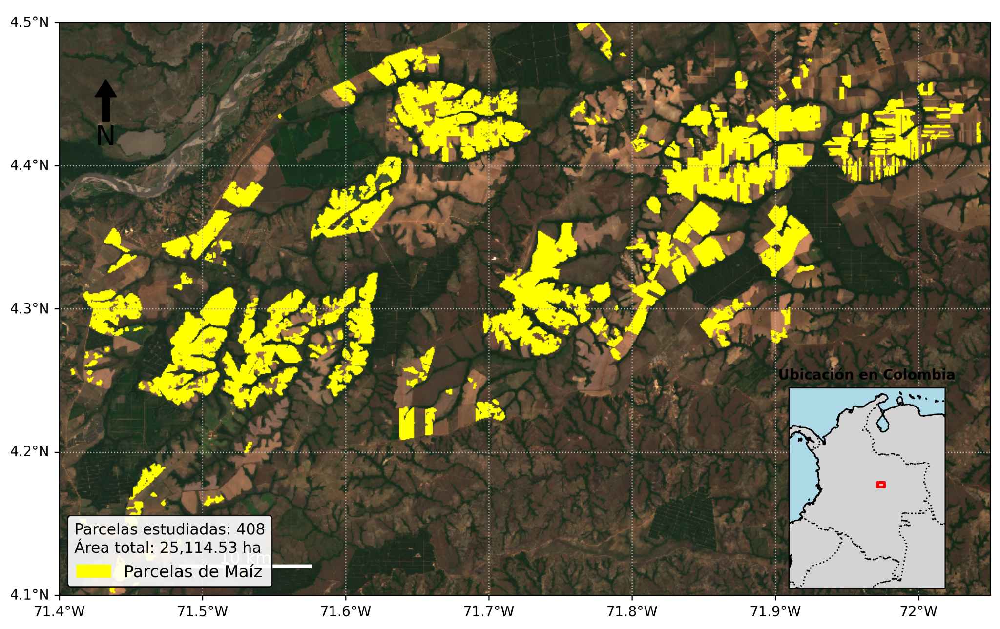
Figura 1: Área regional de estudio 2023 en Puerto Gaitán, Meta.
7.2 Fase II: Finca La Esperanza, Meta, 2024
La segunda fase se desarrolló en la Finca La Esperanza, ubicada en el departamento del Meta, en la región de la Orinoquía colombiana. El sitio corresponde a una unidad productiva con ensayos regionales de variedades de maíz bajo condiciones de sabana bien drenada. El perímetro total de la finca se documentó en 755.44 ha, de las cuales 34.62 ha corresponden al Lote Casa excluido del análisis, dejando 720.83 ha como área neta de monitoreo.
Unidad geográfica
Superficie (ha)
Porcentaje (%)
Perímetro total finca
755.44
100.0
Lote Casa (excluido)
34.62
4.6
Área neta de monitoreo (AOI)
720.83
95.4
Figura sugerida: localización de la Finca La Esperanza y AOI.
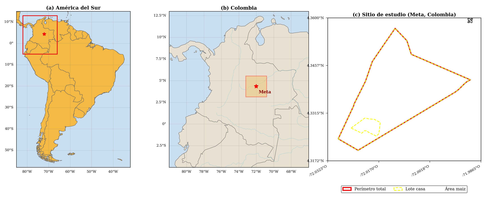
Figura 2: Ubicación de la Finca La Esperanza y delimitación del AOI.
8 Fuentes de datos
8.1 Sentinel-2 Surface Reflectance Harmonized
Se utilizó la colección COPERNICUS/S2_SR_HARMONIZED, filtrada espacialmente por el AOI y temporalmente por año de estudio. En 2023, para la fase regional, se filtraron imágenes entre el 1 de enero y el 31 de diciembre de 2023 con CLOUDY_PIXEL_PERCENTAGE < 80, obteniendo 40 imágenes para análisis. En 2024, para Finca La Esperanza, se filtraron imágenes del tile MGRS 18NZK, también con umbral de nubosidad inferior al 80 %, obteniendo 49 imágenes válidas y 47 productos gap-filled por variable biofísica.
Las bandas usadas para la inversión GPR fueron B2, B3, B4, B5, B6, B7, B8, B8A, B11 y B12. Estas bandas cubren visible, red-edge, NIR y SWIR, y se remuestrearon a 20 m cuando fue necesario.
8.2 Polígonos UPRA y área agrícola regional
Para la fase 2023 se utilizaron polígonos de maíz industrial de Meta, obtenidos de la colección temática de UPRA. Estos polígonos funcionaron como máscara espacial del cultivo y permitieron limitar el análisis a parcelas agrícolas de interés.
8.3 Área de interés de Finca La Esperanza
Para 2024 se trabajó con el AOI de la Finca La Esperanza. Se excluyó el lote de infraestructura o vivienda para evitar que superficies no agrícolas afectaran la estimación de variables biofísicas.
8.4 MODIS MCD15A3H v6.1
La validación externa de LAI y FVC para el estudio regional 2023 se realizó con el producto MODIS MCD15A3H v6.1. Este producto proporciona composiciones de cuatro días a 500 m de resolución espacial. Se usaron las bandas LAI y FPAR, aplicando sus factores de escala: LAI × 0.1 y FPAR × 0.01. En este informe, FPAR se usa como referencia funcional para comparar con FVC, reconociendo que no son variables idénticas pero sí están relacionadas con la cobertura y absorción de radiación fotosintéticamente activa.
8.5 Scripts y repositorio
El repositorio del proyecto contiene la estructura de código y resultados usada para reproducir el flujo. La organización principal es:
El flujo metodológico se estructuró en ocho fases: (1) delimitación del área de estudio, (2) filtrado y preprocesamiento de Sentinel-2, (3) estimación de variables biofísicas mediante GPR espectral, (4) reconstrucción temporal mediante gap-filling GPR, (5) extracción de métricas LSP mediante doble logística, (6) validación y análisis local con Python, (7) verificación numérica complementaria con Julia, y (8) desarrollo instrumental de un plugin para QGIS 3 orientado a trasladar el flujo GPR–gap-filling–LSP a un entorno de escritorio de código abierto.
Figura sugerida: diagrama de flujo GEE + Python + Julia.
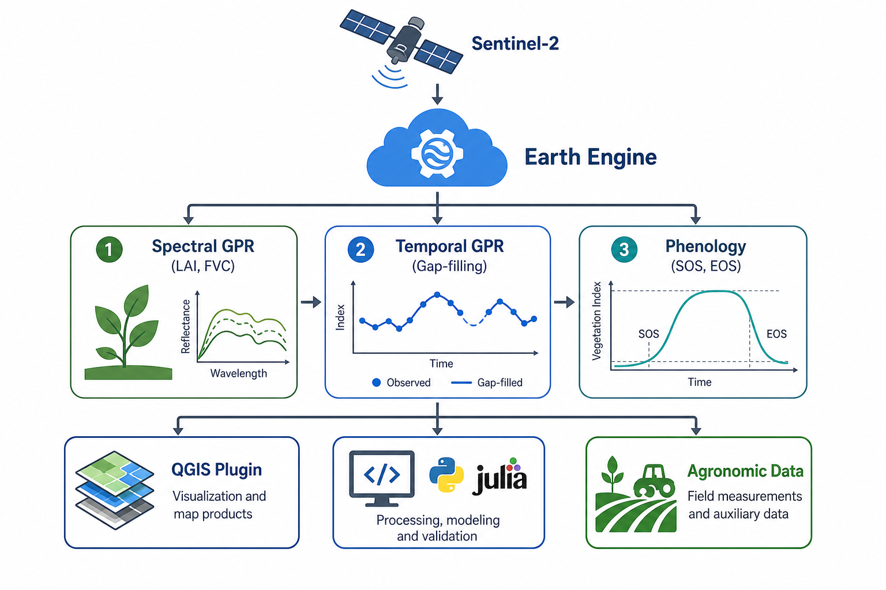
Figura 3: Flujo metodológico general del proyecto.
El preprocesamiento consistió en excluir píxeles no válidos mediante la combinación de dos fuentes de calidad de Sentinel-2: la banda SCL y la máscara QA60. Se excluyeron clases asociadas con saturación o defectos, sombras, agua, nubes de probabilidad media o alta, cirros y nieve. Adicionalmente, se filtraron los bits 10 y 11 de QA60 para remover nubes y cirros.
#| eval: false
#| code-fold: true
#| code-summary: "Mostrar/ocultar código JavaScript/GEE"
// Fragmento conceptual: máscara SCL + QA60 en Google Earth Engine
function maskS2sr(image) {
var scl = image.select('SCL');
var qa = image.select('QA60');
var sclMask = scl.neq(1)
.and(scl.neq(2))
.and(scl.neq(3))
.and(scl.neq(6))
.and(scl.neq(7))
.and(scl.neq(8))
.and(scl.neq(9))
.and(scl.neq(10))
.and(scl.neq(11));
var cloudBitMask = ee.Number(2).pow(10).int();
var cirrusBitMask = ee.Number(2).pow(11).int();
var qaMask = qa.bitwiseAnd(cloudBitMask).eq(0)
.and(qa.bitwiseAnd(cirrusBitMask).eq(0));
return image.updateMask(sclMask).updateMask(qaMask)
.copyProperties(image, ['system:time_start']);
}
9.3 Estimación de variables biofísicas mediante GPR espectral
La estimación píxel a píxel se realizó usando modelos GPR preentrenados sobre datos sintéticos PROSAIL/ALEBD con configuración Sentinel-2. La predicción media del GPR puede expresarse como:
\[
\hat{y}(x_*) = k_*^T \alpha + \mu
\]
donde \(x_*\) es el vector de reflectancias Sentinel-2 del píxel, \(k_*\) es el vector de covarianzas entre el píxel y las muestras de entrenamiento, \(\alpha\) son los coeficientes aprendidos y \(\mu\) es la media del modelo. La similitud espectral se calcula mediante un kernel RBF anisotrópico:
Las series Sentinel-2 son discontinuas por nubosidad. Para reconstruirlas, se aplicó GPR temporal con kernel RBF dentro de una ventana de ±30 días alrededor de cada fecha objetivo. Este paso suaviza la serie, reduce ruido atmosférico residual y permite derivar métricas fenológicas, aunque puede atenuar picos de LAI y laiCab durante etapas de máximo desarrollo.
Mostrar/ocultar código Julia
# Verificación conceptual del kernel RBF temporal en JuliausingLinearAlgebrafunctionrbf_kernel(t1, t2; ell=30.0, sigma_f=1.0) [sigma_f^2*exp(-0.5* ((a - b)^2) / ell^2) for a in t1, b in t2]endfunctiongpr_predict(t_train, y_train, t_star; ell=30.0, sigma_f=1.0, sigma_n=0.05) K =rbf_kernel(t_train, t_train; ell=ell, sigma_f=sigma_f) .+ (sigma_n^2) .* I Ks =rbf_kernel(t_train, t_star; ell=ell, sigma_f=sigma_f) alpha =cholesky(Symmetric(K)) \ y_trainreturntranspose(Ks) * alphaend
9.5 Extracción de métricas LSP
A partir de la serie gap-filled se ajustó una función doble logística para extraer SOS, POS, EOS y LOS. En la fase 2024 también se documentaron métricas adicionales como customSOS/customEOS, valores mínimo y máximo de la curva y parámetros de forma.
Banda
Métrica
Descripción
1
SOS
Start of Season; inicio de temporada en DOY
2
EOS
End of Season; fin de temporada en DOY
3
POS
Peak of Season; máximo de la curva en DOY
4
LOS
Length of Season; duración del ciclo activo
5–6
customSOS/customEOS
SOS y EOS con umbral relativo personalizado, u = 0.3
7–8
v_min / v_max
Valor mínimo y máximo de la curva doble logística
9–12
n1, m1, n2, m2
Parámetros de inflexión y pendiente de la función doble logística
9.6 Calendario fenológico documentado en campo
Para Finca La Esperanza, las etapas fenológicas del maíz se documentaron mediante entrevistas estructuradas con el ingeniero agrónomo responsable de la finca y se contrastaron con la escala de desarrollo de Ritchie y Hanway. Esta tabla es central y debe conservarse porque conecta la señal satelital con el conocimiento agronómico local.
Etapa
Código
Ciclo A (siembra 15 abr)
Ciclo B (siembra 20 ago)
Días acumulados
Siembra–Emergencia
VE
15–22 abr
20–27 ago
0–7
1ª–4ª hoja
V1–V4
22 abr–5 may
27 ago–9 sep
7–20
4ª–8ª hoja
V4–V8
5–20 may
9–24 sep
20–35
8ª–12ª hoja
V8–V12
20 may–4 jun
24 sep–9 oct
35–50
12ª hoja–Pretasel
V12–VT
4–19 jun
9–24 oct
50–65
Espigamiento masculino
VT
19–24 jun
24–29 oct
65–70
Floración / Silking
R1
24–29 jun
29 oct–3 nov
70–75
Grano ampollado
R2
29 jun–9 jul
3–13 nov
75–85
Grano lechoso
R3
9–19 jul
13–23 nov
85–95
Grano masoso
R4
19–29 jul
23 nov–3 dic
95–105
Grano dentado
R5
29 jul–8 ago
3–13 dic
105–115
Madurez fisiológica
R6
8–13 ago
13–18 dic
115–120
9.7 Rangos bibliográficos de variables biofísicas por etapa fenológica
Esta tabla también debe conservarse porque permite defender la interpretación de LAI, FVC y laiCab en ausencia de una campaña in situ sistemática.
Etapa
Código
LAI (m² m⁻²)
FVC (0–1)
laiCab (g m⁻²)
Fuente principal
Emergencia
VE
0.10–0.50
0.05–0.20
0.10–0.50
Bacour et al. (2006)
Desarrollo inicial
V1–V4
0.50–1.50
0.20–0.40
0.10–0.50
Weiss & Baret (2016)
Desarrollo vegetativo
V4–V8
1.50–2.50
0.40–0.65
0.50–1.50
Hassanpour et al. (2024)
Crecimiento activo
V8–V12
2.50–3.50
0.65–0.80
0.50–1.50
Hassanpour et al. (2024)
Pretasel
V12–VT
3.50–4.50
0.80–0.92
1.00–2.50
Sun et al. (2023)
Floración máxima
VT–R1
4.50–6.00
0.90–0.98
1.50–3.50
Bacour et al. (2006)
Llenado temprano
R2–R3
3.50–5.00
0.80–0.95
1.00–2.50
Casa et al. (2010)
Llenado tardío
R4–R5
2.00–3.50
0.65–0.82
0.50–1.50
Weiss & Baret (2016)
Madurez/Senescencia
R6
0.50–1.50
0.35–0.60
0.20–0.80
Bacour et al. (2006)
9.8 Desarrollo del plugin GEE GPR Phenology para QGIS
Como componente de desarrollo de software y transferencia tecnológica, se incorporó el plugin GEE GPR Phenology para QGIS 3 como un aporte instrumental del proyecto. Este componente no reemplaza la cadena principal implementada en Google Earth Engine y Python; su función es trasladar la lógica del flujo a un entorno de escritorio de acceso abierto, más cercano a usuarios técnicos que trabajan habitualmente con SIG de escritorio.
El plugin se concibe como una interfaz operativa para ejecutar o reproducir los pasos principales de la metodología: (1) estimación espectral GPR de variables biofísicas, (2) reconstrucción temporal mediante gap-filling GPR, (3) generación de métricas LSP mediante ajuste doble logístico, y (4) automatización de la descarga de colecciones Sentinel-2 desde Google Earth Engine. En el informe original de la fase 2024, este componente fue presentado como una contribución complementaria desarrollada en Python/NumPy para QGIS 3, con el objetivo de democratizar el acceso a la cadena GPR–gap-filling–LSP y reducir la dependencia exclusiva del Code Editor de GEE.
Desde el punto de vista de Programación en SIG, el plugin se incluye porque evidencia una transición desde un script académico hacia una herramienta reutilizable. En lugar de dejar la metodología únicamente como código disperso, el desarrollo del plugin organiza la funcionalidad en módulos, facilita su uso por terceros y fortalece el principio de ciencia abierta exigido para el proyecto final.
Módulos funcionales del plugin:
Módulo
Función dentro del plugin
Relación con el flujo del informe
Spectral GPR
Estimación píxel a píxel de LAI, FVC y laiCab desde reflectancias Sentinel-2 BOA
Corresponde a la etapa de recuperación biofísica
Gap-filling GPR
Reconstrucción de series temporales continuas mediante kernel RBF temporal
Corresponde a la etapa de reconstrucción temporal
LSP Generator
Ajuste de la función doble logística y derivación de SOS, POS, EOS y LOS
Corresponde a la etapa fenológica
GEE Auto
Descarga automatizada de colecciones Sentinel-2 desde GEE
Corresponde a la etapa de adquisición y automatización
#| eval: false
#| code-fold: true
#| code-summary: "Mostrar/ocultar comandos"
# Organización sugerida si se desea incorporar el plugin dentro del repositorio final
# como submódulo o como carpeta complementaria.
git submodule add https://github.com/jf-floresriera/GEE_GPR_Phenology plugin_qgis/GEE_GPR_Phenology
# o, de forma simple:
git clone https://github.com/jf-floresriera/GEE_GPR_Phenology plugin_qgis/GEE_GPR_Phenology
Figura sugerida: interfaz gráfica del plugin en QGIS.
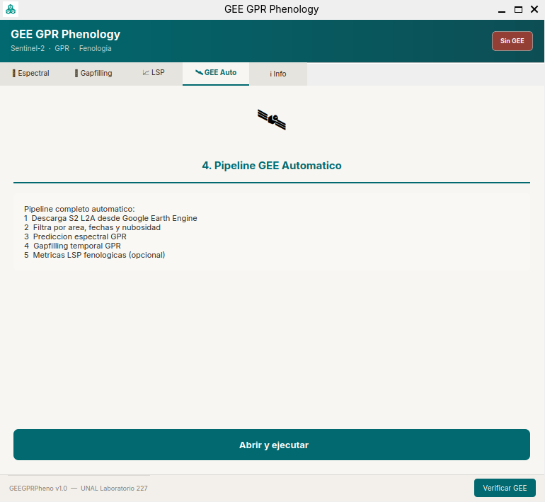
Figura 4: Interfaz del plugin GEE GPR Phenology para QGIS 3.
9.9 Validación externa con MODIS MCD15A3H
La validación de los mapas de índice de área foliar (LAI) y fracción de cobertura de vegetación (FVC) derivados del modelo GPR se realizó utilizando como referencia el producto MODIS MCD15A3H versión 6.1, que proporciona composiciones de LAI y FPAR de cuatro días a 500 m de resolución espacial. A partir de este producto se extrajeron las bandas LAI, escalada por un factor 0.1, y FPAR, escalada por 0.01, para obtener valores en unidades físicas comparables con los mapas derivados de Sentinel-2: LAI en m²/m² y FVC en fracción 0–1.
Para garantizar una comparación consistente en espacio y tiempo, se generó un conjunto de 500 puntos de muestreo aleatorios dentro del área de estudio, que se mantuvieron fijos para todas las fechas analizadas. Para cada imagen gap-filled de LAI y FVC del año 2023, se seleccionó la adquisición de MODIS más cercana en el tiempo dentro de una ventana de ±2 días, y se extrajeron los valores de LAI y FPAR en los mismos puntos, reproyectando cuando fue necesario. Esto dio lugar a un conjunto final de 1057 observaciones emparejadas, que se utilizaron para calcular métricas globales y construir diagramas de dispersión tipo MODIS vs GPR/GF.
#| eval: false
#| code-fold: true
#| code-summary: "Mostrar/ocultar código JavaScript/GEE"
// Validación MODIS: idea central en GEE
var modis = ee.ImageCollection('MODIS/061/MCD15A3H')
.filterDate('2023-01-01', '2023-12-31')
.map(function(img) {
var lai = img.select('Lai').multiply(0.1).rename('LAI_MODIS');
var fpar = img.select('Fpar').multiply(0.01).rename('FPAR_MODIS');
return lai.addBands(fpar).copyProperties(img, ['system:time_start']);
});
// El script completo se incluye en el Anexo C: code_modis/validacion_modis_gee.js
10.1 Resultados de la Fase I: escala regional Puerto Gaitán 2023
La fase regional 2023 permitió evaluar la transferibilidad del flujo GPR en una escala de producción industrial de maíz en Puerto Gaitán, Meta. El análisis partió de 408 parcelas industriales de maíz provenientes de la colección temática de UPRA para 2023, con una superficie aproximada de 25,113.53 ha. Después del filtrado por observaciones Sentinel-2 válidas, el análisis final se concentró en 328 parcelas. La colección COPERNICUS/S2_SR_HARMONIZED filtrada entre enero y diciembre de 2023, con CLOUDY_PIXEL_PERCENTAGE < 80, produjo 40 imágenes útiles. Esta disponibilidad temporal permitió conservar continuidad anual suficiente para analizar los dos periodos de cultivo presentes en la región, a pesar de la nubosidad tropical.
La estimación de rasgos biofísicos mostró un desempeño consistente entre LAI, FVC y laiCab. Los valores de R² estuvieron entre 0.776 y 0.847, con NRMSE cercano al 13 % para las tres variables. FVC presentó el ajuste más alto (R² = 0.847), mientras que LAI y laiCab también conservaron valores satisfactorios para un flujo transferido a condiciones tropicales. El sesgo fue negativo en las tres variables, lo cual indica una ligera tendencia a la subestimación, particularmente en valores altos. Este patrón fue interpretado en el avance original como coherente con el suavizado temporal y con las dificultades habituales de los sensores ópticos en zonas de alta nubosidad (Gao & Zhang, 2021; Shen et al., 2024; Salinero-Delgado et al., 2022).
Variable
Unidades
N
RMSE
NRMSE (%)
R²
Bias
LAI
m²/m²
39
0.4344
13.44
0.781
-0.114
FVC
0–1
39
0.0979
13.01
0.847
-0.035
laiCab
g/m²
39
0.1960
13.24
0.776
-0.048
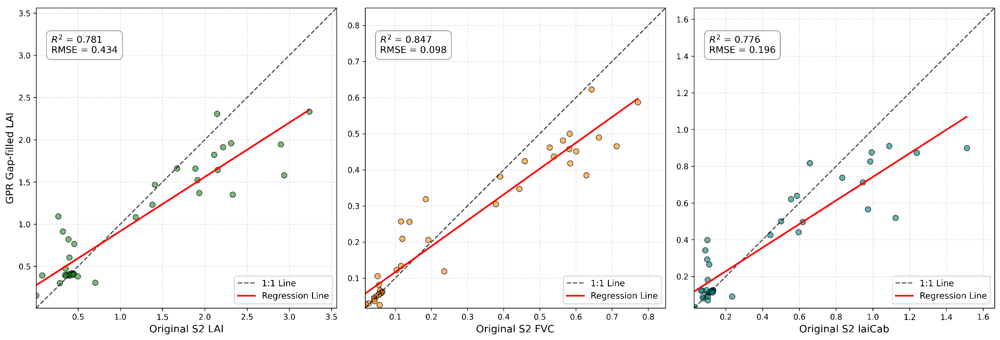
Figura 5: Validación cruzada regional 2023 para LAI, FVC y laiCab.
La reconstrucción temporal reveló un patrón fenológico bimodal asociado con los dos ciclos de cultivo presentes en la región. Durante el primer ciclo, LAI y FVC aumentaron hacia junio-julio y decrecieron hacia agosto. Durante el segundo ciclo, las trayectorias mostraron un nuevo incremento hacia octubre-noviembre, aunque con diferencias de amplitud entre variables. Esta respuesta respalda el valor de las series gap-filled, porque permite interpretar la dinámica del cultivo más allá de observaciones aisladas y conectar la señal satelital con ventanas de siembra y desarrollo agronómico (Tran et al., 2023; Salinero-Delgado et al., 2022).
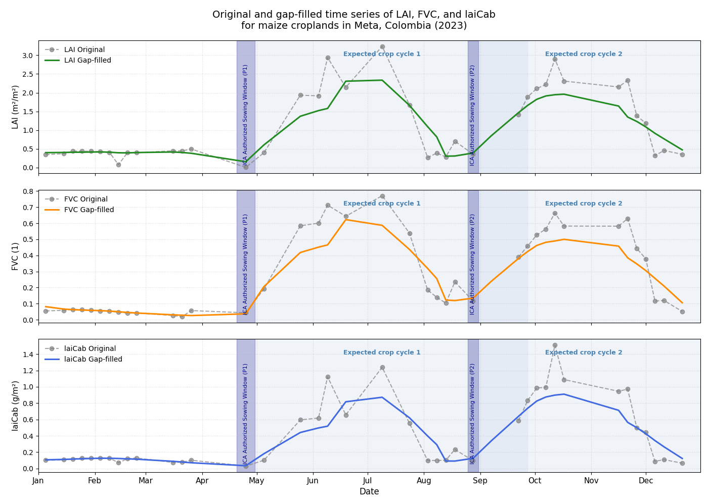
Figura 6: Series temporales regionales de LAI, FVC y laiCab, 2023.
Las métricas LSP derivadas a escala regional mostraron diferencias entre NDVI y las variables biofísicas. NDVI detectó un inicio de temporada más temprano y una duración más larga, mientras que LAI y laiCab generaron duraciones más conservadoras. Esta diferencia no debe interpretarse como una contradicción metodológica, sino como evidencia de que cada indicador enfatiza una dimensión distinta del cultivo. NDVI resume verdor espectral, FVC representa cierre de canopia, LAI describe estructura foliar y laiCab captura una dimensión bioquímica del dosel. Esta interpretación es consistente con el enfoque trait-based propuesto por Estévez et al. (2022) y Salinero-Delgado et al. (2022), y con estudios que comparan fenología basada en índices de vegetación y señales más cercanas a funcionamiento fotosintético (Wang et al., 2022).
Variable
N
SOS (DOY)
POS (DOY)
EOS (DOY)
LOS (días)
NDVI
311
167.5 ± 43
203.9 ± 33
253.4 ± 39
85.5 ± 25
LAI
327
190.9 ± 41
220.5 ± 39
259.7 ± 40
69.2 ± 12
FVC
325
178.5 ± 41
213.6 ± 39
258.4 ± 39
80.7 ± 12
laiCab
328
208.4 ± 41
234.9 ± 40
271.1 ± 40
63.0 ± 12
10.2 Resultados de la Fase II: Finca La Esperanza 2024
La fase 2024 permitió evaluar la cadena en una unidad productiva específica, con AOI delimitado y calendario fenológico documentado en campo. Esta fase no reemplaza la fase regional, sino que la complementa: mientras 2023 evalúa escalabilidad espacial, 2024 profundiza en interpretación agronómica, rangos por etapa, validación interna detallada y transferencia del flujo hacia un desarrollo de software geoespacial.
La validación cruzada entre el producto GPR directo y el producto gap-filled mostró alta consistencia interna. Los coeficientes de determinación fueron R² = 0.904 para LAI, R² = 0.956 para FVC y R² = 0.915 para laiCab. Estos valores se ubican dentro del rango alto reportado en trabajos de GPR para variables biofísicas derivadas de Sentinel-2, y respaldan que la reconstrucción temporal conserva la señal espacial y temporal del cultivo (Estévez et al., 2022; Pipia et al., 2021; Salinero-Delgado et al., 2022). Los sesgos fueron negativos pero de baja magnitud, lo cual se interpretó como una consecuencia esperada del suavizado temporal del kernel RBF.
Variable
n
R²
RMSE/RECM
MAE/EAM
Bias
Pearson r
Pendiente
LAI
62
0.904
0.101
—
-0.041
>0.985
0.733
FVC
100
0.956
0.046
—
-0.018
>0.985
0.850
laiCab
100
0.915
0.190
—
-0.014
>0.985
0.741
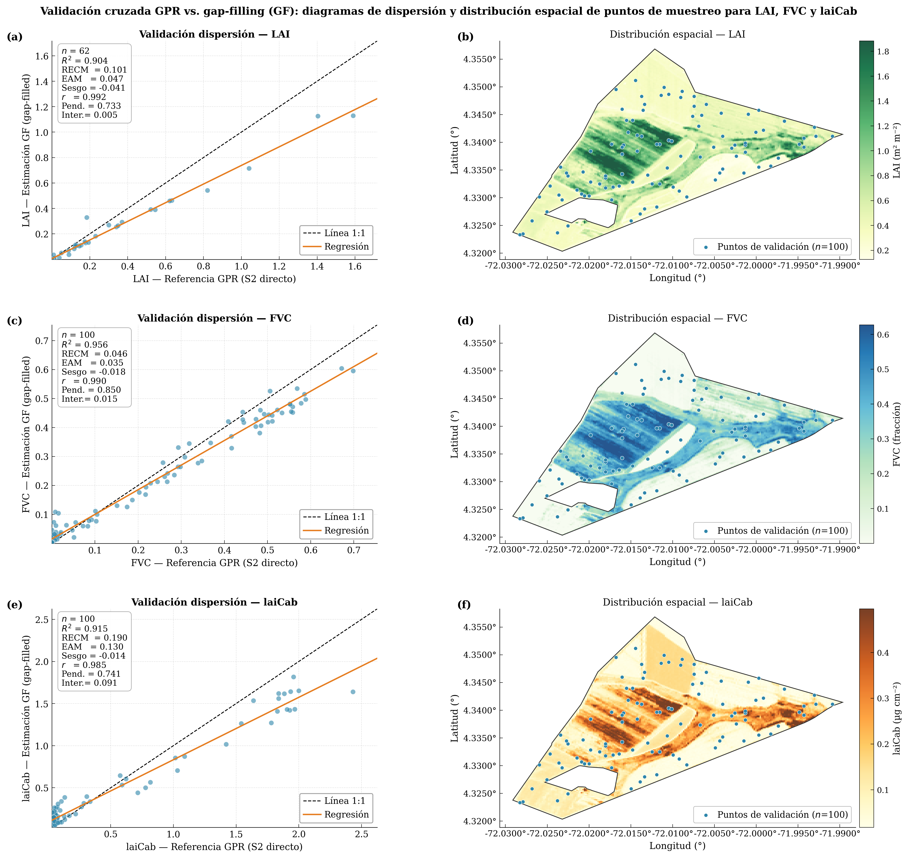
Figura 7: Validación cruzada GPR directo vs gap-filled en Finca La Esperanza.
La distribución espacial de LAI durante el Ciclo A mostró valores bajos en V4, máximos durante VT y reducción hacia R3, lo cual coincide con la expansión foliar y posterior senescencia del cultivo. El producto gap-filled preservó la estructura espacial general, aunque suavizó gradientes locales y atenuó algunos máximos. Este resultado es coherente con el comportamiento esperado del GPR temporal y con la literatura sobre gap-filling en series ópticas, donde la reconstrucción mejora continuidad pero puede reducir picos fenológicos (Belda et al., 2020; Pipia et al., 2021).
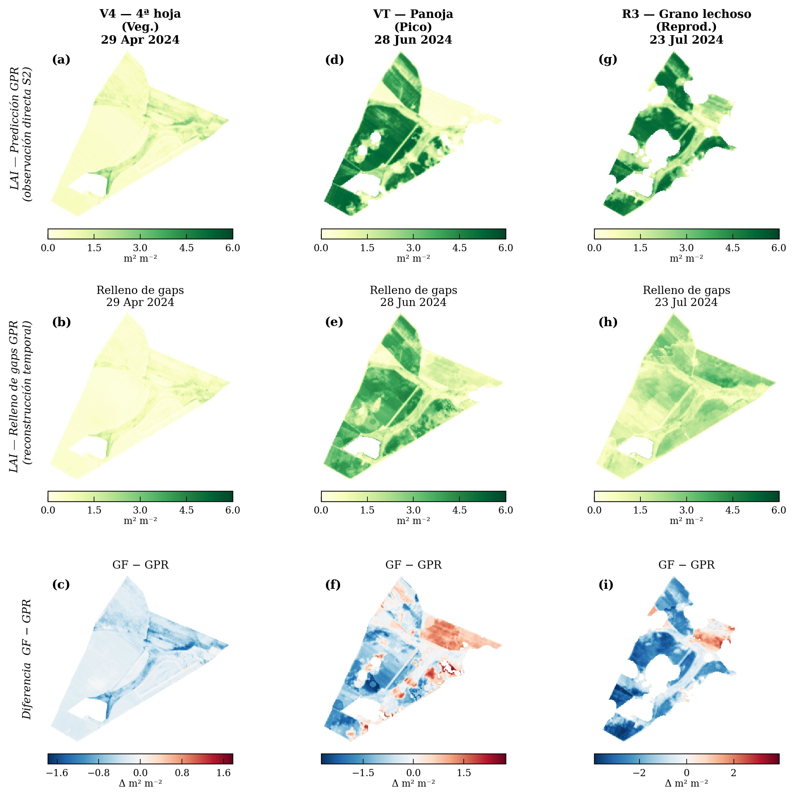
Figura 8: Predicción GPR vs gap-filling de LAI durante el Ciclo A.
La FVC durante el Ciclo B mostró cierre progresivo de canopia. En V4, los valores fueron bajos o intermedios; durante VT, la cobertura alcanzó valores altos; y hacia R3 se observó una reducción asociada con el avance del ciclo reproductivo. La continuidad espacial del producto gap-filled fue especialmente útil en fechas con observaciones Sentinel-2 fragmentadas por nubosidad, lo cual confirma la importancia de reconstruir series temporales en ambientes tropicales.
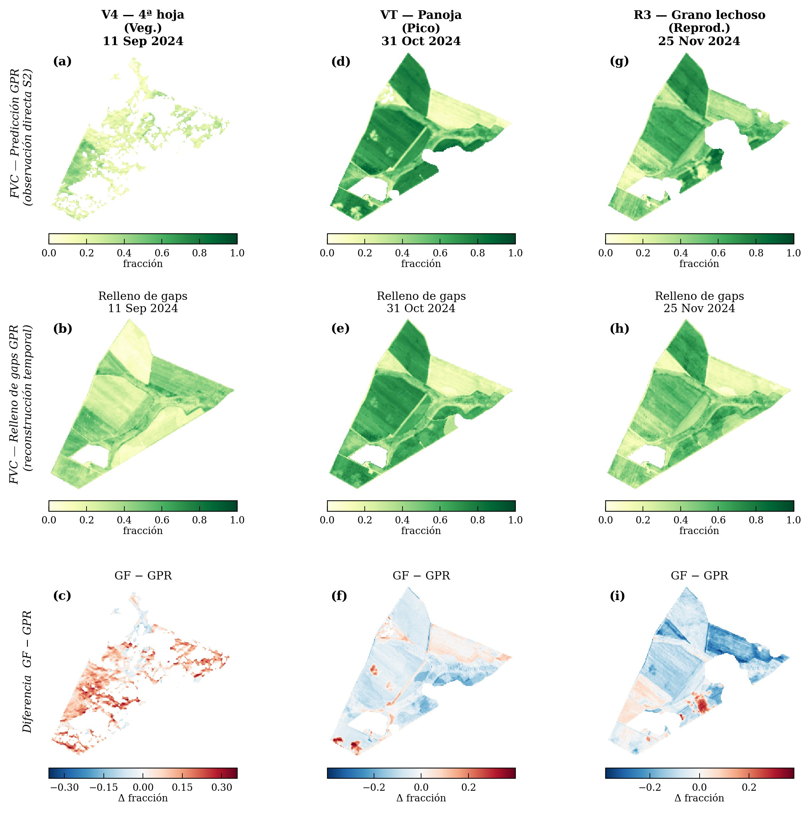
Figura 9: Predicción GPR vs gap-filling de FVC durante el Ciclo B.
La variable laiCab presentó una variabilidad espacial más marcada, especialmente durante etapas de máximo desarrollo. Esta respuesta es agronómicamente plausible porque laiCab integra estructura foliar y contenido de clorofila del dosel; por tanto, puede capturar diferencias entre franjas varietales, vigor, estado fisiológico y heterogeneidad intra-parcela. Este resultado respalda la importancia de no interpretar únicamente variables estructurales como LAI o FVC, sino también variables bioquímicas del dosel (Kong et al., 2022; Estévez et al., 2022).
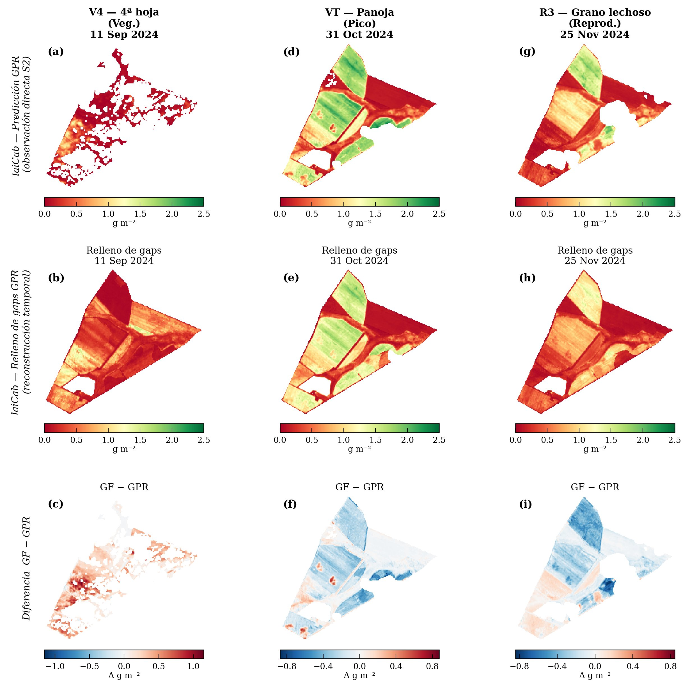
Figura 10: Predicción GPR vs gap-filling de laiCab durante el Ciclo B.
Los perfiles temporales anuales de LAI, FVC y laiCab durante 2024 mostraron un patrón bimodal, con picos asociados a los ciclos A y B. El Ciclo A presentó mayor amplitud promedio, particularmente en LAI y laiCab, mientras que el Ciclo B mostró un pico más moderado. Esta diferencia fue interpretada en el avance original como coherente con contrastes de radiación, nubosidad, establecimiento y condiciones estacionales entre ciclos. La envolvente intercuartílica fue más amplia en los momentos de mayor desarrollo, lo cual refleja heterogeneidad espacial y posible variación entre cultivares.
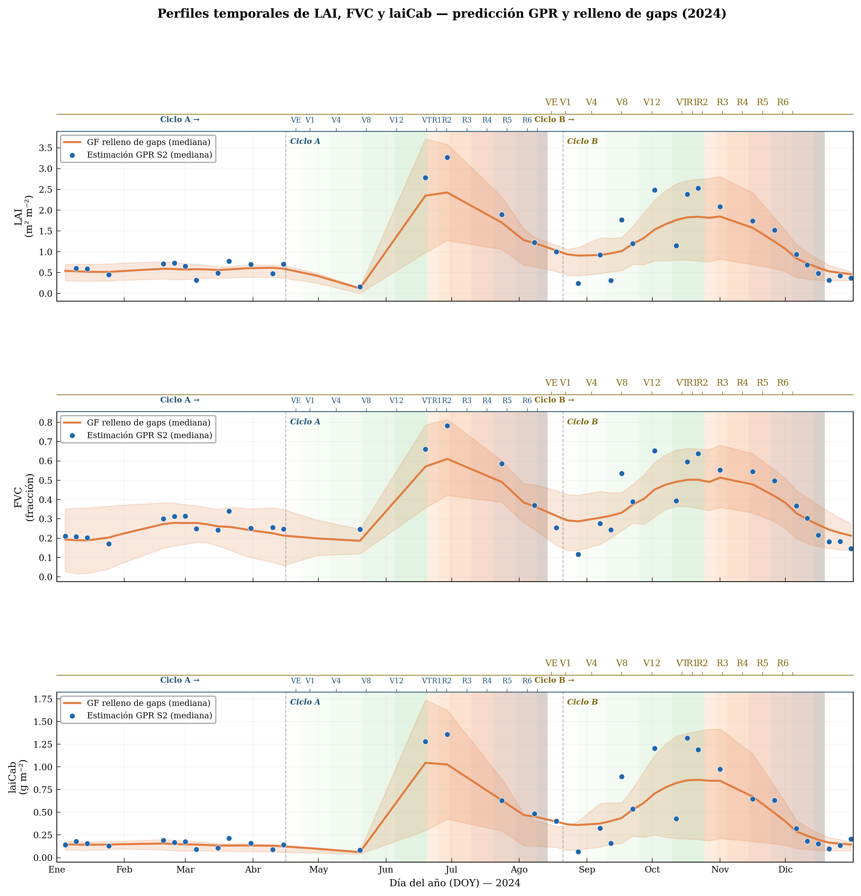
Figura 11: Perfiles temporales anuales de LAI, FVC y laiCab durante 2024.
Las métricas LSP derivadas del ajuste doble logístico representaron predominantemente el ciclo de mayor amplitud. Esta es una limitación metodológica importante en sistemas de doble cosecha anual, porque el algoritmo mono-evento tiende a seleccionar el ciclo dominante por píxel y puede subrepresentar el ciclo secundario. Por ello, la interpretación de SOS, POS, EOS y LOS debe hacerse en conjunto con el calendario agrícola documentado, no únicamente desde la salida matemática del ajuste. Esta cautela es consistente con reportes de sistemas de doble cultivo y algoritmos LSP mono-evento (Liu et al., 2020; Pipia et al., 2021; Yang et al., 2023).
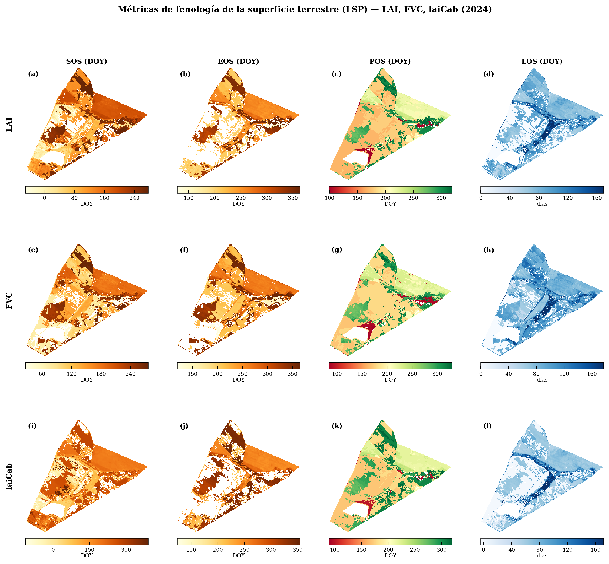
Figura 12: Métricas LSP de LAI, FVC y laiCab en Finca La Esperanza.
10.3 Resultado instrumental: plugin GEE GPR Phenology para QGIS
Además de los productos biofísicos y fenológicos, el proyecto incorpora un resultado de desarrollo de software: el plugin GEE GPR Phenology para QGIS 3. Este resultado es importante porque transforma el flujo metodológico en una herramienta potencialmente reutilizable por usuarios que no necesariamente trabajan directamente en el Code Editor de Google Earth Engine. En el segundo avance se presentó como un aporte instrumental desarrollado para trasladar la cadena GPR–gap-filling–LSP a un entorno de escritorio abierto, con una organización modular en Python/NumPy.
La interfaz del plugin organiza el flujo en módulos operacionales: Spectral GPR, asociado con la estimación de LAI, FVC y laiCab; Gap-filling GPR, asociado con la reconstrucción temporal; LSP Generator, asociado con el ajuste doble logístico y la obtención de SOS, POS, EOS y LOS; y GEE Auto, orientado a la automatización de descargas desde Google Earth Engine. Esta estructura permite presentar el proyecto no solo como un análisis de teledetección, sino también como un prototipo de software geoespacial alineado con el eje de desarrollo de software de la asignatura.
Figura 13: Resultado instrumental del proyecto: interfaz gráfica del plugin GEE GPR Phenology para QGIS 3.
El plugin debe interpretarse como una fase complementaria. Los resultados científicos reportados en este informe proceden del flujo GEE/Python documentado en los scripts principales, mientras que el plugin representa una vía de transferencia, reutilización y potencial adopción institucional del método. Esta distinción evita sobreafirmar resultados que no hayan sido calculados directamente desde la interfaz del plugin y mantiene la trazabilidad científica del análisis.
10.4 Resultados de la validación externa con MODIS
La validación externa con MODIS se desarrolló para la fase regional 2023, comparando LAI gap-filled con LAI MODIS y FVC gap-filled con FPAR MODIS. Se utilizaron 500 puntos aleatorios fijos dentro del área de estudio y emparejamiento temporal con una ventana de ±2 días. El conjunto final estuvo compuesto por 1057 observaciones emparejadas. Esta comparación debe interpretarse como una validación externa de consistencia y no como validación absoluta de campo, debido a la diferencia de resolución espacial entre Sentinel-2 y MODIS y a la diferencia conceptual entre FVC y FPAR.
Variable comparada
MSE
RMSE
MAE
Bias
R²
Pendiente
Intercepto
Pearson r
LAI MODIS vs LAI GF
1.63
1.28 m²/m²
0.81 m²/m²
-0.55 m²/m²
0.36
0.44
0.28
0.69
FPAR MODIS vs FVC GF
0.082
0.286
0.256
-0.22
-0.51
0.83
-0.15
0.74
En LAI, los resultados indican una correlación moderada entre el LAI gap-filled y el LAI de MODIS. La pendiente inferior a 1 y el sesgo negativo evidencian una tendencia a subestimar el LAI, especialmente en valores altos. Sin embargo, el R² de 0.36 y el coeficiente de correlación cercano a 0.7 sugieren que las variaciones espacio-temporales del LAI son capturadas razonablemente por el modelo, aun cuando la magnitud absoluta requiera calibración local adicional.
En FVC, comparado con FPAR de MODIS, se observaron errores moderados y un sesgo negativo similar. El coeficiente de Pearson cercano a 0.74 indica una relación lineal fuerte, esperable por la relación conceptual entre cobertura vegetal, absorción de radiación fotosintéticamente activa y desarrollo del dosel. Sin embargo, el R² negativo indica que la escala entre FVC y FPAR no es equivalente y que el sesgo afecta la capacidad de la regresión para explicar la varianza respecto a la media de referencia. Este resultado debe discutirse como una limitación esperada de comparar productos con distinta resolución espacial, distinta definición biofísica y diferente forma de agregación.
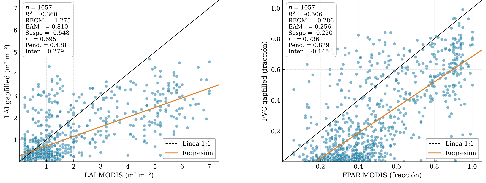
Figura 14: Validación externa con MODIS: LAI MODIS vs LAI GF y FPAR MODIS vs FVC GF.
11 Discusión
11.1 Transferibilidad del flujo GPR a condiciones tropicales
Los resultados integrados de las fases 2023 y 2024 respaldan la viabilidad técnica de transferir un flujo GPR basado en Sentinel-2 desde contextos donde fue desarrollado y probado previamente hacia sistemas agrícolas tropicales de la Orinoquía colombiana. Esta transferencia no es trivial, porque las condiciones locales combinan alta nubosidad, suelos ácidos, baja fertilidad natural, calendarios bimodales y heterogeneidad entre parcelas o franjas varietales. Por ello, el principal aporte del informe no es únicamente obtener mapas de LAI, FVC y laiCab, sino demostrar que una cadena GEE–GPR–gap-filling–LSP puede conservar coherencia espacial, temporal y agronómica bajo estas condiciones.
La consistencia observada en 2023, con R² entre 0.776 y 0.847 y NRMSE cercano al 13 %, indica que el flujo captura variabilidad biofísica regional en parcelas industriales. A su vez, la fase 2024 mostró validación cruzada interna más alta, con R² superiores a 0.90 en LAI, FVC y laiCab, lo que sugiere que el producto gap-filled conserva la señal del GPR directo a escala de finca. Estos resultados son coherentes con los antecedentes de Estévez et al. (2022), Salinero-Delgado et al. (2022) y Pipia et al. (2021), quienes demostraron la utilidad de GPR para recuperación de rasgos de cultivo y reconstrucción temporal en series Sentinel-2.
11.2 Interpretación del sesgo negativo y del suavizado temporal
Una observación recurrente en ambas fases es la presencia de sesgo negativo. En 2023, los sesgos fueron LAI = -0.114, FVC = -0.035 y laiCab = -0.048; en 2024, la validación cruzada mostró sesgos menores, pero también negativos. La validación con MODIS confirmó el mismo patrón, con sesgo de -0.55 m²/m² para LAI y -0.22 para FVC/FPAR. Este comportamiento no debe interpretarse como una falla aislada del flujo, sino como una consecuencia esperada de varios factores: suavizado temporal del kernel RBF, diferencia de resolución espacial entre sensores, mezcla subpíxel, saturación de señales ópticas en coberturas densas y ausencia de calibración local con mediciones de campo.
Belda et al. (2020) y Pipia et al. (2021) describen que los métodos de gap-filling tienden a moderar picos puntuales, especialmente cuando la ventana temporal integra observaciones antes y después del máximo fenológico. En maíz, este efecto es crítico durante VT–R1, cuando LAI y laiCab pueden alcanzar sus valores máximos. Por tanto, las fechas fenológicas pueden ser razonablemente estimadas, pero las magnitudes absolutas máximas pueden requerir corrección de sesgo si se desean aplicaciones como estimación de productividad, balance de carbono o modelación fisiológica.
11.3 Valor del calendario fenológico y de los rangos bibliográficos
El calendario fenológico documentado con el ingeniero agrónomo responsable de la Finca La Esperanza es uno de los aportes metodológicos más importantes del proyecto. Este calendario evita interpretar las series satelitales de forma aislada y permite vincular las transiciones de LAI, FVC y laiCab con eventos agronómicos concretos: emergencia, desarrollo vegetativo, pretasel, floración, llenado de grano y madurez fisiológica. Al contrastar estas etapas con la escala de Ritchie y Hanway (1982), el informe conecta conocimiento local, literatura agronómica y productos satelitales.
La tabla de rangos bibliográficos de LAI, FVC y laiCab también debe conservarse porque funciona como validación indirecta. En ausencia de campañas sistemáticas de LAI-2200, fotografía hemisférica o muestreo destructivo, comparar los valores estimados con rangos reportados por Bacour et al. (2006), Casa et al. (2010), Weiss y Baret (2016), Hassanpour et al. (2024) y Sun et al. (2023) permite evaluar plausibilidad biofísica. Esta estrategia no reemplaza una validación absoluta, pero aumenta la robustez interpretativa y evita que los mapas se presenten sin contexto agronómico.
11.4 Discusión de la validación externa con MODIS
La validación con MODIS MCD15A3H aporta una evaluación externa para la fase regional 2023. El resultado más importante es que LAI y FVC/FPAR presentan correlaciones moderadas-altas, pero también sesgos negativos. En LAI, el Pearson r cercano a 0.69 indica que el flujo Sentinel-2/GPR captura parte importante de la variación espacio-temporal, aunque la pendiente de aproximadamente 0.44 muestra subestimación en valores altos. En FVC/FPAR, el Pearson r cercano a 0.74 confirma una relación lineal fuerte, pero el R² negativo evidencia que FVC y FPAR no son equivalentes y que el sesgo afecta la comparación frente a la media de referencia.
Esta validación debe presentarse con cuidado. MODIS tiene resolución de 500 m, mientras que Sentinel-2 trabaja a decenas de metros. Por tanto, cada píxel MODIS integra una mezcla de coberturas, bordes, suelo, vegetación y posibles cultivos diferentes. Además, FPAR representa absorción de radiación fotosintéticamente activa, mientras que FVC representa fracción de cobertura vegetal. Ambas variables están relacionadas, pero no son idénticas. En consecuencia, los errores observados no invalidan el flujo; más bien muestran los límites esperados de comparar productos con diferente escala espacial, definición biofísica y esquema de agregación.
11.5 Aporte del plugin QGIS como desarrollo de software geoespacial
El plugin GEE GPR Phenology debe discutirse como una contribución instrumental y no únicamente como una figura de interfaz. Su valor principal está en convertir una cadena metodológica compleja —GEE, GPR espectral, gap-filling temporal, ajuste LSP y descarga de productos— en una arquitectura modular que puede ser ejecutada o adaptada desde QGIS 3. Esto responde directamente al eje de desarrollo de software de la guía del proyecto final, porque el trabajo no se limita a procesar imágenes, sino que propone una herramienta que organiza el método para usuarios externos.
Desde una perspectiva de ciencia abierta, el plugin mejora la transferencia del conocimiento. El Code Editor de Google Earth Engine es poderoso, pero puede ser una barrera para técnicos agrícolas, instituciones regionales o usuarios SIG que trabajan principalmente con QGIS. Al trasladar la metodología a un plugin, se facilita la adopción del flujo por parte de otros investigadores o profesionales. Sin embargo, el plugin debe presentarse como una fase complementaria y en desarrollo. Para una versión futura, sería recomendable documentar pruebas unitarias, tiempos de ejecución, manejo de errores, compatibilidad con versiones de QGIS y comparación formal entre salidas del plugin y salidas GEE/Python.
11.6 Aporte de Julia como mejora de programación
La incorporación de Julia se justifica como una mejora de programación y reproducibilidad numérica. El flujo operativo principal permanece en GEE y Python porque allí se ejecutan la adquisición, descarga, control de calidad, validación y visualización. Julia se usa como lenguaje complementario para verificar componentes matemáticos del GPR temporal, especialmente el kernel RBF, la matriz de covarianza y el cálculo de métricas. Esta decisión evita sobrecargar el proyecto con una traducción completa no validada, pero demuestra dominio multilenguaje, que es uno de los énfasis de la asignatura.
11.7 Límites del enfoque y mejoras futuras
La primera limitación es la ausencia de mediciones in situ sistemáticas de LAI, FVC y laiCab sincronizadas con pasos Sentinel-2. La segunda es la naturaleza mono-evento del ajuste doble logístico, que puede seleccionar el ciclo de mayor amplitud y subrepresentar el segundo ciclo en sistemas bimodales. La tercera es la comparación con MODIS, que introduce diferencias de resolución espacial y definición biofísica. La cuarta es la madurez del plugin, que debe seguir documentándose y probándose antes de presentarse como herramienta operativa plenamente validada.
Como mejoras futuras se recomienda: (i) incorporar campañas de validación con LAI-2200, fotografía hemisférica o muestreo destructivo; (ii) usar fechas reales de siembra y cosecha por parcela; (iii) ajustar algoritmos LSP multi-evento para sistemas de doble cosecha; (iv) evaluar sensores de mayor resolución espacial como PlanetScope o productos Sentinel-2 superresueltos; (v) aplicar corrección de sesgo para LAI y FVC en valores altos; y (vi) consolidar el plugin QGIS con documentación, pruebas reproducibles y ejemplos de uso.
12 Conclusiones
El proyecto demostró que es posible organizar un flujo reproducible de Programación en SIG para estimar variables biofísicas y métricas fenológicas de maíz en la Orinoquía colombiana mediante Sentinel-2, GEE, GPR, Python y Julia. La integración de las dos fases permitió construir una narrativa más sólida: la fase regional 2023 validó la escalabilidad del enfoque sobre parcelas industriales de maíz, mientras que la fase 2024 profundizó en interpretación agronómica a nivel de finca y ensayos varietales.
La validación interna mostró alta consistencia entre productos GPR directos y gap-filled, especialmente en FVC. La validación con MODIS mostró correlaciones moderadas a altas, pero también un sesgo negativo sistemático, especialmente en valores altos de LAI y FVC/FPAR. Esto indica que los mapas GPR gap-filled son útiles para seguimiento espacio-temporal y análisis fenológico, pero requieren cautela cuando se usen para estimar magnitudes absolutas.
El desarrollo del plugin GEE GPR Phenology para QGIS 3 fortalece el componente de desarrollo de software del proyecto. Su aporte consiste en trasladar el flujo GPR–gap-filling–LSP a una interfaz geoespacial de escritorio, favoreciendo la transferencia metodológica y el uso potencial por parte de usuarios técnicos. En la versión actual, se presenta como una contribución instrumental complementaria al flujo principal GEE/Python, con necesidad de validación operativa adicional.
La incorporación de Julia como lenguaje complementario fortalece el carácter multilingüe del informe sin sobrecargar el desarrollo. Julia se usa de forma estratégica para verificar kernels, matrices de covarianza y métricas, mientras que GEE y Python conservan el rol principal en procesamiento geoespacial y análisis de resultados.
Como pasos futuros se recomienda: realizar campañas de validación in situ sincronizadas con Sentinel-2; corregir sesgos mediante calibración local; explorar modelos multi-evento para sistemas con doble cosecha anual; evaluar imágenes de mayor resolución espacial; y fortalecer la publicación del repositorio con documentación, entorno reproducible y anexos completos de código.
13 Organización recomendada de figuras
Para evitar confusión entre el informe 1, el informe 2 y la nueva validación MODIS, se recomienda organizar las figuras así:
Amin, E., et al. (2022). Multi-season phenology mapping of Nile Delta croplands using time series of Sentinel-2 and Landsat 8 green LAI. Remote Sensing, 14(8), 1812. https://doi.org/10.3390/rs14081812
Amin, E., Pipia, L., Belda, S., Perich, G., Graf, L. V., Aasen, H., Salinero-Delgado, M., Verrelst, J., & Reyes-Muñoz, P. (2022). In-season forecasting of within-field grain yield from Sentinel-2 time series data. International Journal of Applied Earth Observation and Geoinformation, 110, 102824. https://doi.org/10.1016/j.jag.2023.103636
Amin, N. U., Islam, F., Umar, M., Muhammad, W., Rahman, S. U., Gaafar, A. R. Z., & Bourhia, M. (2025). Evaluation of crop phenology using remote sensing and decision support system for agrotechnology transfer. Scientific Reports, 15(1), 11582. https://doi.org/10.1038/s41598-025-95109-4
Bacour, C., Baret, F., Beal, D., Weiss, M., & Pavageau, K. (2006). Neural network estimation of LAI, FAPAR, FCover and LAI×Cab from top-of-canopy Sentinel-2 reflectances. Remote Sensing of Environment, 105(4), 313–325. https://doi.org/10.1016/j.rse.2006.07.014
Belda, S., Pipia, L., Morcillo-Pallarés, P., Rivera-Caicedo, J. P., Amin, E., De Grave, C., & Verrelst, J. (2020). DATimeS: A machine learning time series GUI toolbox for gap-filling and vegetation phenology trends detection. Environmental Modelling & Software, 127, 104666. https://doi.org/10.1016/j.envsoft.2020.104666
Caicedo, S., Campuzano, L. F., Hernández, A. C., Alfonso, H., & Olarte, T. P. (2012). Modelo productivo para el cultivo de maíz y soya en la Altillanura colombiana. Corporación Colombiana de Investigación Agropecuaria (AGROSAVIA).
Caparros-Santiago, J. A., Quesada-Ruiz, L. C., & Rodriguez-Galiano, V. (2023). Can land surface phenology from Sentinel-2 time-series be used as an indicator of Macaronesian ecosystem dynamics? Ecological Informatics, 77, 102239. https://doi.org/10.1016/j.ecoinf.2023.102239
Casa, R., Baret, F., Buis, S., Lopez-Lozano, R., Pascucci, S., Palombo, A., & Jones, H. G. (2010). Estimation of maize canopy properties from remote sensing by inversion of 1-D and 4-D models. Precision Agriculture, 11(4), 319–334. https://doi.org/10.1007/s11119-010-9162-9
Drusch, M., Del Bello, U., Carlier, S., Colin, O., Fernandez, V., Gascon, F., Hoersch, B., Isola, C., Laberinti, P., Martimort, P., Meygret, A., Spoto, F., Sy, O., Marchese, F., & Bargellini, P. (2012). Sentinel-2: ESA’s optical high-resolution mission for GMES operational services. Remote Sensing of Environment, 120, 25–36. https://doi.org/10.1016/j.rse.2011.11.026
Estévez, J., Berger, K., Vicent, J., Rivera-Caicedo, J. P., Wocher, M., & Verrelst, J. (2021). Top-of-atmosphere retrieval of multiple crop traits using variational heteroscedastic Gaussian processes within a hybrid workflow. Remote Sensing, 13(8), 1589. https://doi.org/10.3390/rs13081589
Estévez, J., Salinero-Delgado, M., Berger, K., Pipia, L., Rivera-Caicedo, J. P., Wocher, M., Reyes-Muñoz, P., Tagliabue, G., Boschetti, M., & Verrelst, J. (2022). Gaussian processes retrieval of crop traits in Google Earth Engine based on Sentinel-2 top-of-atmosphere data. Remote Sensing of Environment, 273, 112958. https://doi.org/10.1016/j.rse.2022.112958
Flores-Riera, J. E. (2026). Trait-Based Maize Phenology Monitoring with Sentinel-2 and Gaussian Process Regression in the Colombian Orinoquía. Informe interno, Universidad Nacional de Colombia.
Gao, F., & Zhang, X. (2021). Mapping crop phenology in near real-time using satellite remote sensing: Challenges and opportunities. Journal of Remote Sensing, 2021, 8379391. https://doi.org/10.34133/2021/8379391
Gao, L., Wang, X., Johnson, B. A., Tian, Q., Wang, Y., Verrelst, J., Mu, X., & Gu, X. (2020). Remote sensing algorithms for estimation of fractional vegetation cover using pure vegetation index values: A review. ISPRS Journal of Photogrammetry and Remote Sensing, 159, 364–377. https://doi.org/10.1016/j.isprsjprs.2019.11.018
González-Orozco, C. E., Diaz-Giraldo, R. A., & Rodriguez-Castañeda, C. (2023). An early warning for better planning of agricultural expansion and biodiversity conservation in the Orinoco high plains of Colombia. Frontiers in Sustainable Food Systems, 7, 1192054. https://doi.org/10.3389/fsufs.2023.1192054
Gorelick, N., Hancher, M., Dixon, M., Ilyushchenko, S., Thau, D., & Moore, R. (2017). Google Earth Engine: Planetary-scale geospatial analysis for everyone. Remote Sensing of Environment, 202, 18–27. https://doi.org/10.1016/j.rse.2017.06.031
Hassanpour, R., Mokarram, M., Soleimanpour, S. M., Rezaei, M., Sharma, G., & Saber, M. (2024). Monitoring biophysical variables (FVC, LAI, LCab, and CWC) using Sentinel-2 time series. Remote Sensing, 16(13), 2284. https://doi.org/10.3390/rs16132284
Instituto Colombiano Agropecuario. (2023a). Resolución 1715 de 2023, por la cual se determinan las fechas de registros de productores, venta y siembra de semilla para el cultivo de maíz tecnificado en el departamento del Meta, para la cosecha primer semestre de 2023.
Instituto Colombiano Agropecuario. (2023b). Resolución 8993 de 2023, por la cual se determinan las fechas de venta y siembra de semilla para el cultivo de maíz tecnificado en el departamento del Meta, para la cosecha segundo semestre de 2023.
Kipkulei, H. K., Bellingrath-Kimura, S. D., Lana, M., Ghazaryan, G., Baatz, R., Matavel, C., & Sieber, S. (2024). Maize yield prediction and condition monitoring at the sub-county scale in Kenya: Synthesis of remote sensing information and crop modeling. Scientific Reports, 14(1), 14227. https://doi.org/10.1038/s41598-024-62623-w
Kong, W., Huang, W., Zhou, X., Chen, P., Li, J., Ao, Y., Han, D., & Zhu, X. (2022). Biangular-combined vegetation indices to improve the estimation of canopy chlorophyll content in wheat using multi-angle experimental and simulated spectral data. Frontiers in Plant Science, 13, 866301. https://doi.org/10.3389/fpls.2022.866301
Liu, L., Cao, R., Chen, J., Shen, M., Wang, S., Zhou, Y., & He, B. (2020). Detecting crop phenology from vegetation index time-series data by improved shape model fitting in each phenological stage. Remote Sensing of Environment, 277, 112520.
Masiza, W., Nkuna, B. L., Ratshiedana, P. E., Madasa, A., Nduku, L., Shwatja, T., Chirima, J. G., Nyamugama, A., Abutaleb, K., Khoboko, P. W., & Hamandawana, H. (2026). Predicting smallholder maize yield using Sentinel-2-derived phenological metrics. Smart Agricultural Technology, 13, 101870. https://doi.org/10.1016/j.atech.2026.101870
Murguia-Cozar, A., Macedo-Cruz, A., Fernandez-Reynoso, D. S., & Salgado Transito, J. A. (2021). Recognition of maize phenology in Sentinel images with machine learning. Sensors, 22(1), 94. https://doi.org/10.3390/s22010094
Peng, Q., Shen, R., Dong, J., Han, W., Huang, J., Ye, T., Zhao, W., & Yuan, W. (2023). A new method for classifying maize by combining the phenological information of multiple satellite-based spectral bands. Frontiers in Environmental Science, 10, 1089007. https://doi.org/10.3389/fenvs.2022.1089007
Pipia, L., Amin, E., Belda, S., Salinero-Delgado, M., & Verrelst, J. (2021). Green LAI mapping and cloud gap-filling using Gaussian Process Regression in Google Earth Engine. Remote Sensing, 13(3), 403. https://doi.org/10.3390/rs13030403
Rasmussen, C. E., & Williams, C. K. I. (2006). Gaussian Processes for Machine Learning. MIT Press.
Ritchie, S. W., & Hanway, J. J. (1982). How a corn plant develops. Iowa State University Cooperative Extension Service, Special Report No. 48.
Salinero-Delgado, M., Estévez, J., Pipia, L., Belda, S., Berger, K., Paredes Gómez, V., & Verrelst, J. (2022). Monitoring cropland phenology on Google Earth Engine using Gaussian Process Regression. Remote Sensing, 14(1), 146. https://doi.org/10.3390/rs14010146
Segarra, J., Buchaillot, M. L., Araus, J. L., & Kefauver, S. C. (2020). Remote sensing for precision agriculture: Sentinel-2 improved features and applications. Agronomy, 10(5), 641. https://doi.org/10.3390/agronomy10050641
Shen, M., Zhao, W., Jiang, N., et al. (2024). Challenges in remote sensing of vegetation phenology. The Innovation Geoscience, 2(2), 100070. https://doi.org/10.59717/j.xinn-geo.2024.100070
Shrestha, A., Bheemanahalli, R., Adeli, A., Samiappan, S., Czarnecki, J. M. P., McCraine, C. D., Reddy, K. R., & Moorhead, R. (2023). Phenological stage and vegetation index for predicting corn yield under rainfed environments. Frontiers in Plant Science, 14, 1168732. https://doi.org/10.3389/fpls.2023.1168732
Sun, X., Yang, Z., Su, P., Wei, K., Wang, Z., Yang, C., Wang, C., Qin, M., Xiao, L., Yang, W., Zhang, M., Song, X., & Feng, M. (2023). Non-destructive monitoring of maize LAI by fusing UAV spectral and textural features. Frontiers in Plant Science, 14, 1158837. https://doi.org/10.3389/fpls.2023.1158837
Sun, C., Tao, Y., Liu, S., Wang, S., Xu, H., Shen, Q., & Yu, H. (2024). Automatic mapping of winter wheat planting structure and phenological phases using time-series Sentinel data. Scientific Reports, 14(1), 17886. https://doi.org/10.1038/s41598-024-68960-0
Tran, K. H., Zhang, X., Ye, Y., Shen, Y., Gao, S., Liu, Y., & Richardson, A. (2023). HP-LSP: A reference of land surface phenology from fused Harmonized Landsat and Sentinel-2 with PhenoCam data. Scientific Data, 10(1), 691. https://doi.org/10.1038/s41597-023-02605-1
Verrelst, J., Muñoz, J., Alonso, L., Delegido, J., Rivera-Caicedo, J. P., Camps-Valls, G., & Moreno, J. (2012). Machine learning regression algorithms for biophysical parameter retrieval: Opportunities for Sentinel-2 and -3. Remote Sensing of Environment, 118, 127–139. https://doi.org/10.1016/j.rse.2011.11.002
Verrelst, J., Camps-Valls, G., Muñoz-Marí, J., Rivera, J. P., Veroustraete, F., Clevers, J. G. P. W., & Moreno, J. (2015). Optical remote sensing and the retrieval of terrestrial vegetation bio-geophysical properties: A review. ISPRS Journal of Photogrammetry and Remote Sensing, 108, 273–290. https://doi.org/10.1016/j.isprsjprs.2015.05.005
Wang, X., Sun, Z., Lu, S., & Zhang, Z. (2022). Comparison of phenology estimated from monthly vegetation indices and solar-induced chlorophyll fluorescence in China. Frontiers in Earth Science, 10, 802763. https://doi.org/10.3389/feart.2022.802763
Weiss, M., & Baret, F. (2016). S2ToolBox Level 2 Products: LAI, FAPAR, FCOVER. INRA/ESA.
Yang, J., Dong, J., Liu, L., Zhao, M., Zhang, X., Li, X., et al. (2023). A robust and unified land surface phenology algorithm for diverse biomes and growth cycles in China by using harmonized Landsat and Sentinel-2 imagery. ISPRS Journal of Photogrammetry and Remote Sensing, 202, 610–636. https://doi.org/10.1016/j.isprsjprs.2023.07.017
Zheng, G., & Moskal, L. M. (2009). Retrieving leaf area index using remote sensing: Theories, methods and sensors. Sensors, 9(4), 2719–2745. https://doi.org/10.3390/s90402719
15 Anexos
15.1 Anexo A. Configuración de entorno Docker y virtualización
El informe debe renderizarse dentro del contenedor Docker creado para el curso. La configuración exacta debe documentarse con la imagen base usada, la versión de Quarto, la versión de Python, la configuración de Earth Engine y las dependencias instaladas. Si se usa Conda o Mamba, debe adjuntarse environment.yml. Si se usa Julia, debe adjuntarse Project.toml.
#| eval: false
#| code-fold: true
#| code-summary: "Mostrar/ocultar comandos"
# Comandos sugeridos para reproducibilidad
quarto --version
python --version
julia --version
conda env create -f environment.yml
conda activate gpr-phenology
julia --project=. -e 'using Pkg; Pkg.instantiate()'
earthengine authenticate
quarto render informe_final_programacion_sig_robusto.qmd --to html
quarto render informe_final_programacion_sig_robusto.qmd --to pdf
15.2 Anexo B. Secuencia de ejecución del proyecto
#| eval: false
#| code-fold: true
#| code-summary: "Mostrar/ocultar comandos"
# 1. Ejecutar scripts GEE en Code Editor
code/1_Paso_GEE_Adaptado.js
code/2_Paso_GEE_Adaptado.js
code/3_Paso_GEE_Adaptado.js
# 2. Descargar y procesar productos con Python
python code/a_descargar_GEE.py
python code/b_calidad.py
python code/c_validacion.py
python code/d_graficas_articulo5.py
# 3. Validación externa MODIS
# Ejecutar code_modis/validacion_modis_gee.js en GEE
python code_modis/validacion_modis_python.py
# 4. Verificación complementaria en Julia
julia --project=. scripts_julia/gpr_temporal_kernel_check.jl
julia --project=. scripts_julia/validacion_modis_metricas.jl
# 5. Generar anexos de código
python tools/generar_anexos_codigo.py
# 6. Renderizar informe
quarto render informe_final_programacion_sig_robusto.qmd --to html
quarto render informe_final_programacion_sig_robusto.qmd --to pdf
15.3 Anexo C. Código completo
16 Anexo C. Código completo integrado
Este anexo integra los scripts principales del proyecto. En la salida HTML cada archivo aparece dentro de un bloque desplegable; en Word/PDF puede visualizarse como código suplementario al final del documento.
16.1 code/1_Paso_GEE_Adaptado.js
Google Earth Engine / JavaScript: code/1_Paso_GEE_Adaptado.js
# ============================================================# Figuras faltantes para artículo — estilo IJRS/MDPI# 1. Mapa de ubicación (S. América → Colombia → finca)# 2. Mapas GPR vs GF en etapas fenológicas clave (Ciclo B)# 3. Figura comparativa estilo Figure 6 (Salinero-Delgado 2022)# 4. Integración fenología + imágenes satelitales# ============================================================import os, re, jsonimport numpy as npimport matplotlib.pyplot as pltimport matplotlib.patches as mpatchesimport matplotlib.gridspec as gridspecimport matplotlib.ticker as mtickerimport matplotlib.patheffects as pefrom matplotlib.colors import Normalizefrom matplotlib.path import Pathfrom matplotlib.patches import PathPatch, FancyArrowPatchfrom mpl_toolkits.axes_grid1 import make_axes_locatableimport matplotlib.font_manager as fmimport rasteriofrom rasterio.warp import reproject, Resamplingimport rasterio.featuresfrom shapely.geometry import Polygon, mappingimport geopandas as gpdfrom datetime import datetimeimport warningswarnings.filterwarnings("ignore")# ── Intentar importar cartopy ────────────────────────────────try:import cartopy.crs as ccrsimport cartopy.feature as cfeature HAS_CARTOPY =TrueexceptImportError: HAS_CARTOPY =Falseprint("⚠ cartopy no instalado — mapa de ubicación usará matplotlib simple")# ── Intentar importar contextily ─────────────────────────────try:import contextily as ctx HAS_CTX =TrueexceptImportError: HAS_CTX =Falseprint("⚠ contextily no instalado — fondo satelital no disponible")# ─── ESTILO GLOBAL ARTÍCULO ──────────────────────────────────plt.rcParams.update({"font.family": "serif","font.serif": ["Times New Roman", "DejaVu Serif"],"font.size": 9,"axes.titlesize": 10,"axes.labelsize": 9,"xtick.labelsize": 8,"ytick.labelsize": 8,"legend.fontsize": 8,"legend.framealpha": 0.9,"legend.edgecolor": "0.6","figure.dpi": 150,"savefig.dpi": 300,"axes.linewidth": 0.6,"xtick.major.width": 0.5,"ytick.major.width": 0.5,"xtick.direction": "in","ytick.direction": "in",})BASE_DIR = os.path.expanduser("~/GEE_Downloads")OUTPUT_DIR = os.path.expanduser("~/analisis_gulupa/figuras_articulo")os.makedirs(OUTPUT_DIR, exist_ok=True)VARIABLES = ["LAI", "FVC", "laiCab"]CMAPS = {"LAI": "YlGn", "FVC": "YlGn", "laiCab": "RdYlGn"}VRANGES = {"LAI": (0, 6), "FVC": (0, 1), "laiCab": (0, 2.5)}UNITS = {"LAI": "m² m⁻²", "FVC": "fracción", "laiCab": "g m⁻²"}# ─── POLÍGONO REAL DE LA FINCA (WGS84) ───────────────────────AREA_TOTAL_COORDS = [ [-72.02911590018898, 4.323774005392068], [-72.02320164960223, 4.320341858927772], [-71.99426061433154, 4.337725140154523], [-71.99372417252856, 4.338110271794471], [-71.99303752702075, 4.338666572705499], [-71.99149257462817, 4.340207096166426], [-71.99072009843188, 4.340870376132908], [-71.98967671912509, 4.341426675010239], [-72.00730581274610, 4.349063111509516], [-72.00862576723136, 4.353153345576473], [-72.01213946104087, 4.356828060080524], [-72.01526010903413, 4.352303621556992], [-72.01894546422060, 4.346895815199964], [-72.02098296949191, 4.341000332940370], [-72.02443983146695, 4.334085615058952], [-72.02447201797513, 4.333775368489792], [-72.02456857749966, 4.333529310775441], [-72.02911590018898, 4.323774005392068],]LOTE_CASA_COORDS = [ [-72.02527036942277, 4.327000978587103], [-72.02123566610653, 4.329945886052444], [-72.02102108938534, 4.329988678906903], [-72.02003403646786, 4.329753318177450], [-72.01848908407528, 4.329603543129691], [-72.01829596502621, 4.329582146691876], [-72.01656862242062, 4.328672797525615], [-72.01685830099423, 4.326244294986618], [-72.01699704976303, 4.325322370602150], [-72.01762468667252, 4.324659076998467], [-72.01774806828720, 4.324616283842795], [-72.01786608548386, 4.324659076998467], [-72.01965780110581, 4.325525637880559], [-72.01980264039261, 4.325616573224313], [-72.02000648827774, 4.325718206830860], [-72.02018351407273, 4.325793094742748], [-72.02030689568741, 4.325916124867642], [-72.02041954846604, 4.326097995450447], [-72.02046782822830, 4.326124741120704], [-72.02074141354782, 4.326172883324792], [-72.02128858418686, 4.326199628992403], [-72.02208251805527, 4.325456099080927], [-72.02527036942277, 4.327000978587103],]_poly_total = Polygon(AREA_TOTAL_COORDS)_poly_casa = Polygon(LOTE_CASA_COORDS)FINCA_POLY = _poly_total.difference(_poly_casa)FINCA_GDF = gpd.GeoDataFrame(geometry=[FINCA_POLY], crs="EPSG:4326")FINCA_LON, FINCA_LAT = FINCA_POLY.centroid.x, FINCA_POLY.centroid.y# ─── ETAPAS FENOLÓGICAS ───────────────────────────────────────PHENOSTAGES = {"VE": ("Emergencia", 7, 113, 240),"V4": ("4ª hoja", 20, 126, 253),"VT": ("Panoja", 70, 176, 303),"R1": ("Espigado", 75, 181, 308),"R3": ("Grano lechoso", 95, 201, 328),"R6": ("Madurez fisiológica", 120, 226, 353),}TARGET_DOYS_B = [253, 303, 328]STAGE_NAMES_B = ["V4 — 4ª hoja\n(Veg.)","VT — Panoja\n(Pico)","R3 — Grano lechoso\n(Reprod.)",]# ─── UTILIDADES ──────────────────────────────────────────────def parse_date(filename): base = os.path.splitext(os.path.basename(filename))[0] m = re.search(r"(\d{4})-(\d{2})-(\d{2})", base)if m: return datetime(int(m.group(1)), int(m.group(2)), int(m.group(3))) m = re.search(r"(\d{8})", base)if m: s = m.group(1)return datetime(int(s[:4]), int(s[4:6]), int(s[6:8]))returnNonedef clean(arr, nodata=None): r = arr.astype(np.float32)if nodata isnotNone: r[r == nodata] = np.nan r[~np.isfinite(r)] = np.nanreturn rdef modal_shape(folder, n=20): tifs =sorted([f for f in os.listdir(folder) if f.endswith(".tif")])[:n] s = {}for t in tifs:with rasterio.open(os.path.join(folder, t)) as src: k = (src.width, src.height) s[k] = s.get(k, 0) +1returnmax(s, key=s.get)def load_collection(folder): msh = modal_shape(folder) tifs =sorted([f for f in os.listdir(folder) if f.endswith(".tif")]) dates, arrays, transforms = [], [], []for tif in tifs: date = parse_date(tif)if date isNone: continue fp = os.path.join(folder, tif)with rasterio.open(fp) as src:if (src.width, src.height) != msh: continue arr = clean(src.read(1).astype(np.float32), src.nodata) tf = src.transform dates.append(date) arrays.append(arr) transforms.append(tf) pairs =sorted(zip(dates, arrays, transforms), key=lambda x: x[0])if pairs: dates, arrays, transforms =zip(*pairs)returnlist(dates), list(arrays), list(transforms)def reproject_to_ref(src_path, ref_path):with rasterio.open(ref_path) as ref: dst_crs, dst_tf = ref.crs, ref.transform dst_h, dst_w = ref.height, ref.widthwith rasterio.open(src_path) as src:if src.crs == dst_crs and (src.width, src.height) == (dst_w, dst_h):return clean(src.read(1).astype(np.float32), src.nodata) sdata = src.read(1).astype(np.float32) dst = np.full((dst_h, dst_w), np.nan, dtype=np.float32) reproject(source=sdata, destination=dst, src_transform=src.transform, src_crs=src.crs, dst_transform=dst_tf, dst_crs=dst_crs, resampling=Resampling.bilinear, src_nodata=src.nodata or-9999, dst_nodata=np.nan)return clean(dst)def get_aoi(arr, pad=4): v = np.isfinite(arr) & (arr >0) rows = np.where(v.any(axis=1))[0] cols = np.where(v.any(axis=0))[0]iflen(rows) ==0: return0, arr.shape[0], 0, arr.shape[1]return (max(0, rows[0]-pad), min(arr.shape[0], rows[-1]+pad),max(0, cols[0]-pad), min(arr.shape[1], cols[-1]+pad))def crop(arr, ext):return arr[ext[0]:ext[1], ext[2]:ext[3]]def panel_label(ax, ltr, fs=9): ax.text(0.02, 0.97, f"({ltr})", transform=ax.transAxes, fontsize=fs, fontweight="bold", va="top", ha="left", bbox=dict(boxstyle="round,pad=0.15", fc="white", ec="none", alpha=0.85))def colorbar_h(fig, ax, im, label, nticks=5): divider = make_axes_locatable(ax) cax = divider.append_axes("bottom", size="6%", pad=0.10) cb = fig.colorbar(im, cax=cax, orientation="horizontal") cb.set_label(label, fontsize=7, labelpad=1) cb.ax.tick_params(labelsize=7) cb.locator = mticker.MaxNLocator(nbins=nticks) cb.update_ticks()return cbdef find_closest_date(target_doy, dates): doys = [(abs(d.timetuple().tm_yday - target_doy), i)for i, d inenumerate(dates)]returnmin(doys, key=lambda x: x[0])[1]def mask_array_to_finca(arr, src_transform, src_crs):"""Enmascara a NaN todos los píxeles fuera de FINCA_POLY.""" h, w = arr.shapetry: epsg =int(src_crs.to_epsg()) finca_repr = FINCA_GDF.to_crs(epsg=epsg)exceptException: finca_repr = FINCA_GDF mask_arr = rasterio.features.geometry_mask( [mapping(geom) for geom in finca_repr.geometry], out_shape=(h, w), transform=src_transform, invert=True, all_touched=True, ) result = arr.copy() result[~mask_arr] = np.nanreturn resultdef add_north_arrow(ax, x=0.92, y=0.15, size=0.06, color="black"):"""Flecha norte geográfico en coordenadas de ejes.""" ax.annotate("", xy=(x, y + size), xytext=(x, y), xycoords="axes fraction", arrowprops=dict(arrowstyle="-|>", color=color, lw=1.5, mutation_scale=12), ) ax.text(x, y + size +0.03, "N", transform=ax.transAxes, ha="center", va="bottom", fontsize=8, fontweight="bold", color=color)def add_scale_bar_deg(ax, lon0, lat0, length_deg, label, color="black"):"""Barra de escala simple en coordenadas geográficas.""" ax.plot([lon0, lon0 + length_deg], [lat0, lat0], color=color, lw=2, transform=ax.transData, zorder=10) ax.text(lon0 + length_deg /2, lat0 -0.002, label, ha="center", va="top", fontsize=7, color=color, transform=ax.transData, zorder=10)LETTERS =list("abcdefghijklmnopqrstuvwxyz")# ════════════════════════════════════════════════════════════# FIGURA A: Mapa de Ubicación — 3 paneles:# (a) América del Sur (b) Colombia (c) Finca satelital# ════════════════════════════════════════════════════════════def fig_location_map(): fig = plt.figure(figsize=(12, 4.5)) gs = gridspec.GridSpec(1, 3, figure=fig, wspace=0.08, left=0.02, right=0.98, top=0.88, bottom=0.05) subtitles = ["(a) América del Sur","(b) Colombia","(c) Sitio de estudio (Meta, Colombia)"]# ── Panel (a): América del Sur ────────────────────────────if HAS_CARTOPY: prj = ccrs.PlateCarree() ax_sa = fig.add_subplot(gs[0], projection=prj) ax_sa.set_extent([-85, -32, -58, 15], crs=prj) ax_sa.add_feature(cfeature.LAND, facecolor="#e8e0d0", edgecolor="0.5", linewidth=0.3) ax_sa.add_feature(cfeature.OCEAN, facecolor="#c9dff0") ax_sa.add_feature(cfeature.BORDERS, linewidth=0.4, edgecolor="0.4") ax_sa.add_feature(cfeature.COASTLINE, linewidth=0.5, edgecolor="0.4")# Resaltar Colombia ax_sa.add_feature( cfeature.NaturalEarthFeature("cultural", "admin_0_countries", "50m", facecolor="#f4b942", edgecolor="0.4", linewidth=0.5), )# Rectángulo Colombia col_ext = [-82, -66, -5, 13] rect_col = mpatches.Rectangle( (col_ext[0], col_ext[2]), col_ext[1]-col_ext[0], col_ext[3]-col_ext[2], linewidth=1.2, edgecolor="red", facecolor="none", transform=prj, zorder=5) ax_sa.add_patch(rect_col)# Punto finca ax_sa.plot(FINCA_LON, FINCA_LAT, "r*", ms=6, transform=prj, zorder=6) gl = ax_sa.gridlines(draw_labels=True, linewidth=0.3, color="gray", alpha=0.4, x_inline=False, y_inline=False) gl.top_labels =False; gl.right_labels =False gl.xlabel_style = {"size": 6}; gl.ylabel_style = {"size": 6}else: ax_sa = fig.add_subplot(gs[0]) ax_sa.set_facecolor("#c9dff0") ax_sa.set_xlim(-85, -32); ax_sa.set_ylim(-58, 15) ax_sa.text(0.5, 0.5, "América del Sur\n(instalar cartopy)", transform=ax_sa.transAxes, ha="center") ax_sa.set_title(subtitles[0], fontsize=8.5, fontweight="bold", pad=3)# ── Panel (b): Colombia ───────────────────────────────────if HAS_CARTOPY: ax_col = fig.add_subplot(gs[1], projection=prj) ax_col.set_extent([-82, -66, -5, 13], crs=prj) ax_col.add_feature(cfeature.LAND, facecolor="#e8e0d0", edgecolor="0.5", linewidth=0.3) ax_col.add_feature(cfeature.OCEAN, facecolor="#c9dff0") ax_col.add_feature(cfeature.BORDERS, linewidth=0.5, edgecolor="0.4") ax_col.add_feature(cfeature.COASTLINE, linewidth=0.5, edgecolor="0.4") ax_col.add_feature(cfeature.RIVERS, linewidth=0.4, edgecolor="#7ecbdb", alpha=0.6)# Departamento Meta aproximado meta_lon, meta_lat = FINCA_LON, FINCA_LAT buf =1.2 meta_rect = mpatches.Rectangle( (meta_lon - buf, meta_lat - buf), buf *2, buf *2, linewidth=1.2, edgecolor="red", facecolor="#f4b942", alpha=0.35, transform=prj, zorder=4) ax_col.add_patch(meta_rect) ax_col.plot(FINCA_LON, FINCA_LAT, "r*", ms=7, transform=prj, zorder=6) gl2 = ax_col.gridlines(draw_labels=True, linewidth=0.3, color="gray", alpha=0.4, x_inline=False, y_inline=False) gl2.top_labels =False; gl2.right_labels =False gl2.xlabel_style = {"size": 6}; gl2.ylabel_style = {"size": 6}# Etiqueta "Meta" ax_col.text(FINCA_LON +0.3, FINCA_LAT -0.8, "Meta", transform=prj, fontsize=7.5, color="#8B0000", fontweight="bold", zorder=7)else: ax_col = fig.add_subplot(gs[1]) ax_col.set_facecolor("#c9dff0") ax_col.text(0.5, 0.5, "Colombia\n(instalar cartopy)", transform=ax_col.transAxes, ha="center") ax_col.set_title(subtitles[1], fontsize=8.5, fontweight="bold", pad=3)# ── Panel (c): Finca con imagen satelital ───────────────── ax_d = fig.add_subplot(gs[2]) finca_web = FINCA_GDF.to_crs(epsg=3857) area_gdf = gpd.GeoDataFrame( geometry=[_poly_total], crs="EPSG:4326").to_crs(epsg=3857) casa_gdf = gpd.GeoDataFrame( geometry=[_poly_casa], crs="EPSG:4326").to_crs(epsg=3857)# Establecer extent antes del basemap bounds_w = finca_web.total_bounds # (minx,miny,maxx,maxy) pad_m =350# metros de margen ax_d.set_xlim(bounds_w[0] - pad_m, bounds_w[2] + pad_m) ax_d.set_ylim(bounds_w[1] - pad_m, bounds_w[3] + pad_m)if HAS_CTX:try: ctx.add_basemap( ax_d, crs=finca_web.crs.to_string(), source=ctx.providers.Esri.WorldImagery, zoom=16, attribution=False, )exceptException:try: ctx.add_basemap( ax_d, crs=finca_web.crs.to_string(), source=ctx.providers.OpenStreetMap.Mapnik, zoom=15, attribution=False, )exceptException: ax_d.set_facecolor("#4a7c59")# Linderos sobre el mosaico area_gdf.boundary.plot(ax=ax_d, color="red", linewidth=1.8, zorder=6) finca_web.boundary.plot(ax=ax_d, color="yellow", linewidth=1.2, linestyle="--", zorder=7) casa_gdf.plot(ax=ax_d, color="white", alpha=0.50, zorder=5) casa_gdf.boundary.plot(ax=ax_d, color="white", linewidth=0.9, zorder=6)# ── Coordenadas en los ejes (Web Mercator → grados aprox.) ─from pyproj import Transformer tr = Transformer.from_crs("EPSG:3857", "EPSG:4326", always_xy=True) xlim = ax_d.get_xlim() ylim = ax_d.get_ylim()# 4 ticks en X y 4 en Y (Web Mercator) → convertir a grados xticks_m = np.linspace(xlim[0], xlim[1], 4) yticks_m = np.linspace(ylim[0], ylim[1], 4) xlabels = [f"{tr.transform(x, ylim[0])[0]:.4f}°O"for x in xticks_m] ylabels = [f"{tr.transform(xlim[0], y)[1]:.4f}°N"for y in yticks_m] ax_d.set_xticks(xticks_m) ax_d.set_xticklabels(xlabels, fontsize=6.0, rotation=30, ha="right", color="black") ax_d.set_yticks(yticks_m) ax_d.set_yticklabels(ylabels, fontsize=6.0, color="black") ax_d.tick_params(axis="both", direction="out", length=3, width=0.5, color="black", labelcolor="black")for spine in ax_d.spines.values(): spine.set_edgecolor("black") spine.set_linewidth(0.7)# ── Norte geográfico ──────────────────────────────────────# Flecha dentro del panel (esquina superior derecha) ax_d.annotate("", xy=(0.93, 0.93), xytext=(0.93, 0.80), xycoords="axes fraction", arrowprops=dict(arrowstyle="-|>", color="white", lw=1.8, mutation_scale=14), zorder=15, ) ax_d.text(0.93, 0.96, "N", transform=ax_d.transAxes, ha="center", va="bottom", fontsize=9, fontweight="bold", color="white", zorder=15, path_effects=[pe.withStroke(linewidth=1.5, foreground="black")])# ── Leyenda fuera del mapa (debajo) ────────────────────── legend_elements = [ mpatches.Patch(facecolor="none", edgecolor="red", linewidth=1.8, label="Perímetro total"), mpatches.Patch(facecolor="none", edgecolor="yellow", linewidth=1.2, linestyle="--", label="Lote casa"), mpatches.Patch(facecolor="white", edgecolor="white", label="Área maiz"), ] ax_d.legend( handles=legend_elements, loc="upper center", bbox_to_anchor=(0.5, -0.16), # debajo del panel ncol=3, fontsize=7, framealpha=0.95, edgecolor="0.5", facecolor="white", labelcolor="black", ) ax_d.set_title(subtitles[2], fontsize=8.5, fontweight="bold", pad=3) fig.suptitle("Ubicación del área de estudio — departamento del Meta, Colombia", fontsize=11, fontweight="bold" ) out = os.path.join(OUTPUT_DIR, "FigLoc_location_map.png") fig.savefig(out, dpi=300, bbox_inches="tight", facecolor="white") plt.close()print(f" ✅ {out}")# ════════════════════════════════════════════════════════════# FIGURA B: GPR → GF estilo Figure 6 — CICLO B# ════════════════════════════════════════════════════════════def fig_gpr_gf_comparison():for var in VARIABLES: folder_gpr = os.path.join(BASE_DIR, f"GPR_{var}_2024") folder_gf = os.path.join(BASE_DIR, f"GF_{var}_2024")ifnot os.path.isdir(folder_gpr): continue dates_gpr, arr_gpr, _ = load_collection(folder_gpr) dates_gf, arr_gf, _ = load_collection(folder_gf)ifnot dates_gpr: continue gf_tifs =sorted([f for f in os.listdir(folder_gf)if f.endswith(".tif")]) msh = modal_shape(folder_gf) ref_gf =next( os.path.join(folder_gf, t) for t in gf_tifsif (lambda s: (s.width, s.height) == msh)( rasterio.open(os.path.join(folder_gf, t))) ) extent = get_aoi(arr_gf[0], pad=5) vmin, vmax = VRANGES[var] cmap = CMAPS[var] n_cols =len(TARGET_DOYS_B) fig, axes = plt.subplots(3, n_cols, figsize=(3.5* n_cols, 9.5), gridspec_kw={"hspace": 0.38, "wspace": 0.10} ) row_titles = [f"{var} — Predicción GPR\n(observación directa S2)",f"{var} — Relleno de gaps GPR\n(reconstrucción temporal)","Diferencia GF − GPR", ] letter_idx =0for col, (target_doy, stage_name) inenumerate(zip(TARGET_DOYS_B, STAGE_NAMES_B)): idx_gpr = find_closest_date(target_doy, dates_gpr) idx_gf = find_closest_date(target_doy, dates_gf) date_gpr = dates_gpr[idx_gpr] date_gf = dates_gf[idx_gf] gpr_fp = os.path.join( folder_gpr,sorted([f for f in os.listdir(folder_gpr)if f.endswith(".tif")])[idx_gpr]) gpr_arr = reproject_to_ref(gpr_fp, ref_gf) gf_arr = arr_gf[idx_gf] gpr_c = crop(gpr_arr, extent) gf_c = crop(gf_arr, extent) dif_c = gf_c - gpr_c gpr_c = np.where(gpr_c >0, gpr_c, np.nan) gf_c = np.where(gf_c >0, gf_c, np.nan)for row_idx, (data, title_txt) inenumerate([ (gpr_c, f"{stage_name}\n{date_gpr.strftime('%d %b %Y')}"), (gf_c, f"Relleno de gaps\n{date_gf.strftime('%d %b %Y')}"), (dif_c, "GF − GPR"), ]): ax = axes[row_idx, col]if row_idx <2: _cmap = plt.cm.get_cmap(cmap).copy() _cmap.set_bad("white") im = ax.imshow(np.ma.masked_invalid(data), cmap=_cmap, vmin=vmin, vmax=vmax, interpolation="nearest", aspect="equal")else: d_abs = np.nanmax(np.abs(dif_c)) if np.any(np.isfinite(dif_c)) else1 _cmap = plt.cm.get_cmap("RdBu_r").copy() _cmap.set_bad("white") im = ax.imshow(np.ma.masked_invalid(data), cmap=_cmap, vmin=-d_abs, vmax=d_abs, interpolation="nearest", aspect="equal") ax.axis("off")if row_idx ==0: ax.set_title(title_txt, fontsize=8.5, fontweight="bold", pad=4)else: ax.set_title(title_txt, fontsize=8, pad=4) panel_label(ax, LETTERS[letter_idx]); letter_idx +=1 colorbar_h(fig, ax, im, UNITS[var] if row_idx <2elsef"Δ {UNITS[var]}")for row, rtitle inenumerate(row_titles): axes[row, 0].text(-0.08, 0.5, rtitle, transform=axes[row, 0].transAxes, fontsize=8, va="center", ha="right", rotation=90, style="italic", ) fig.suptitle(f"Estilo Figura 6 — {var}: predicción GPR vs. relleno de gaps "f"en etapas fenológicas clave (Ciclo B, 2024)", fontsize=10, fontweight="bold", y=1.01, ) out = os.path.join(OUTPUT_DIR, f"Fig6style_GPR_GF_{var}_CicloB.png") fig.savefig(out, dpi=300, bbox_inches="tight", facecolor="white") plt.close()print(f" ✅ {out}")# ════════════════════════════════════════════════════════════# FIGURA C: Serie temporal + barras fenológicas# Etiquetas de etapa en eje superior PARA CICLO A Y CICLO B# ════════════════════════════════════════════════════════════def fig_timeseries_with_phenology(): pheno_bg = [ (0, 7, 0, 7, "VE", "#f7fcf0"), (7, 20, 7, 20, "V1–V4", "#e5f5e0"), (20, 35, 20, 35, "V4–V8", "#c7e9c0"), (35, 50, 35, 50, "V8–V12", "#a1d99b"), (50, 65, 50, 65, "V12–VT", "#74c476"), (65, 70, 65, 70, "VT", "#fdae6b"), (70, 75, 70, 75, "R1", "#fd8d3c"), (75, 85, 75, 85, "R2", "#f16913"), (85, 95, 85, 95, "R3", "#d94801"), (95,105, 95, 105, "R4", "#a63603"), (105,115,105, 115, "R5", "#7f2704"), (115,120,115, 120, "R6", "#4d1c00"), ]# DOY acumulados desde siembra para cada etiqueta del eje superior stage_offsets = [0, 7, 20, 35, 50, 65, 70, 75, 85, 95, 105, 115, 120] stage_lbls = ["VE","V1","V4","V8","V12","VT","R1","R2","R3","R4","R5","R6",""] doy_a_start =106# 15 abr doy_b_start =233# 20 ago fig, axes = plt.subplots(len(VARIABLES), 1, figsize=(13, 4.0*len(VARIABLES)), sharex=True, gridspec_kw={"hspace": 0.65} # más espacio para dos ejes superiores )for ax_idx, (ax, var) inenumerate(zip(axes, VARIABLES)): folder_gf = os.path.join(BASE_DIR, f"GF_{var}_2024") folder_gpr = os.path.join(BASE_DIR, f"GPR_{var}_2024")ifnot os.path.isdir(folder_gf): continue dates_gf, arr_gf, _ = load_collection(folder_gf) dates_gpr, arr_gpr, _ = load_collection(folder_gpr) med_gf = [np.nanmean(np.where(a >0, a, np.nan)) for a in arr_gf] p25_gf = [np.nanpercentile(np.where(a>0,a,np.nan), 25)for a in arr_gf] p75_gf = [np.nanpercentile(np.where(a>0,a,np.nan), 75)for a in arr_gf] med_gpr = [np.nanmean(np.where(a >0, a, np.nan))if np.any(a >0) else np.nan for a in arr_gpr] doys_gf = [d.timetuple().tm_yday for d in dates_gf] doys_gpr = [d.timetuple().tm_yday for d in dates_gpr]# Fondo fenológicofor d0, d1, d0b, d1b, lbl, col in pheno_bg: ax.axvspan(doy_a_start + d0, doy_a_start + d1, alpha=0.20, color=col, lw=0) ax.axvspan(doy_b_start + d0b, doy_b_start + d1b, alpha=0.20, color=col, lw=0) ax.axvline(doy_a_start, color="#888", lw=0.8, linestyle="--", alpha=0.6) ax.axvline(doy_b_start, color="#888", lw=0.8, linestyle="--", alpha=0.6)# Curvas ax.fill_between(doys_gf, p25_gf, p75_gf, alpha=0.18, color="#E07B3F") ax.plot(doys_gf, med_gf, color="#E07B3F", lw=1.8, zorder=3, label="GF relleno de gaps (mediana)") ax.scatter(doys_gpr, med_gpr, color="#2166AC", s=25, edgecolors="white", lw=0.4, zorder=4, label="Estimación GPR S2 (mediana)") ax.set_ylabel(f"{var}\n({UNITS[var]})", fontsize=9) ax.legend(loc="upper left", fontsize=7.5, framealpha=0.85) ax.grid(True, linestyle=":", lw=0.4, alpha=0.5)# ── Eje superior Ciclo A ────────────────────────────── ax2 = ax.twiny() ticks_a = [doy_a_start + d for d in stage_offsets] ax2.set_xlim(ax.get_xlim()) ax2.set_xticks(ticks_a) ax2.set_xticklabels(stage_lbls, fontsize=6.5, color="#1a5276") ax2.tick_params(length=3, width=0.5, color="#1a5276", labelcolor="#1a5276", top=True, labeltop=True, direction="out") ax2.spines["top"].set_edgecolor("#1a5276") ax2.spines["top"].set_linewidth(0.6)# Etiqueta "Ciclo A" sobre el eje superior ax2.text(0.13, 1.045, "Ciclo A →", transform=ax2.transAxes, fontsize=7, color="#1a5276", fontweight="bold", va="bottom", ha="left")# ── Eje superior Ciclo B ────────────────────────────── ax3 = ax.twiny() ticks_b = [doy_b_start + d for d in stage_offsets] ax3.set_xlim(ax.get_xlim()) ax3.set_xticks(ticks_b) ax3.set_xticklabels(stage_lbls, fontsize=6.5, color="#7d6608")# Desplazar este eje un poco más arriba para que no se solape con ax2 ax3.spines["top"].set_position(("axes", 1.10)) ax3.tick_params(length=3, width=0.5, color="#7d6608", labelcolor="#7d6608", top=True, labeltop=True, direction="out") ax3.spines["top"].set_edgecolor("#7d6608") ax3.spines["top"].set_linewidth(0.6)# Etiqueta "Ciclo B" sobre el segundo eje superior ax3.text(0.60, 1.045, "Ciclo B →", transform=ax3.transAxes, fontsize=7, color="#7d6608", fontweight="bold", va="bottom", ha="left")# Etiquetas de inicio de ciclo en el área del gráfico ymax_approx = ax.get_ylim()[1] if ax.get_ylim()[1] >0else1 ax.text(doy_a_start +2, ymax_approx *0.96,"Ciclo A", fontsize=7, color="#1a5276", va="top", style="italic", fontweight="bold") ax.text(doy_b_start +2, ymax_approx *0.96,"Ciclo B", fontsize=7, color="#7d6608", va="top", style="italic", fontweight="bold") axes[-1].set_xlabel("Día del año (DOY) — 2024", fontsize=9) month_doys = {"Ene":1,"Feb":32,"Mar":60,"Abr":91,"May":121,"Jun":152,"Jul":182,"Ago":213,"Sep":244,"Oct":274,"Nov":305,"Dic":335} axes[-1].set_xticks(list(month_doys.values())) axes[-1].set_xticklabels(list(month_doys.keys()), fontsize=8) axes[-1].set_xlim(1, 366) fig.suptitle("Perfiles temporales de LAI, FVC y laiCab — ""predicción GPR y relleno de gaps (2024)", fontsize=11, fontweight="bold", y=1.01 ) out = os.path.join(OUTPUT_DIR, "FigTS_timeseries_phenology.png") fig.savefig(out, dpi=300, bbox_inches="tight", facecolor="white") plt.close()print(f" ✅ {out}")# ════════════════════════════════════════════════════════════# FIGURA D: LSP maps — panel 3×4# POS y LOS: exterior blanco, texto leyenda negro# ════════════════════════════════════════════════════════════def fig_lsp_full_panel(): LSP_BANDS = ["sos", "eos", "pos", "los"] LSP_TITLES = {"sos": "SOS (DOY)", "eos": "EOS (DOY)","pos": "POS (DOY)", "los": "LOS (DOY)"} LSP_CMAPS = {"sos": "YlOrBr", "eos": "YlOrBr","pos": "RdYlGn", "los": "Blues"} CLIP_BANDS = {"pos", "los"} fig, axes = plt.subplots(len(VARIABLES), 4, figsize=(14, 3.8*len(VARIABLES)), gridspec_kw={"hspace": 0.40, "wspace": 0.12} )# Fondo blanco para toda la figura (celdas vacías y exteriores al pol.) fig.patch.set_facecolor("white") letter_idx =0for row, var inenumerate(VARIABLES): lsp_f = os.path.join(BASE_DIR, f"LSP_{var}_2024.tif")ifnot os.path.exists(lsp_f):for col inrange(4): axes[row, col].set_visible(False)continue arrays = {} transforms_ = {} crss_ = {}with rasterio.open(lsp_f) as src: nd = src.nodata src_crs = src.crs src_tf = src.transformfor bi inrange(src.count): bname = LSP_BANDS[bi] if bi <4elsef"b{bi}" desc = (src.descriptions[bi] or"").lower() key =next((b for b in LSP_BANDS if b in desc), bname) arr = clean(src.read(bi+1).astype(np.float32), nd) arrays[key] = arr transforms_[key] = src_tf crss_[key] = src_crs ref_arr =list(arrays.values())[0] extent = get_aoi(ref_arr, pad=5)for col, bname inenumerate(LSP_BANDS): ax = axes[row, col] ax.set_facecolor("white") # fondo del axes = blancoif bname notin arrays: ax.set_visible(False) letter_idx +=1continue arr_raw = arrays[bname]# ── Recorte estricto al polígono para POS y LOS ──if bname in CLIP_BANDS: arr_masked = mask_array_to_finca( arr_raw, transforms_[bname], crss_[bname])else: arr_masked = arr_raw arr_c = crop(arr_masked, extent)# Usar masked array → NaN se renderiza con set_bad("white") arr_ma = np.ma.masked_invalid(arr_c) valid = arr_ma.compressed() vmin =float(np.percentile(valid, 2)) if valid.size >0else0 vmax =float(np.percentile(valid, 98)) if valid.size >0else1# Copia del cmap con NaN → blancoimport copy _cmap = copy.copy(plt.cm.get_cmap(LSP_CMAPS[bname])) _cmap.set_bad(color="white") # ← exterior blanco _cmap.set_under(color="white") im = ax.imshow(arr_ma, cmap=_cmap, vmin=vmin, vmax=vmax, interpolation="nearest", aspect="equal") ax.axis("off") panel_label(ax, LETTERS[letter_idx]); letter_idx +=1# Colorbar con texto negro explícito divider = make_axes_locatable(ax) cax = divider.append_axes("bottom", size="6%", pad=0.10) cb = fig.colorbar(im, cax=cax, orientation="horizontal") cb.set_label("DOY"if bname !="los"else"días", fontsize=7, labelpad=1, color="black") cb.ax.tick_params(labelsize=7, labelcolor="black", color="black") cb.outline.set_edgecolor("black") cb.locator = mticker.MaxNLocator(nbins=5) cb.update_ticks()if row ==0: ax.set_title(LSP_TITLES[bname], fontsize=9, fontweight="bold", pad=5, color="black")if col ==0: ax.text(-0.10, 0.5, var, transform=ax.transAxes, fontsize=10, fontweight="bold", va="center", ha="right", rotation=90, color="black") fig.suptitle("Métricas de fenología de la superficie terrestre (LSP) — ""LAI, FVC, laiCab (2024)", fontsize=11, fontweight="bold", color="black" ) out = os.path.join(OUTPUT_DIR, "FigLSP_full_panel.png") fig.savefig(out, dpi=300, bbox_inches="tight", facecolor="white") plt.close()print(f" ✅ {out}")# ─── EJECUCIÓN PRINCIPAL ─────────────────────────────────────if__name__=="__main__":print("="*60)print(" Figuras artículo — estilo IJRS/MDPI")print("="*60)print("\n[1] Mapa de ubicación (3 paneles)...") fig_location_map()print("\n[2] Comparación GPR→GF estilo Figura 6 (Ciclo B)...") fig_gpr_gf_comparison()print("\n[3] Series temporales con fenología (Ciclo A + B)...") fig_timeseries_with_phenology()print("\n[4] Panel completo LSP (3×4)...") fig_lsp_full_panel()print(f"\n✅ Todas las figuras en: {OUTPUT_DIR}")
16.8 code_modis/validacion_modis_gee.js
Google Earth Engine / JavaScript: code_modis/validacion_modis_gee.js
// Validación externa con MODIS MCD15A3H v6.1 para LAI y FVC/FPAR// ------------------------------------------------------------------// Propósito: construir pares espacio-temporales entre los mapas gap-filled// derivados de Sentinel-2/GPR y el producto MODIS MCD15A3H.// IMPORTANTE: ajustar las rutas de assets a los nombres reales de su proyecto.// 1. Parámetros generales ----------------------------------------------------var START ='2023-01-01';var END ='2023-12-31';var N_POINTS =500;var WINDOW_DAYS =2;var SCALE_MODIS =500;// 2. Área de estudio ---------------------------------------------------------// Reemplace esta ruta por el AOI usado en el informe regional 2023.var aoi = ee.FeatureCollection('users/USUARIO/AOI_PUERTO_GAITAN_UPRA_2023');// 3. Colecciones Sentinel-2/GPR gap-filled ----------------------------------// Deben contener una banda comparable con LAI o FVC y conservar system:time_start.var gfLai = ee.ImageCollection('users/USUARIO/GF_LAI_2023').filterDate(START, END).filterBounds(aoi);var gfFvc = ee.ImageCollection('users/USUARIO/GF_FVC_2023').filterDate(START, END).filterBounds(aoi);// 4. Producto MODIS MCD15A3H -------------------------------------------------// Lai: factor 0.1; Fpar: factor 0.01 según la documentación del producto.var modis = ee.ImageCollection('MODIS/061/MCD15A3H').filterDate(START, END).filterBounds(aoi).map(function(img) {var lai = img.select('Lai').multiply(0.1).rename('LAI_MODIS');var fpar = img.select('Fpar').multiply(0.01).rename('FPAR_MODIS');return lai.addBands(fpar).copyProperties(img, ['system:time_start']); });// 5. Puntos fijos de validación ---------------------------------------------var points = ee.FeatureCollection.randomPoints({region: aoi.geometry(),points: N_POINTS,seed:2026,maxError:10});// 6. Función para encontrar MODIS más cercano --------------------------------functionnearestModis(targetDate) { targetDate = ee.Date(targetDate);var start = targetDate.advance(-WINDOW_DAYS,'day');var end = targetDate.advance(WINDOW_DAYS,'day');var filtered = modis.filterDate(start, end);var withDiff = filtered.map(function(img) {var diff = ee.Number(img.get('system:time_start')).subtract(targetDate.millis()).abs();return img.set('time_diff', diff); });return ee.Image(withDiff.sort('time_diff').first());}// 7. Construcción de pares LAI ----------------------------------------------functionsampleLai(img) { img = ee.Image(img);var date = ee.Date(img.get('system:time_start'));var mod =nearestModis(date);var pair = img.select([0]).rename('LAI_GF').addBands(mod.select('LAI_MODIS')).set('date', date.format('YYYY-MM-dd'));return pair.sampleRegions({collection: points,scale: SCALE_MODIS,geometries:true }).map(function(f) { return f.set('date', date.format('YYYY-MM-dd')); });}// 8. Construcción de pares FVC-FPAR -----------------------------------------functionsampleFvc(img) { img = ee.Image(img);var date = ee.Date(img.get('system:time_start'));var mod =nearestModis(date);var pair = img.select([0]).rename('FVC_GF').addBands(mod.select('FPAR_MODIS')).set('date', date.format('YYYY-MM-dd'));return pair.sampleRegions({collection: points,scale: SCALE_MODIS,geometries:true }).map(function(f) { return f.set('date', date.format('YYYY-MM-dd')); });}var samplesLai = gfLai.map(sampleLai).flatten();var samplesFvc = gfFvc.map(sampleFvc).flatten();// 9. Exportación -------------------------------------------------------------Export.table.toDrive({collection: samplesLai,description:'validacion_MODIS_LAI_vs_GF_2023',fileFormat:'CSV'});Export.table.toDrive({collection: samplesFvc,description:'validacion_MODIS_FPAR_vs_FVC_GF_2023',fileFormat:'CSV'});
16.9 code_modis/validacion_modis_python.py
Python: code_modis/validacion_modis_python.py
"""Validación externa MODIS vs productos GPR gap-filled.Entradas esperadas: data/validacion_MODIS_LAI_vs_GF_2023.csv con columnas LAI_MODIS, LAI_GF data/validacion_MODIS_FPAR_vs_FVC_GF_2023.csv con columnas FPAR_MODIS, FVC_GFEste script calcula MSE, RMSE, MAE, bias, R², pendiente, intercepto y Pearson r,y genera un panel de dispersión con línea 1:1 y recta de regresión."""from pathlib import Pathimport numpy as npimport pandas as pdimport matplotlib.pyplot as pltfrom sklearn.metrics import mean_squared_error, mean_absolute_error, r2_scorefrom scipy.stats import pearsonr, linregressROOT = Path(__file__).resolve().parents[1]DATA = ROOT /"data"OUT = ROOT /"figuras_finales"/"03_validacion_modis"OUT.mkdir(parents=True, exist_ok=True)def metrics(y_true, y_pred): mask = np.isfinite(y_true) & np.isfinite(y_pred) y_true = np.asarray(y_true)[mask] y_pred = np.asarray(y_pred)[mask] reg = linregress(y_true, y_pred)return {"n": len(y_true),"MSE": mean_squared_error(y_true, y_pred),"RMSE": mean_squared_error(y_true, y_pred, squared=False),"MAE": mean_absolute_error(y_true, y_pred),"Bias": float(np.mean(y_pred - y_true)),"R2": r2_score(y_true, y_pred),"Slope": reg.slope,"Intercept": reg.intercept,"Pearson_r": pearsonr(y_true, y_pred)[0], }def plot_panel(lai_df, fvc_df): fig, axes = plt.subplots(1, 2, figsize=(11, 5), constrained_layout=True) panels = [ (axes[0], lai_df["LAI_MODIS"], lai_df["LAI_GF"], "LAI MODIS", "LAI GF", "LAI"), (axes[1], fvc_df["FPAR_MODIS"], fvc_df["FVC_GF"], "FPAR MODIS", "FVC GF", "FVC-FPAR"), ] rows = []for ax, x, y, xlabel, ylabel, name in panels: m = metrics(x.to_numpy(), y.to_numpy()) rows.append({"Variable": name, **m}) ax.scatter(x, y, s=10, alpha=0.45) lim_min = np.nanmin([x.min(), y.min()]) lim_max = np.nanmax([x.max(), y.max()]) ax.plot([lim_min, lim_max], [lim_min, lim_max], linestyle="--", linewidth=1, label="1:1") xx = np.linspace(lim_min, lim_max, 100) ax.plot(xx, m["Slope"] * xx + m["Intercept"], linewidth=1.2, label="Regresión") ax.set_xlabel(xlabel) ax.set_ylabel(ylabel) ax.set_title(name) ax.legend() ax.text(0.03, 0.97, f"n={m['n']}\nRMSE={m['RMSE']:.3f}\nBias={m['Bias']:.3f}\nR²={m['R2']:.2f}\nr={m['Pearson_r']:.2f}", transform=ax.transAxes, va="top", ha="left") fig.savefig(OUT /"fig_modis_lai_fvc_scatter.png", dpi=300) pd.DataFrame(rows).to_csv(OUT /"metricas_validacion_modis.csv", index=False)return pd.DataFrame(rows)if__name__=="__main__": lai = pd.read_csv(DATA /"validacion_MODIS_LAI_vs_GF_2023.csv") fvc = pd.read_csv(DATA /"validacion_MODIS_FPAR_vs_FVC_GF_2023.csv") summary = plot_panel(lai, fvc)print(summary.to_string(index=False))
16.10 scripts_julia/gpr_temporal_kernel_check.jl
Julia: scripts_julia/gpr_temporal_kernel_check.jl
# Verificación numérica del kernel RBF temporal usado conceptualmente en el gap-filling GPR.# Este script no reemplaza el flujo GEE; sirve como comprobación independiente en Julia.usingLinearAlgebrausingStatisticsfunctionrbf_kernel(t1::AbstractVector, t2::AbstractVector; ell::Float64=30.0, sigma_f::Float64=1.0) K =Matrix{Float64}(undef, length(t1), length(t2))for i ineachindex(t1), j ineachindex(t2) K[i, j] = sigma_f^2*exp(-0.5* ((t1[i] - t2[j])^2) / ell^2)endreturn Kendfunctiongpr_predict(t_train, y_train, t_star; ell=30.0, sigma_f=1.0, sigma_n=0.05) K =rbf_kernel(t_train, t_train; ell=ell, sigma_f=sigma_f) .+ (sigma_n^2) .* I Ks =rbf_kernel(t_train, t_star; ell=ell, sigma_f=sigma_f) alpha =cholesky(Symmetric(K)) \ y_trainreturntranspose(Ks) * alphaend# Ejemplo mínimo reproducible con una serie fenológica sintética.t_train = [100.0, 120.0, 150.0, 180.0, 210.0, 240.0]y_train = [0.3, 0.8, 1.9, 2.8, 1.7, 0.6]t_star =collect(100.0:10.0:240.0)y_hat =gpr_predict(t_train, y_train, t_star; ell=30.0, sigma_f=1.0, sigma_n=0.05)println("Predicción GPR temporal en Julia")println(hcat(t_star, y_hat))
16.11 scripts_julia/validacion_modis_metricas.jl
Julia: scripts_julia/validacion_modis_metricas.jl
# Cálculo de métricas de validación MODIS en Julia.# Entrada: CSV con columnas y_true e y_pred, o adaptar nombres a LAI_MODIS/LAI_GF, FPAR_MODIS/FVC_GF.usingCSVusingDataFramesusingStatisticsusingGLMfunctionregression_metrics(df::DataFrame, true_col::Symbol, pred_col::Symbol) clean =dropmissing(df[:, [true_col, pred_col]]) y =Float64.(clean[:, true_col]) ŷ =Float64.(clean[:, pred_col]) n =length(y) residuals = ŷ .- y mse =mean(residuals .^2) rmse =sqrt(mse) mae =mean(abs.(residuals)) bias =mean(residuals) r =cor(y, ŷ) r2 =1-sum(residuals .^2) /sum((y .-mean(y)) .^2) reg_df =DataFrame(y_true=y, y_pred=ŷ) model =lm(@formula(y_pred ~ y_true), reg_df) slope =coef(model)[2] intercept =coef(model)[1]returnDataFrame(n=n, MSE=mse, RMSE=rmse, MAE=mae, Bias=bias, R2=r2, Slope=slope, Intercept=intercept, Pearson_r=r)end# Ejemplo de uso:# lai = CSV.read("data/validacion_MODIS_LAI_vs_GF_2023.csv", DataFrame)# println(regression_metrics(lai, :LAI_MODIS, :LAI_GF))# fvc = CSV.read("data/validacion_MODIS_FPAR_vs_FVC_GF_2023.csv", DataFrame)# println(regression_metrics(fvc, :FPAR_MODIS, :FVC_GF))
Ejecutar el código
---title: "Monitoreo biofísico y fenológico del maíz en la Orinoquía colombiana mediante Sentinel-2, Google Earth Engine, GPR, Python y Julia"subtitle: "Informe final robusto — Programación en SIG, Maestría en Geomática"author: - name: "Jesús Enrique Flores Riera" affiliation: "Universidad Nacional de Colombia, Facultad de Ciencias Agrarias, Laboratorio 227"date: "2026"lang: esformat: html: toc: true toc-depth: 4 number-sections: true code-fold: true code-tools: true code-summary: "Mostrar/ocultar código" theme: cosmo df-print: paged css: styles.css docx: toc: true toc-depth: 4 number-sections: true pdf: toc: true toc-depth: 4 number-sections: true colorlinks: true geometry: margin=2.5cm include-in-header: text: | \usepackage{fvextra} \DefineVerbatimEnvironment{Highlighting}{Verbatim}{breaklines,commandchars=\\\{\}}execute: eval: false echo: true warning: false message: falseeditor: visual---::: {.callout-note title="Criterio de construcción del informe"}Este documento unifica los dos avances desarrollados durante el curso y conserva su profundidad técnica, sus tablas, su revisión bibliográfica y su lógica metodológica. El informe se organizó como un producto de **Programación en SIG**, por lo que no se limita a presentar mapas: documenta el flujo computacional, los scripts, los datos, el entorno de ejecución, las figuras y los criterios de validación. Todos los bloques de código se dejan con `eval: false` para que el documento pueda renderizarse sin ejecutar nuevamente Google Earth Engine, Python o Julia.:::# Título del proyecto**Monitoreo biofísico y fenológico del maíz en la Orinoquía colombiana mediante Sentinel-2, Google Earth Engine, Regresión por Procesos Gaussianos, Python y Julia.**# ResumenLa teledetección satelital de alta resolución espacial y temporal ofrece alternativas no destructivas para el monitoreo biofísico de cultivos en regiones tropicales con alta nubosidad y acceso logístico limitado. La estimación precisa de variables biofísicas del dosel en sistemas agrícolas tropicales como la Orinoquía y la Altillanura colombiana enfrenta el reto de la cobertura nubosa persistente, la heterogeneidad espacial intra-lote y la limitada disponibilidad de mediciones in situ sincronizadas con los pasos satelitales. En este contexto, el presente proyecto integra programación geoespacial en la nube, análisis local en Python y verificación numérica complementaria en Julia para estimar y analizar variables biofísicas del maíz a partir de imágenes Sentinel-2 y modelos de Regresión por Procesos Gaussianos (GPR).El informe articula dos fases complementarias. La primera corresponde a una fase regional desarrollada sobre parcelas industriales de maíz en Puerto Gaitán, Meta, durante 2023, usando polígonos UPRA, 40 imágenes Sentinel-2 y un flujo de recuperación de rasgos biofísicos, gap-filling temporal y extracción de métricas fenológicas. La segunda corresponde a una fase de mayor detalle espacial en la Finca La Esperanza, Meta, durante 2024, donde se aplicó la misma cadena conceptual sobre un sistema agrícola tropical bimodal, documentando además el calendario fenológico mediante entrevistas con el responsable técnico de la finca y contrastando los valores de LAI, FVC y laiCab con rangos bibliográficos por etapa fenológica. Adicionalmente, se incorpora una fase nueva de validación externa con MODIS MCD15A3H para LAI y FVC/FPAR en el estudio regional 2023.El flujo principal se implementó con Google Earth Engine y Python. Google Earth Engine permitió procesar imágenes Sentinel-2, aplicar máscaras de nubes y agua, estimar LAI, FVC y laiCab mediante modelos GPR preentrenados y derivar métricas LSP. Python permitió descargar productos, controlar calidad, organizar series temporales, generar figuras y calcular métricas de validación. Como mejora técnica para el curso, Julia se incorporó como lenguaje complementario para verificar componentes numéricos del GPR temporal, en particular el kernel RBF, la matriz de covarianza y las métricas de validación tabular. El aporte central del trabajo es un pipeline reproducible, auditable y transferible bajo principios de ciencia abierta.**Palabras clave:** Sentinel-2; Google Earth Engine; Regresión por Procesos Gaussianos; maíz; LAI; FVC; laiCab; MODIS; fenología de superficie terrestre; Python; Julia; Orinoquía colombiana.# Verificación de cumplimiento con la guía del proyecto final| Criterio exigido en la guía | Cumplimiento en este informe | Ubicación dentro del documento ||---|---|---|| Título claro y descriptivo | Integra cultivo, región, sensor, plataforma, método y lenguajes | Sección 1 || Introducción y justificación | Define el problema espacial, agronómico y computacional | Sección 3 || Estado del arte / revisión bibliográfica | Conserva y organiza las referencias sobre Sentinel-2, GPR, PROSAIL, GEE, gap-filling, LSP, cultivos bimodales y validación | Sección 4 || Objetivos | Incluye objetivo general y objetivos específicos | Sección 5 || Área de estudio | Integra fase regional 2023 y fase finca 2024 | Sección 6 || Fuentes de datos | Documenta Sentinel-2, UPRA, AOI, MODIS MCD15A3H, GEE Assets, scripts y repositorios | Sección 7 || Metodología y código | Describe el flujo y presenta bloques de código esenciales con `eval: false` | Sección 8 || Integración multilingüe | Mantiene GEE/JavaScript y Python como flujo principal e incorpora Julia como verificación numérica | Secciones 8 y Anexo C || Desarrollo de software / plugin QGIS | Incorpora el plugin GEE GPR Phenology como aporte instrumental para trasladar el flujo a QGIS 3 | Metodología, resultados, discusión y figuras || Resultados y discusión | Integra resultados de avance regional 2023, avance finca 2024 y validación MODIS | Secciones 9 y 10 || Conclusiones | Presenta logros, limitaciones técnicas y mejoras futuras | Sección 11 || Referencias APA | Conserva la bibliografía técnica de ambos avances | Sección 12 || Anexo de entorno Docker/virtualización | Incluye instrucciones para ambiente reproducible | Anexo A || Código suplementario obligatorio | Se integra mediante anexos generados automáticamente desde los scripts reales | Anexo C |# Introducción y justificaciónLa región de la Orinoquía colombiana, y en particular la Altillanura, constituye una frontera agrícola estratégica para el país por su extensión, topografía plana, potencial de mecanización y consolidación reciente de sistemas tecnificados de maíz amarillo. En el segundo avance del proyecto se documentó que la Altillanura comprende departamentos como Meta, Vichada, Casanare y Arauca, con una amplia superficie de vocación agrícola y forestal, pero también con limitaciones edafológicas severas asociadas a pH ácido, alta saturación de aluminio, baja fertilidad nativa y restricciones que condicionan la elección varietal y el manejo agronómico (Caicedo et al., 2012; González-Orozco et al., 2023). En este contexto, el seguimiento espacial y temporal del cultivo no puede limitarse a observaciones puntuales, porque los ensayos varietales, los lotes industriales y los calendarios bimodales generan heterogeneidad intra-parcela, inter-parcela y temporal.La fenología del cultivo es un componente central del monitoreo agrícola porque se relaciona directamente con el manejo del cultivo, la estimación de rendimiento, la evaluación del estado fisiológico y la interpretación de la dinámica de los agroecosistemas. A escala satelital, la fenología de la superficie terrestre (*Land Surface Phenology*, LSP) permite describir trayectorias estacionales mediante series temporales y derivar métricas como inicio de temporada (SOS), pico de temporada (POS), fin de temporada (EOS) y duración del ciclo (LOS). Esta aproximación ha demostrado utilidad en estudios de dinámica vegetal y agrícola, pero su aplicación en regiones tropicales con nubosidad persistente exige procedimientos robustos de preprocesamiento, reconstrucción temporal y validación (Tran et al., 2023; Gao & Zhang, 2021; Shen et al., 2024).La disponibilidad de imágenes Sentinel-2 ha ampliado las posibilidades de monitorear cultivos de ciclo corto con resolución espacial compatible con lotes agrícolas. Sus bandas en el visible, borde rojo, infrarrojo cercano e infrarrojo de onda corta permiten estimar variables estructurales y bioquímicas del dosel. Sin embargo, en regiones tropicales la utilidad operativa de sensores ópticos depende de la capacidad de manejar nubes, sombras, píxeles inválidos y discontinuidades temporales. Por esta razón, el proyecto no se centra únicamente en índices espectrales como NDVI, sino que adopta un enfoque basado en rasgos biofísicos del dosel: índice de área foliar (LAI), fracción de cobertura vegetal (FVC) y contenido de clorofila del dosel expresado como laiCab. Esta decisión conserva la lógica de los dos avances originales, donde se defendió que las variables biofísicas ofrecen una representación más cercana al funcionamiento del cultivo que los índices de vegetación de banda ancha (Verrelst et al., 2015; Estévez et al., 2022; Salinero-Delgado et al., 2022).La justificación metodológica se fundamenta en la cadena propuesta por Salinero-Delgado et al. (2022), quienes desarrollaron un flujo de monitoreo fenológico en Google Earth Engine basado en estimación de rasgos del dosel mediante Regresión por Procesos Gaussianos (GPR), reconstrucción temporal mediante *gap-filling* y extracción de métricas LSP. Complementariamente, Estévez et al. (2021, 2022) demostraron que los modelos híbridos GPR implementados en GEE pueden recuperar múltiples rasgos de cultivo a partir de reflectancias Sentinel-2, y que las variables de dosel presentan mejor comportamiento operativo que varias variables estrictamente foliares. Estos antecedentes son relevantes porque permiten pasar de una interpretación empírica de la señal espectral a un marco de monitoreo basado en variables con significado biofísico y agronómico.El presente informe final integra dos avances desarrollados durante el curso. La primera fase evaluó la transferibilidad regional del flujo en parcelas industriales de maíz en Puerto Gaitán, Meta, durante 2023, usando polígonos de maíz industrial de UPRA, 40 imágenes Sentinel-2 y 328 parcelas con observaciones válidas. La segunda fase llevó el análisis a la Finca La Esperanza durante 2024, incorporando una caracterización más detallada del área de interés, el calendario fenológico obtenido mediante entrevistas estructuradas con el ingeniero agrónomo responsable, una tabla de rangos bibliográficos de LAI, FVC y laiCab por etapa fenológica, y el desarrollo instrumental del plugin **GEE GPR Phenology** para QGIS 3. Además, este documento incorpora una fase reciente de validación externa con MODIS MCD15A3H para la fase regional 2023, con el fin de contrastar los mapas *gap-filled* de LAI y FVC frente a un producto biofísico global.Desde la perspectiva de Programación en SIG, el valor del proyecto está en organizar un flujo reproducible de ciencia de datos espaciales: adquisición de datos satelitales, preprocesamiento, modelación biofísica, reconstrucción temporal, extracción de métricas fenológicas, validación cruzada, validación bibliográfica, validación externa con MODIS, generación de cartografía, desarrollo complementario de software y documentación del entorno. Por tanto, el producto final no es solamente un informe de resultados, sino una guía técnica reproducible bajo principios de ciencia abierta, con código visible en Google Earth Engine/JavaScript, Python y Julia.# Estado del arte y revisión bibliográfica## Teledetección agrícola y variables biofísicas del doselLa teledetección agrícola ha transitado desde enfoques basados principalmente en índices espectrales hacia enfoques basados en variables biofísicas con interpretación funcional. Los índices como NDVI y EVI son útiles para evaluar vigor relativo, actividad fotosintética y cobertura general; no obstante, pueden saturarse en coberturas densas y no siempre capturan con precisión la estructura del dosel o la dinámica bioquímica del cultivo. Por esta razón, los enfoques recientes de monitoreo agrícola recomiendan incorporar variables como LAI, FVC y laiCab, que ofrecen una conexión más directa con procesos ecofisiológicos, crecimiento vegetativo y estado fotosintético (Verrelst et al., 2015; Estévez et al., 2022).El LAI se define como la razón entre el área foliar total proyectada y el área de suelo subyacente, y es una variable central en modelos de fotosíntesis, evapotranspiración, intercambio de carbono y acumulación de biomasa (Zheng & Moskal, 2009). La FVC representa la proporción del suelo cubierta por vegetación verde en proyección vertical y se utiliza para interpretar cierre de canopia, cobertura del suelo, crecimiento y condición del cultivo (Gao et al., 2020). El laiCab, por su parte, integra el área foliar con el contenido de clorofila y resume el estado fotosintético del dosel a escala de superficie, por lo que es especialmente útil para diferenciar entre desarrollo estructural y consolidación bioquímica del cultivo (Kong et al., 2022; Estévez et al., 2022).En los dos avances originales se conservó esta distinción conceptual porque permite defender que el flujo no solo genera mapas de color o índices espectrales, sino productos biofísicos interpretables. Esta diferencia es especialmente importante en maíz, donde la canopia puede cerrar rápidamente, mientras que el máximo de LAI y el máximo de clorofila del dosel no necesariamente ocurren en la misma fecha. Por ello, el análisis conjunto de LAI, FVC y laiCab mejora la lectura agronómica de las trayectorias fenológicas.## Sentinel-2 y monitoreo de cultivos de ciclo cortoSentinel-2 es una misión óptica de alta resolución del programa Copernicus que proporciona bandas en el visible, red-edge, infrarrojo cercano y SWIR, con resoluciones espaciales de 10 a 20 m. Estas características la hacen adecuada para monitoreo agrícola porque permite capturar cambios del dosel en escalas compatibles con lotes de producción, ensayos varietales y sistemas de agricultura mecanizada (Drusch et al., 2012; Segarra et al., 2020). En este proyecto, las bandas B2, B3, B4, B5, B6, B7, B8, B8A, B11 y B12 se emplean como entradas para los modelos GPR porque cubren regiones espectrales sensibles a pigmentos, estructura del dosel, contenido de agua y fondo de suelo.La literatura citada en los avances muestra que la recuperación fenológica desde series ópticas enfrenta retos persistentes por nubosidad, aerosoles, sombras, discontinuidades temporales y cambios en la geometría de observación. Gao y Zhang (2021) y Shen et al. (2024) enfatizan que estas limitaciones pueden comprometer la detección de transiciones fenológicas si se trabaja con observaciones aisladas. En la Orinoquía colombiana, este problema es especialmente relevante por la alta nubosidad durante parte del año y por el régimen bimodal de producción, que puede generar dos ciclos agrícolas dentro de una misma serie anual.Por esta razón, el uso de Sentinel-2 en este informe se acompaña de tres decisiones metodológicas: (i) enmascaramiento explícito de nubes, sombras, agua y píxeles inválidos mediante SCL y QA60; (ii) reconstrucción temporal de series mediante GPR; y (iii) extracción de métricas LSP sobre trayectorias suavizadas y continuas. Esta integración convierte a Sentinel-2 en una fuente viable para monitoreo fenológico tropical, siempre que sus limitaciones sean documentadas y evaluadas críticamente.## Regresión por Procesos Gaussianos y modelos híbridos PROSAIL/GPRLa Regresión por Procesos Gaussianos (GPR) es un método de aprendizaje estadístico no paramétrico formulado en un marco bayesiano, capaz de modelar relaciones no lineales y proporcionar estimaciones acompañadas de incertidumbre (Rasmussen & Williams, 2006). En teledetección agrícola, los modelos híbridos combinan simulaciones de transferencia radiativa, como PROSAIL, con algoritmos de aprendizaje estadístico para estimar propiedades biofísicas del dosel a partir de reflectancias multiespectrales (Verrelst et al., 2012; Verrelst et al., 2015).En este trabajo, el GPR opera en dos dominios complementarios. En el dominio espectral, el modelo estima LAI, FVC y laiCab desde reflectancias Sentinel-2 BOA o SR armonizadas. En el dominio temporal, el GPR reconstruye series discontinuas afectadas por nubosidad mediante un kernel RBF que modela la similitud entre fechas de adquisición. Esta doble función del GPR es una de las bases conceptuales de la cadena de Salinero-Delgado et al. (2022) y Pipia et al. (2021), y se adapta aquí a condiciones tropicales de la Orinoquía colombiana.Los modelos GPR preentrenados sobre datos sintéticos PROSAIL/ALEBD evitan depender exclusivamente de mediciones locales de campo, que suelen ser escasas o costosas en sistemas agrícolas extensivos. Sin embargo, su transferibilidad debe evaluarse con cautela cuando se aplican fuera de los contextos donde fueron desarrollados. Por ello, este informe conserva explícitamente la discusión sobre transferencia desde casos europeos hacia agroecosistemas tropicales, suelos ácidos de sabana, alta nubosidad y calendarios bimodales de cultivo.## Gap-filling temporal y fenología de superficie terrestreLa fenología de superficie terrestre (LSP) resume la dinámica estacional de superficies vegetadas observadas desde sensores remotos. Sus métricas operacionales más comunes son Start of Season (SOS), Peak of Season (POS), End of Season (EOS) y Length of Season (LOS). En cultivos agrícolas, estas métricas no sustituyen la fenología observada en campo, pero permiten sintetizar transiciones del dosel de forma espacialmente explícita y comparable entre parcelas.El *gap-filling* temporal es indispensable cuando se trabaja con series ópticas en regiones tropicales. En este proyecto, la reconstrucción se realiza mediante GPR temporal con kernel RBF y ventanas de ±30 días alrededor de cada fecha objetivo. Este procedimiento genera trayectorias continuas que reducen ruido, completan vacíos y permiten el ajuste posterior de una función doble logística para derivar métricas LSP. Salinero-Delgado et al. (2022) y Pipia et al. (2021) mostraron que esta estrategia permite pasar de observaciones fragmentadas a productos fenológicos operativos.No obstante, el suavizado temporal también puede atenuar valores máximos, especialmente en etapas de floración o máximo desarrollo vegetativo. Belda et al. (2020) y Pipia et al. (2021) describen este comportamiento como una consecuencia esperada de la longitud de escala temporal del kernel RBF. En este informe se conserva esta discusión porque es clave para interpretar los sesgos negativos observados en LAI, FVC y laiCab, tanto en la validación interna como en la validación con MODIS.## Validación interna, validación bibliográfica y validación externaLa validación de productos biofísicos derivados de satélite puede abordarse mediante mediciones directas de campo, comparación contra productos externos y evaluación de coherencia agronómica. La validación ideal incluiría mediciones in situ sincronizadas con los pasos del satélite mediante LAI-2200, fotografía hemisférica, muestreo destructivo o sensores de campo. Sin embargo, estas campañas pueden ser difíciles de realizar en regiones extensas o de acceso logístico limitado (Hassanpour et al., 2024).Ante esta limitación, los avances originales adoptaron una estrategia mixta. Primero, se realizó validación cruzada interna entre productos GPR directos y productos *gap-filled*, siguiendo la lógica de consistencia interna reportada por Salinero-Delgado et al. (2022). Segundo, se incorporó una validación por concordancia agronómica mediante calendario fenológico documentado en campo y rangos bibliográficos de LAI, FVC y laiCab por etapa fenológica, usando referencias como Bacour et al. (2006), Casa et al. (2010), Weiss y Baret (2016), Hassanpour et al. (2024) y Sun et al. (2023). Tercero, en esta versión final se incorpora una validación externa con MODIS MCD15A3H, comparando LAI y FVC derivados de Sentinel-2/GPR frente a LAI y FPAR MODIS.Estas estrategias no reemplazan una validación absoluta de campo, pero fortalecen la defensa científica del flujo al evaluar consistencia interna, plausibilidad agronómica y concordancia con productos biofísicos globales. Además, permiten identificar límites metodológicos concretos, como la subestimación de máximos, la mezcla subpíxel entre sensores de distinta resolución y la diferencia conceptual entre FVC y FPAR.# Objetivos## Objetivo generalImplementar y documentar un flujo reproducible de Programación en SIG para estimar, reconstruir, validar y analizar variables biofísicas y métricas fenológicas del cultivo de maíz en la Orinoquía colombiana, integrando Sentinel-2, Google Earth Engine, Regresión por Procesos Gaussianos, Python y Julia bajo principios de ciencia abierta.## Objetivos específicos1. Adaptar una cadena GPR basada en Sentinel-2 para estimar LAI, FVC y laiCab en dos escalas de análisis: parcelas industriales regionales de maíz en Puerto Gaitán durante 2023 y la Finca La Esperanza durante 2024.2. Reconstruir series temporales de variables biofísicas mediante gap-filling GPR y derivar métricas de fenología de superficie terrestre, incluyendo SOS, POS, EOS y LOS.3. Evaluar la consistencia del flujo mediante validación cruzada GPR vs gap-filled, validación con rangos bibliográficos y calendario fenológico, y validación externa con MODIS MCD15A3H para el caso regional 2023.4. Integrar el código en el informe final mediante bloques documentados de Google Earth Engine/JavaScript, Python y Julia, manteniendo reproducibilidad y trazabilidad del repositorio.# Área de estudio## Fase I: Puerto Gaitán, Meta, 2023La primera fase del proyecto se desarrolló en Puerto Gaitán, Meta, Colombia, en un conjunto regional de parcelas industriales de maíz. El área fue definida a partir de polígonos de maíz industrial de la UPRA para 2023. La delimitación incluyó inicialmente 408 parcelas, con un área total aproximada de 25,113.53 ha. Después de filtrar la disponibilidad de observaciones válidas de Sentinel-2, el análisis final se realizó sobre 328 parcelas con datos útiles. Esta fase permitió evaluar la transferibilidad del flujo GPR en una escala regional de producción industrial.**Figura sugerida:** localización del área regional 2023 y parcelas UPRA.{#fig-area-2023 fig-align="center" width="95%"}## Fase II: Finca La Esperanza, Meta, 2024La segunda fase se desarrolló en la Finca La Esperanza, ubicada en el departamento del Meta, en la región de la Orinoquía colombiana. El sitio corresponde a una unidad productiva con ensayos regionales de variedades de maíz bajo condiciones de sabana bien drenada. El perímetro total de la finca se documentó en 755.44 ha, de las cuales 34.62 ha corresponden al Lote Casa excluido del análisis, dejando 720.83 ha como área neta de monitoreo.| Unidad geográfica | Superficie (ha) | Porcentaje (%) ||---|---:|---:|| Perímetro total finca | 755.44 | 100.0 || Lote Casa (excluido) | 34.62 | 4.6 || Área neta de monitoreo (AOI) | 720.83 | 95.4 |**Figura sugerida:** localización de la Finca La Esperanza y AOI.{#fig-area-2024 fig-align="center" width="95%"}# Fuentes de datos## Sentinel-2 Surface Reflectance HarmonizedSe utilizó la colección `COPERNICUS/S2_SR_HARMONIZED`, filtrada espacialmente por el AOI y temporalmente por año de estudio. En 2023, para la fase regional, se filtraron imágenes entre el 1 de enero y el 31 de diciembre de 2023 con `CLOUDY_PIXEL_PERCENTAGE < 80`, obteniendo 40 imágenes para análisis. En 2024, para Finca La Esperanza, se filtraron imágenes del tile MGRS 18NZK, también con umbral de nubosidad inferior al 80 %, obteniendo 49 imágenes válidas y 47 productos gap-filled por variable biofísica.Las bandas usadas para la inversión GPR fueron B2, B3, B4, B5, B6, B7, B8, B8A, B11 y B12. Estas bandas cubren visible, red-edge, NIR y SWIR, y se remuestrearon a 20 m cuando fue necesario.## Polígonos UPRA y área agrícola regionalPara la fase 2023 se utilizaron polígonos de maíz industrial de Meta, obtenidos de la colección temática de UPRA. Estos polígonos funcionaron como máscara espacial del cultivo y permitieron limitar el análisis a parcelas agrícolas de interés.## Área de interés de Finca La EsperanzaPara 2024 se trabajó con el AOI de la Finca La Esperanza. Se excluyó el lote de infraestructura o vivienda para evitar que superficies no agrícolas afectaran la estimación de variables biofísicas.## MODIS MCD15A3H v6.1La validación externa de LAI y FVC para el estudio regional 2023 se realizó con el producto MODIS MCD15A3H v6.1. Este producto proporciona composiciones de cuatro días a 500 m de resolución espacial. Se usaron las bandas LAI y FPAR, aplicando sus factores de escala: LAI × 0.1 y FPAR × 0.01. En este informe, FPAR se usa como referencia funcional para comparar con FVC, reconociendo que no son variables idénticas pero sí están relacionadas con la cobertura y absorción de radiación fotosintéticamente activa.## Scripts y repositorioEl repositorio del proyecto contiene la estructura de código y resultados usada para reproducir el flujo. La organización principal es:```{bash}#| eval: false#| code-fold: true#| code-summary: "Mostrar/ocultar comandos"sentinel2-maize-gaussian-processes/├── code/│ ├── 1_Paso_GEE_Adaptado.js│ ├── 2_Paso_GEE_Adaptado.js│ ├── 3_Paso_GEE_Adaptado.js│ ├── a_descargar_GEE.py│ ├── b_calidad.py│ ├── c_validacion.py│ └── d_graficas_articulo5.py├── code_modis/│ ├── validacion_modis_gee.js│ └── validacion_modis_python.py├── scripts_julia/│ ├── gpr_temporal_kernel_check.jl│ └── validacion_modis_metricas.jl├── plugin_qgis/ # opcional: copia o submódulo del plugin GEE GPR Phenology│ └── README_plugin.md├── GEE_Downloads_tiff/├── figuras_analysis/├── figuras_finales/├── environment.yml├── Project.toml└── informe_final_programacion_sig_robusto.qmd```# Metodología y código## Diseño general del flujo de trabajoEl flujo metodológico se estructuró en ocho fases: (1) delimitación del área de estudio, (2) filtrado y preprocesamiento de Sentinel-2, (3) estimación de variables biofísicas mediante GPR espectral, (4) reconstrucción temporal mediante gap-filling GPR, (5) extracción de métricas LSP mediante doble logística, (6) validación y análisis local con Python, (7) verificación numérica complementaria con Julia, y (8) desarrollo instrumental de un plugin para QGIS 3 orientado a trasladar el flujo GPR--gap-filling--LSP a un entorno de escritorio de código abierto.**Figura sugerida:** diagrama de flujo GEE + Python + Julia.{#fig-workflow fig-align="center" width="95%"}## Preprocesamiento Sentinel-2: máscara SCL + QA60El preprocesamiento consistió en excluir píxeles no válidos mediante la combinación de dos fuentes de calidad de Sentinel-2: la banda SCL y la máscara QA60. Se excluyeron clases asociadas con saturación o defectos, sombras, agua, nubes de probabilidad media o alta, cirros y nieve. Adicionalmente, se filtraron los bits 10 y 11 de QA60 para remover nubes y cirros.```{javascript}#| eval:false#| code-fold:true#| code-summary:"Mostrar/ocultar código JavaScript/GEE"// Fragmento conceptual: máscara SCL + QA60 en Google Earth EnginefunctionmaskS2sr(image) {var scl = image.select('SCL');var qa = image.select('QA60');var sclMask = scl.neq(1).and(scl.neq(2)).and(scl.neq(3)).and(scl.neq(6)).and(scl.neq(7)).and(scl.neq(8)).and(scl.neq(9)).and(scl.neq(10)).and(scl.neq(11));var cloudBitMask = ee.Number(2).pow(10).int();var cirrusBitMask = ee.Number(2).pow(11).int();var qaMask = qa.bitwiseAnd(cloudBitMask).eq(0).and(qa.bitwiseAnd(cirrusBitMask).eq(0));return image.updateMask(sclMask).updateMask(qaMask).copyProperties(image, ['system:time_start']);}```## Estimación de variables biofísicas mediante GPR espectralLa estimación píxel a píxel se realizó usando modelos GPR preentrenados sobre datos sintéticos PROSAIL/ALEBD con configuración Sentinel-2. La predicción media del GPR puede expresarse como:$$\hat{y}(x_*) = k_*^T \alpha + \mu$$donde $x_*$ es el vector de reflectancias Sentinel-2 del píxel, $k_*$ es el vector de covarianzas entre el píxel y las muestras de entrenamiento, $\alpha$ son los coeficientes aprendidos y $\mu$ es la media del modelo. La similitud espectral se calcula mediante un kernel RBF anisotrópico:$$k(x, x') = \sigma_f^2 \exp\left[-\frac{1}{2}\sum_i \frac{(x_i - x'_i)^2}{\ell_i^2}\right]$$| Concepto | Ecuación | Rol en el estudio ||---|---|---|| Predicción media GPR | $\hat{y}(x_*) = k_*^T\alpha + \mu$ | Estimación de LAI, FVC y laiCab desde reflectancias Sentinel-2 || Kernel RBF espectral | $k(x,x')=\sigma_f^2\exp[-0.5\sum_i (x_i-x'_i)^2/\ell_i^2]$ | Similitud espectral entre píxeles y muestras sintéticas PROSAIL/ALEBD || Kernel RBF temporal | $K(t_i,t_j)=\sigma_f^2\exp[-0.5(t_i-t_j)^2/\ell_{ts}^2]$ | Similitud temporal durante gap-filling || Predicción temporal | $\hat{y}(t_*)=k_*^T(K+\sigma_n^2I)^{-1}y$ | Reconstrucción de series temporales continuas || Doble logística | $y(t)=v_{min}+v_{amp}\left[\frac{1}{1+e^{-m_1(t-n_1)}}-\frac{1}{1+e^{-m_2(t-n_2)}}\right]$ | Ajuste de trayectoria fenológica || Duración de temporada | $LOS=EOS-SOS$ | Cálculo de duración del ciclo |## Gap-filling temporal mediante GPRLas series Sentinel-2 son discontinuas por nubosidad. Para reconstruirlas, se aplicó GPR temporal con kernel RBF dentro de una ventana de ±30 días alrededor de cada fecha objetivo. Este paso suaviza la serie, reduce ruido atmosférico residual y permite derivar métricas fenológicas, aunque puede atenuar picos de LAI y laiCab durante etapas de máximo desarrollo.```{julia}#| eval: false#| code-fold: true#| code-summary: "Mostrar/ocultar código Julia"# Verificación conceptual del kernel RBF temporal en Juliausing LinearAlgebrafunction rbf_kernel(t1, t2; ell=30.0, sigma_f=1.0) [sigma_f^2 * exp(-0.5 * ((a - b)^2) / ell^2) for a in t1, b in t2]endfunction gpr_predict(t_train, y_train, t_star; ell=30.0, sigma_f=1.0, sigma_n=0.05) K = rbf_kernel(t_train, t_train; ell=ell, sigma_f=sigma_f) .+ (sigma_n^2) .* I Ks = rbf_kernel(t_train, t_star; ell=ell, sigma_f=sigma_f) alpha = cholesky(Symmetric(K)) \ y_train return transpose(Ks) * alphaend```## Extracción de métricas LSPA partir de la serie gap-filled se ajustó una función doble logística para extraer SOS, POS, EOS y LOS. En la fase 2024 también se documentaron métricas adicionales como customSOS/customEOS, valores mínimo y máximo de la curva y parámetros de forma.| Banda | Métrica | Descripción ||---:|---|---|| 1 | SOS | Start of Season; inicio de temporada en DOY || 2 | EOS | End of Season; fin de temporada en DOY || 3 | POS | Peak of Season; máximo de la curva en DOY || 4 | LOS | Length of Season; duración del ciclo activo || 5–6 | customSOS/customEOS | SOS y EOS con umbral relativo personalizado, u = 0.3 || 7–8 | v_min / v_max | Valor mínimo y máximo de la curva doble logística || 9–12 | n1, m1, n2, m2 | Parámetros de inflexión y pendiente de la función doble logística |## Calendario fenológico documentado en campoPara Finca La Esperanza, las etapas fenológicas del maíz se documentaron mediante entrevistas estructuradas con el ingeniero agrónomo responsable de la finca y se contrastaron con la escala de desarrollo de Ritchie y Hanway. Esta tabla es central y debe conservarse porque conecta la señal satelital con el conocimiento agronómico local.| Etapa | Código | Ciclo A (siembra 15 abr) | Ciclo B (siembra 20 ago) | Días acumulados ||---|---|---|---|---:|| Siembra–Emergencia | VE | 15–22 abr | 20–27 ago | 0–7 || 1ª–4ª hoja | V1–V4 | 22 abr–5 may | 27 ago–9 sep | 7–20 || 4ª–8ª hoja | V4–V8 | 5–20 may | 9–24 sep | 20–35 || 8ª–12ª hoja | V8–V12 | 20 may–4 jun | 24 sep–9 oct | 35–50 || 12ª hoja–Pretasel | V12–VT | 4–19 jun | 9–24 oct | 50–65 || Espigamiento masculino | VT | 19–24 jun | 24–29 oct | 65–70 || Floración / Silking | R1 | 24–29 jun | 29 oct–3 nov | 70–75 || Grano ampollado | R2 | 29 jun–9 jul | 3–13 nov | 75–85 || Grano lechoso | R3 | 9–19 jul | 13–23 nov | 85–95 || Grano masoso | R4 | 19–29 jul | 23 nov–3 dic | 95–105 || Grano dentado | R5 | 29 jul–8 ago | 3–13 dic | 105–115 || Madurez fisiológica | R6 | 8–13 ago | 13–18 dic | 115–120 |## Rangos bibliográficos de variables biofísicas por etapa fenológicaEsta tabla también debe conservarse porque permite defender la interpretación de LAI, FVC y laiCab en ausencia de una campaña in situ sistemática.| Etapa | Código | LAI (m² m⁻²) | FVC (0–1) | laiCab (g m⁻²) | Fuente principal ||---|---|---:|---:|---:|---|| Emergencia | VE | 0.10–0.50 | 0.05–0.20 | 0.10–0.50 | Bacour et al. (2006) || Desarrollo inicial | V1–V4 | 0.50–1.50 | 0.20–0.40 | 0.10–0.50 | Weiss & Baret (2016) || Desarrollo vegetativo | V4–V8 | 1.50–2.50 | 0.40–0.65 | 0.50–1.50 | Hassanpour et al. (2024) || Crecimiento activo | V8–V12 | 2.50–3.50 | 0.65–0.80 | 0.50–1.50 | Hassanpour et al. (2024) || Pretasel | V12–VT | 3.50–4.50 | 0.80–0.92 | 1.00–2.50 | Sun et al. (2023) || Floración máxima | VT–R1 | 4.50–6.00 | 0.90–0.98 | 1.50–3.50 | Bacour et al. (2006) || Llenado temprano | R2–R3 | 3.50–5.00 | 0.80–0.95 | 1.00–2.50 | Casa et al. (2010) || Llenado tardío | R4–R5 | 2.00–3.50 | 0.65–0.82 | 0.50–1.50 | Weiss & Baret (2016) || Madurez/Senescencia | R6 | 0.50–1.50 | 0.35–0.60 | 0.20–0.80 | Bacour et al. (2006) |## Desarrollo del plugin GEE GPR Phenology para QGISComo componente de desarrollo de software y transferencia tecnológica, se incorporó el plugin **GEE GPR Phenology** para QGIS 3 como un aporte instrumental del proyecto. Este componente no reemplaza la cadena principal implementada en Google Earth Engine y Python; su función es trasladar la lógica del flujo a un entorno de escritorio de acceso abierto, más cercano a usuarios técnicos que trabajan habitualmente con SIG de escritorio.El plugin se concibe como una interfaz operativa para ejecutar o reproducir los pasos principales de la metodología: (1) estimación espectral GPR de variables biofísicas, (2) reconstrucción temporal mediante gap-filling GPR, (3) generación de métricas LSP mediante ajuste doble logístico, y (4) automatización de la descarga de colecciones Sentinel-2 desde Google Earth Engine. En el informe original de la fase 2024, este componente fue presentado como una contribución complementaria desarrollada en Python/NumPy para QGIS 3, con el objetivo de democratizar el acceso a la cadena GPR--gap-filling--LSP y reducir la dependencia exclusiva del Code Editor de GEE.Desde el punto de vista de Programación en SIG, el plugin se incluye porque evidencia una transición desde un script académico hacia una herramienta reutilizable. En lugar de dejar la metodología únicamente como código disperso, el desarrollo del plugin organiza la funcionalidad en módulos, facilita su uso por terceros y fortalece el principio de ciencia abierta exigido para el proyecto final.**Módulos funcionales del plugin:**| Módulo | Función dentro del plugin | Relación con el flujo del informe ||---|---|---|| Spectral GPR | Estimación píxel a píxel de LAI, FVC y laiCab desde reflectancias Sentinel-2 BOA | Corresponde a la etapa de recuperación biofísica || Gap-filling GPR | Reconstrucción de series temporales continuas mediante kernel RBF temporal | Corresponde a la etapa de reconstrucción temporal || LSP Generator | Ajuste de la función doble logística y derivación de SOS, POS, EOS y LOS | Corresponde a la etapa fenológica || GEE Auto | Descarga automatizada de colecciones Sentinel-2 desde GEE | Corresponde a la etapa de adquisición y automatización |```{bash}#| eval: false#| code-fold: true#| code-summary: "Mostrar/ocultar comandos"# Organización sugerida si se desea incorporar el plugin dentro del repositorio final# como submódulo o como carpeta complementaria.git submodule add https://github.com/jf-floresriera/GEE_GPR_Phenology plugin_qgis/GEE_GPR_Phenology# o, de forma simple:git clone https://github.com/jf-floresriera/GEE_GPR_Phenology plugin_qgis/GEE_GPR_Phenology```**Figura sugerida:** interfaz gráfica del plugin en QGIS.{#fig-plugin-qgis fig-align="center" width="95%"}## Validación externa con MODIS MCD15A3HLa validación de los mapas de índice de área foliar (LAI) y fracción de cobertura de vegetación (FVC) derivados del modelo GPR se realizó utilizando como referencia el producto MODIS MCD15A3H versión 6.1, que proporciona composiciones de LAI y FPAR de cuatro días a 500 m de resolución espacial. A partir de este producto se extrajeron las bandas LAI, escalada por un factor 0.1, y FPAR, escalada por 0.01, para obtener valores en unidades físicas comparables con los mapas derivados de Sentinel-2: LAI en m²/m² y FVC en fracción 0–1.Para garantizar una comparación consistente en espacio y tiempo, se generó un conjunto de 500 puntos de muestreo aleatorios dentro del área de estudio, que se mantuvieron fijos para todas las fechas analizadas. Para cada imagen gap-filled de LAI y FVC del año 2023, se seleccionó la adquisición de MODIS más cercana en el tiempo dentro de una ventana de ±2 días, y se extrajeron los valores de LAI y FPAR en los mismos puntos, reproyectando cuando fue necesario. Esto dio lugar a un conjunto final de 1057 observaciones emparejadas, que se utilizaron para calcular métricas globales y construir diagramas de dispersión tipo MODIS vs GPR/GF.```{javascript}#| eval:false#| code-fold:true#| code-summary:"Mostrar/ocultar código JavaScript/GEE"// Validación MODIS: idea central en GEEvar modis = ee.ImageCollection('MODIS/061/MCD15A3H').filterDate('2023-01-01','2023-12-31').map(function(img) {var lai = img.select('Lai').multiply(0.1).rename('LAI_MODIS');var fpar = img.select('Fpar').multiply(0.01).rename('FPAR_MODIS');return lai.addBands(fpar).copyProperties(img, ['system:time_start']); });// El script completo se incluye en el Anexo C: code_modis/validacion_modis_gee.js``````{python}#| eval: false#| code-fold: true#| code-summary: "Mostrar/ocultar código Python"# Cálculo de métricas globales en Pythonfrom sklearn.metrics import mean_squared_error, mean_absolute_error, r2_scorefrom scipy.stats import pearsonr, linregressimport numpy as npdef metrics(y_true, y_pred): residual = y_pred - y_true reg = linregress(y_true, y_pred)return {'MSE': mean_squared_error(y_true, y_pred),'RMSE': mean_squared_error(y_true, y_pred, squared=False),'MAE': mean_absolute_error(y_true, y_pred),'Bias': np.mean(residual),'R2': r2_score(y_true, y_pred),'Slope': reg.slope,'Intercept': reg.intercept,'Pearson_r': pearsonr(y_true, y_pred)[0] }```# Resultados## Resultados de la Fase I: escala regional Puerto Gaitán 2023La fase regional 2023 permitió evaluar la transferibilidad del flujo GPR en una escala de producción industrial de maíz en Puerto Gaitán, Meta. El análisis partió de 408 parcelas industriales de maíz provenientes de la colección temática de UPRA para 2023, con una superficie aproximada de 25,113.53 ha. Después del filtrado por observaciones Sentinel-2 válidas, el análisis final se concentró en 328 parcelas. La colección `COPERNICUS/S2_SR_HARMONIZED` filtrada entre enero y diciembre de 2023, con `CLOUDY_PIXEL_PERCENTAGE < 80`, produjo 40 imágenes útiles. Esta disponibilidad temporal permitió conservar continuidad anual suficiente para analizar los dos periodos de cultivo presentes en la región, a pesar de la nubosidad tropical.La estimación de rasgos biofísicos mostró un desempeño consistente entre LAI, FVC y laiCab. Los valores de R² estuvieron entre 0.776 y 0.847, con NRMSE cercano al 13 % para las tres variables. FVC presentó el ajuste más alto (R² = 0.847), mientras que LAI y laiCab también conservaron valores satisfactorios para un flujo transferido a condiciones tropicales. El sesgo fue negativo en las tres variables, lo cual indica una ligera tendencia a la subestimación, particularmente en valores altos. Este patrón fue interpretado en el avance original como coherente con el suavizado temporal y con las dificultades habituales de los sensores ópticos en zonas de alta nubosidad (Gao & Zhang, 2021; Shen et al., 2024; Salinero-Delgado et al., 2022).| Variable | Unidades | N | RMSE | NRMSE (%) | R² | Bias ||---|---|---:|---:|---:|---:|---:|| LAI | m²/m² | 39 | 0.4344 | 13.44 | 0.781 | -0.114 || FVC | 0–1 | 39 | 0.0979 | 13.01 | 0.847 | -0.035 || laiCab | g/m² | 39 | 0.1960 | 13.24 | 0.776 | -0.048 |{#fig-validacion-2023 fig-align="center" width="95%"}La reconstrucción temporal reveló un patrón fenológico bimodal asociado con los dos ciclos de cultivo presentes en la región. Durante el primer ciclo, LAI y FVC aumentaron hacia junio-julio y decrecieron hacia agosto. Durante el segundo ciclo, las trayectorias mostraron un nuevo incremento hacia octubre-noviembre, aunque con diferencias de amplitud entre variables. Esta respuesta respalda el valor de las series *gap-filled*, porque permite interpretar la dinámica del cultivo más allá de observaciones aisladas y conectar la señal satelital con ventanas de siembra y desarrollo agronómico (Tran et al., 2023; Salinero-Delgado et al., 2022).{#fig-series-2023 fig-align="center" width="95%"}Las métricas LSP derivadas a escala regional mostraron diferencias entre NDVI y las variables biofísicas. NDVI detectó un inicio de temporada más temprano y una duración más larga, mientras que LAI y laiCab generaron duraciones más conservadoras. Esta diferencia no debe interpretarse como una contradicción metodológica, sino como evidencia de que cada indicador enfatiza una dimensión distinta del cultivo. NDVI resume verdor espectral, FVC representa cierre de canopia, LAI describe estructura foliar y laiCab captura una dimensión bioquímica del dosel. Esta interpretación es consistente con el enfoque trait-based propuesto por Estévez et al. (2022) y Salinero-Delgado et al. (2022), y con estudios que comparan fenología basada en índices de vegetación y señales más cercanas a funcionamiento fotosintético (Wang et al., 2022).| Variable | N | SOS (DOY) | POS (DOY) | EOS (DOY) | LOS (días) ||---|---:|---:|---:|---:|---:|| NDVI | 311 | 167.5 ± 43 | 203.9 ± 33 | 253.4 ± 39 | 85.5 ± 25 || LAI | 327 | 190.9 ± 41 | 220.5 ± 39 | 259.7 ± 40 | 69.2 ± 12 || FVC | 325 | 178.5 ± 41 | 213.6 ± 39 | 258.4 ± 39 | 80.7 ± 12 || laiCab | 328 | 208.4 ± 41 | 234.9 ± 40 | 271.1 ± 40 | 63.0 ± 12 |## Resultados de la Fase II: Finca La Esperanza 2024La fase 2024 permitió evaluar la cadena en una unidad productiva específica, con AOI delimitado y calendario fenológico documentado en campo. Esta fase no reemplaza la fase regional, sino que la complementa: mientras 2023 evalúa escalabilidad espacial, 2024 profundiza en interpretación agronómica, rangos por etapa, validación interna detallada y transferencia del flujo hacia un desarrollo de software geoespacial.La validación cruzada entre el producto GPR directo y el producto *gap-filled* mostró alta consistencia interna. Los coeficientes de determinación fueron R² = 0.904 para LAI, R² = 0.956 para FVC y R² = 0.915 para laiCab. Estos valores se ubican dentro del rango alto reportado en trabajos de GPR para variables biofísicas derivadas de Sentinel-2, y respaldan que la reconstrucción temporal conserva la señal espacial y temporal del cultivo (Estévez et al., 2022; Pipia et al., 2021; Salinero-Delgado et al., 2022). Los sesgos fueron negativos pero de baja magnitud, lo cual se interpretó como una consecuencia esperada del suavizado temporal del kernel RBF.| Variable | n | R² | RMSE/RECM | MAE/EAM | Bias | Pearson r | Pendiente ||---|---:|---:|---:|---:|---:|---:|---:|| LAI | 62 | 0.904 | 0.101 | — | -0.041 | >0.985 | 0.733 || FVC | 100 | 0.956 | 0.046 | — | -0.018 | >0.985 | 0.850 || laiCab | 100 | 0.915 | 0.190 | — | -0.014 | >0.985 | 0.741 |{#fig-validacion-finca fig-align="center" width="95%"}La distribución espacial de LAI durante el Ciclo A mostró valores bajos en V4, máximos durante VT y reducción hacia R3, lo cual coincide con la expansión foliar y posterior senescencia del cultivo. El producto *gap-filled* preservó la estructura espacial general, aunque suavizó gradientes locales y atenuó algunos máximos. Este resultado es coherente con el comportamiento esperado del GPR temporal y con la literatura sobre *gap-filling* en series ópticas, donde la reconstrucción mejora continuidad pero puede reducir picos fenológicos (Belda et al., 2020; Pipia et al., 2021).{#fig-lai-ciclo-a fig-align="center" width="95%"}La FVC durante el Ciclo B mostró cierre progresivo de canopia. En V4, los valores fueron bajos o intermedios; durante VT, la cobertura alcanzó valores altos; y hacia R3 se observó una reducción asociada con el avance del ciclo reproductivo. La continuidad espacial del producto *gap-filled* fue especialmente útil en fechas con observaciones Sentinel-2 fragmentadas por nubosidad, lo cual confirma la importancia de reconstruir series temporales en ambientes tropicales.{#fig-fvc-ciclo-b fig-align="center" width="95%"}La variable laiCab presentó una variabilidad espacial más marcada, especialmente durante etapas de máximo desarrollo. Esta respuesta es agronómicamente plausible porque laiCab integra estructura foliar y contenido de clorofila del dosel; por tanto, puede capturar diferencias entre franjas varietales, vigor, estado fisiológico y heterogeneidad intra-parcela. Este resultado respalda la importancia de no interpretar únicamente variables estructurales como LAI o FVC, sino también variables bioquímicas del dosel (Kong et al., 2022; Estévez et al., 2022).{#fig-laicab-ciclo-b fig-align="center" width="95%"}Los perfiles temporales anuales de LAI, FVC y laiCab durante 2024 mostraron un patrón bimodal, con picos asociados a los ciclos A y B. El Ciclo A presentó mayor amplitud promedio, particularmente en LAI y laiCab, mientras que el Ciclo B mostró un pico más moderado. Esta diferencia fue interpretada en el avance original como coherente con contrastes de radiación, nubosidad, establecimiento y condiciones estacionales entre ciclos. La envolvente intercuartílica fue más amplia en los momentos de mayor desarrollo, lo cual refleja heterogeneidad espacial y posible variación entre cultivares.{#fig-temporal-2024 fig-align="center" width="95%"}Las métricas LSP derivadas del ajuste doble logístico representaron predominantemente el ciclo de mayor amplitud. Esta es una limitación metodológica importante en sistemas de doble cosecha anual, porque el algoritmo mono-evento tiende a seleccionar el ciclo dominante por píxel y puede subrepresentar el ciclo secundario. Por ello, la interpretación de SOS, POS, EOS y LOS debe hacerse en conjunto con el calendario agrícola documentado, no únicamente desde la salida matemática del ajuste. Esta cautela es consistente con reportes de sistemas de doble cultivo y algoritmos LSP mono-evento (Liu et al., 2020; Pipia et al., 2021; Yang et al., 2023).{#fig-lsp-2024 fig-align="center" width="95%"}## Resultado instrumental: plugin GEE GPR Phenology para QGISAdemás de los productos biofísicos y fenológicos, el proyecto incorpora un resultado de desarrollo de software: el plugin **GEE GPR Phenology** para QGIS 3. Este resultado es importante porque transforma el flujo metodológico en una herramienta potencialmente reutilizable por usuarios que no necesariamente trabajan directamente en el Code Editor de Google Earth Engine. En el segundo avance se presentó como un aporte instrumental desarrollado para trasladar la cadena GPR--gap-filling--LSP a un entorno de escritorio abierto, con una organización modular en Python/NumPy.La interfaz del plugin organiza el flujo en módulos operacionales: **Spectral GPR**, asociado con la estimación de LAI, FVC y laiCab; **Gap-filling GPR**, asociado con la reconstrucción temporal; **LSP Generator**, asociado con el ajuste doble logístico y la obtención de SOS, POS, EOS y LOS; y **GEE Auto**, orientado a la automatización de descargas desde Google Earth Engine. Esta estructura permite presentar el proyecto no solo como un análisis de teledetección, sino también como un prototipo de software geoespacial alineado con el eje de desarrollo de software de la asignatura.{#fig-plugin-resultado fig-align="center" width="95%"}El plugin debe interpretarse como una fase complementaria. Los resultados científicos reportados en este informe proceden del flujo GEE/Python documentado en los scripts principales, mientras que el plugin representa una vía de transferencia, reutilización y potencial adopción institucional del método. Esta distinción evita sobreafirmar resultados que no hayan sido calculados directamente desde la interfaz del plugin y mantiene la trazabilidad científica del análisis.## Resultados de la validación externa con MODISLa validación externa con MODIS se desarrolló para la fase regional 2023, comparando LAI *gap-filled* con LAI MODIS y FVC *gap-filled* con FPAR MODIS. Se utilizaron 500 puntos aleatorios fijos dentro del área de estudio y emparejamiento temporal con una ventana de ±2 días. El conjunto final estuvo compuesto por 1057 observaciones emparejadas. Esta comparación debe interpretarse como una validación externa de consistencia y no como validación absoluta de campo, debido a la diferencia de resolución espacial entre Sentinel-2 y MODIS y a la diferencia conceptual entre FVC y FPAR.| Variable comparada | MSE | RMSE | MAE | Bias | R² | Pendiente | Intercepto | Pearson r ||---|---:|---:|---:|---:|---:|---:|---:|---:|| LAI MODIS vs LAI GF | 1.63 | 1.28 m²/m² | 0.81 m²/m² | -0.55 m²/m² | 0.36 | 0.44 | 0.28 | 0.69 || FPAR MODIS vs FVC GF | 0.082 | 0.286 | 0.256 | -0.22 | -0.51 | 0.83 | -0.15 | 0.74 |En LAI, los resultados indican una correlación moderada entre el LAI *gap-filled* y el LAI de MODIS. La pendiente inferior a 1 y el sesgo negativo evidencian una tendencia a subestimar el LAI, especialmente en valores altos. Sin embargo, el R² de 0.36 y el coeficiente de correlación cercano a 0.7 sugieren que las variaciones espacio-temporales del LAI son capturadas razonablemente por el modelo, aun cuando la magnitud absoluta requiera calibración local adicional.En FVC, comparado con FPAR de MODIS, se observaron errores moderados y un sesgo negativo similar. El coeficiente de Pearson cercano a 0.74 indica una relación lineal fuerte, esperable por la relación conceptual entre cobertura vegetal, absorción de radiación fotosintéticamente activa y desarrollo del dosel. Sin embargo, el R² negativo indica que la escala entre FVC y FPAR no es equivalente y que el sesgo afecta la capacidad de la regresión para explicar la varianza respecto a la media de referencia. Este resultado debe discutirse como una limitación esperada de comparar productos con distinta resolución espacial, distinta definición biofísica y diferente forma de agregación.{#fig-modis-validacion fig-align="center" width="95%"}# Discusión## Transferibilidad del flujo GPR a condiciones tropicalesLos resultados integrados de las fases 2023 y 2024 respaldan la viabilidad técnica de transferir un flujo GPR basado en Sentinel-2 desde contextos donde fue desarrollado y probado previamente hacia sistemas agrícolas tropicales de la Orinoquía colombiana. Esta transferencia no es trivial, porque las condiciones locales combinan alta nubosidad, suelos ácidos, baja fertilidad natural, calendarios bimodales y heterogeneidad entre parcelas o franjas varietales. Por ello, el principal aporte del informe no es únicamente obtener mapas de LAI, FVC y laiCab, sino demostrar que una cadena GEE--GPR--gap-filling--LSP puede conservar coherencia espacial, temporal y agronómica bajo estas condiciones.La consistencia observada en 2023, con R² entre 0.776 y 0.847 y NRMSE cercano al 13 %, indica que el flujo captura variabilidad biofísica regional en parcelas industriales. A su vez, la fase 2024 mostró validación cruzada interna más alta, con R² superiores a 0.90 en LAI, FVC y laiCab, lo que sugiere que el producto *gap-filled* conserva la señal del GPR directo a escala de finca. Estos resultados son coherentes con los antecedentes de Estévez et al. (2022), Salinero-Delgado et al. (2022) y Pipia et al. (2021), quienes demostraron la utilidad de GPR para recuperación de rasgos de cultivo y reconstrucción temporal en series Sentinel-2.## Interpretación del sesgo negativo y del suavizado temporalUna observación recurrente en ambas fases es la presencia de sesgo negativo. En 2023, los sesgos fueron LAI = -0.114, FVC = -0.035 y laiCab = -0.048; en 2024, la validación cruzada mostró sesgos menores, pero también negativos. La validación con MODIS confirmó el mismo patrón, con sesgo de -0.55 m²/m² para LAI y -0.22 para FVC/FPAR. Este comportamiento no debe interpretarse como una falla aislada del flujo, sino como una consecuencia esperada de varios factores: suavizado temporal del kernel RBF, diferencia de resolución espacial entre sensores, mezcla subpíxel, saturación de señales ópticas en coberturas densas y ausencia de calibración local con mediciones de campo.Belda et al. (2020) y Pipia et al. (2021) describen que los métodos de *gap-filling* tienden a moderar picos puntuales, especialmente cuando la ventana temporal integra observaciones antes y después del máximo fenológico. En maíz, este efecto es crítico durante VT--R1, cuando LAI y laiCab pueden alcanzar sus valores máximos. Por tanto, las fechas fenológicas pueden ser razonablemente estimadas, pero las magnitudes absolutas máximas pueden requerir corrección de sesgo si se desean aplicaciones como estimación de productividad, balance de carbono o modelación fisiológica.## Valor del calendario fenológico y de los rangos bibliográficosEl calendario fenológico documentado con el ingeniero agrónomo responsable de la Finca La Esperanza es uno de los aportes metodológicos más importantes del proyecto. Este calendario evita interpretar las series satelitales de forma aislada y permite vincular las transiciones de LAI, FVC y laiCab con eventos agronómicos concretos: emergencia, desarrollo vegetativo, pretasel, floración, llenado de grano y madurez fisiológica. Al contrastar estas etapas con la escala de Ritchie y Hanway (1982), el informe conecta conocimiento local, literatura agronómica y productos satelitales.La tabla de rangos bibliográficos de LAI, FVC y laiCab también debe conservarse porque funciona como validación indirecta. En ausencia de campañas sistemáticas de LAI-2200, fotografía hemisférica o muestreo destructivo, comparar los valores estimados con rangos reportados por Bacour et al. (2006), Casa et al. (2010), Weiss y Baret (2016), Hassanpour et al. (2024) y Sun et al. (2023) permite evaluar plausibilidad biofísica. Esta estrategia no reemplaza una validación absoluta, pero aumenta la robustez interpretativa y evita que los mapas se presenten sin contexto agronómico.## Discusión de la validación externa con MODISLa validación con MODIS MCD15A3H aporta una evaluación externa para la fase regional 2023. El resultado más importante es que LAI y FVC/FPAR presentan correlaciones moderadas-altas, pero también sesgos negativos. En LAI, el Pearson r cercano a 0.69 indica que el flujo Sentinel-2/GPR captura parte importante de la variación espacio-temporal, aunque la pendiente de aproximadamente 0.44 muestra subestimación en valores altos. En FVC/FPAR, el Pearson r cercano a 0.74 confirma una relación lineal fuerte, pero el R² negativo evidencia que FVC y FPAR no son equivalentes y que el sesgo afecta la comparación frente a la media de referencia.Esta validación debe presentarse con cuidado. MODIS tiene resolución de 500 m, mientras que Sentinel-2 trabaja a decenas de metros. Por tanto, cada píxel MODIS integra una mezcla de coberturas, bordes, suelo, vegetación y posibles cultivos diferentes. Además, FPAR representa absorción de radiación fotosintéticamente activa, mientras que FVC representa fracción de cobertura vegetal. Ambas variables están relacionadas, pero no son idénticas. En consecuencia, los errores observados no invalidan el flujo; más bien muestran los límites esperados de comparar productos con diferente escala espacial, definición biofísica y esquema de agregación.## Aporte del plugin QGIS como desarrollo de software geoespacialEl plugin **GEE GPR Phenology** debe discutirse como una contribución instrumental y no únicamente como una figura de interfaz. Su valor principal está en convertir una cadena metodológica compleja —GEE, GPR espectral, *gap-filling* temporal, ajuste LSP y descarga de productos— en una arquitectura modular que puede ser ejecutada o adaptada desde QGIS 3. Esto responde directamente al eje de desarrollo de software de la guía del proyecto final, porque el trabajo no se limita a procesar imágenes, sino que propone una herramienta que organiza el método para usuarios externos.Desde una perspectiva de ciencia abierta, el plugin mejora la transferencia del conocimiento. El Code Editor de Google Earth Engine es poderoso, pero puede ser una barrera para técnicos agrícolas, instituciones regionales o usuarios SIG que trabajan principalmente con QGIS. Al trasladar la metodología a un plugin, se facilita la adopción del flujo por parte de otros investigadores o profesionales. Sin embargo, el plugin debe presentarse como una fase complementaria y en desarrollo. Para una versión futura, sería recomendable documentar pruebas unitarias, tiempos de ejecución, manejo de errores, compatibilidad con versiones de QGIS y comparación formal entre salidas del plugin y salidas GEE/Python.## Aporte de Julia como mejora de programaciónLa incorporación de Julia se justifica como una mejora de programación y reproducibilidad numérica. El flujo operativo principal permanece en GEE y Python porque allí se ejecutan la adquisición, descarga, control de calidad, validación y visualización. Julia se usa como lenguaje complementario para verificar componentes matemáticos del GPR temporal, especialmente el kernel RBF, la matriz de covarianza y el cálculo de métricas. Esta decisión evita sobrecargar el proyecto con una traducción completa no validada, pero demuestra dominio multilenguaje, que es uno de los énfasis de la asignatura.## Límites del enfoque y mejoras futurasLa primera limitación es la ausencia de mediciones in situ sistemáticas de LAI, FVC y laiCab sincronizadas con pasos Sentinel-2. La segunda es la naturaleza mono-evento del ajuste doble logístico, que puede seleccionar el ciclo de mayor amplitud y subrepresentar el segundo ciclo en sistemas bimodales. La tercera es la comparación con MODIS, que introduce diferencias de resolución espacial y definición biofísica. La cuarta es la madurez del plugin, que debe seguir documentándose y probándose antes de presentarse como herramienta operativa plenamente validada.Como mejoras futuras se recomienda: (i) incorporar campañas de validación con LAI-2200, fotografía hemisférica o muestreo destructivo; (ii) usar fechas reales de siembra y cosecha por parcela; (iii) ajustar algoritmos LSP multi-evento para sistemas de doble cosecha; (iv) evaluar sensores de mayor resolución espacial como PlanetScope o productos Sentinel-2 superresueltos; (v) aplicar corrección de sesgo para LAI y FVC en valores altos; y (vi) consolidar el plugin QGIS con documentación, pruebas reproducibles y ejemplos de uso.# ConclusionesEl proyecto demostró que es posible organizar un flujo reproducible de Programación en SIG para estimar variables biofísicas y métricas fenológicas de maíz en la Orinoquía colombiana mediante Sentinel-2, GEE, GPR, Python y Julia. La integración de las dos fases permitió construir una narrativa más sólida: la fase regional 2023 validó la escalabilidad del enfoque sobre parcelas industriales de maíz, mientras que la fase 2024 profundizó en interpretación agronómica a nivel de finca y ensayos varietales.La validación interna mostró alta consistencia entre productos GPR directos y gap-filled, especialmente en FVC. La validación con MODIS mostró correlaciones moderadas a altas, pero también un sesgo negativo sistemático, especialmente en valores altos de LAI y FVC/FPAR. Esto indica que los mapas GPR gap-filled son útiles para seguimiento espacio-temporal y análisis fenológico, pero requieren cautela cuando se usen para estimar magnitudes absolutas.El desarrollo del plugin GEE GPR Phenology para QGIS 3 fortalece el componente de desarrollo de software del proyecto. Su aporte consiste en trasladar el flujo GPR--gap-filling--LSP a una interfaz geoespacial de escritorio, favoreciendo la transferencia metodológica y el uso potencial por parte de usuarios técnicos. En la versión actual, se presenta como una contribución instrumental complementaria al flujo principal GEE/Python, con necesidad de validación operativa adicional.La incorporación de Julia como lenguaje complementario fortalece el carácter multilingüe del informe sin sobrecargar el desarrollo. Julia se usa de forma estratégica para verificar kernels, matrices de covarianza y métricas, mientras que GEE y Python conservan el rol principal en procesamiento geoespacial y análisis de resultados.Como pasos futuros se recomienda: realizar campañas de validación in situ sincronizadas con Sentinel-2; corregir sesgos mediante calibración local; explorar modelos multi-evento para sistemas con doble cosecha anual; evaluar imágenes de mayor resolución espacial; y fortalecer la publicación del repositorio con documentación, entorno reproducible y anexos completos de código.# Organización recomendada de figurasPara evitar confusión entre el informe 1, el informe 2 y la nueva validación MODIS, se recomienda organizar las figuras así:```{bash}#| eval: false#| code-fold: true#| code-summary: "Mostrar/ocultar comandos"figuras_finales/├── 00_flujo_general/│ └── fig01_workflow_gee_python_julia.png├── 01_regional_2023/│ ├── fig01_workflow_gee_python_2023.png│ ├── fig02_area_puerto_gaitan_upra.png│ ├── fig03_validacion_gpr_gapfilled_2023.png│ ├── fig04_series_temporales_2023.png│ ├── fig05_mapas_biofisicos_2023.png│ └── fig06_metricas_lsp_2023.png├── 02_finca_2024/│ ├── fig01_area_finca_la_esperanza.png│ ├── fig02_validacion_gpr_gapfilled_finca.png│ ├── fig03_lai_ciclo_a.png│ ├── fig04_fvc_ciclo_b.png│ ├── fig05_laicab_ciclo_b.png│ ├── fig06_perfiles_temporales_2024.png│ ├── fig07_metricas_lsp_2024.png│ └── fig08_plugin_qgis.png├── 03_plugin_qgis/│ ├── fig08_plugin_qgis.png│ └── README_plugin.md└── 04_validacion_modis/├── fig_modis_lai_fvc_scatter.png└── metricas_validacion_modis.csv```# ReferenciasAmin, E., et al. (2022). Multi-season phenology mapping of Nile Delta croplands using time series of Sentinel-2 and Landsat 8 green LAI. *Remote Sensing, 14*(8), 1812. https://doi.org/10.3390/rs14081812Amin, E., Pipia, L., Belda, S., Perich, G., Graf, L. V., Aasen, H., Salinero-Delgado, M., Verrelst, J., & Reyes-Muñoz, P. (2022). In-season forecasting of within-field grain yield from Sentinel-2 time series data. *International Journal of Applied Earth Observation and Geoinformation, 110*, 102824. https://doi.org/10.1016/j.jag.2023.103636Amin, N. U., Islam, F., Umar, M., Muhammad, W., Rahman, S. U., Gaafar, A. R. Z., & Bourhia, M. (2025). Evaluation of crop phenology using remote sensing and decision support system for agrotechnology transfer. *Scientific Reports, 15*(1), 11582. https://doi.org/10.1038/s41598-025-95109-4Bacour, C., Baret, F., Beal, D., Weiss, M., & Pavageau, K. (2006). Neural network estimation of LAI, FAPAR, FCover and LAI×Cab from top-of-canopy Sentinel-2 reflectances. *Remote Sensing of Environment, 105*(4), 313–325. https://doi.org/10.1016/j.rse.2006.07.014Belda, S., Pipia, L., Morcillo-Pallarés, P., Rivera-Caicedo, J. P., Amin, E., De Grave, C., & Verrelst, J. (2020). DATimeS: A machine learning time series GUI toolbox for gap-filling and vegetation phenology trends detection. *Environmental Modelling & Software, 127*, 104666. https://doi.org/10.1016/j.envsoft.2020.104666Caicedo, S., Campuzano, L. F., Hernández, A. C., Alfonso, H., & Olarte, T. P. (2012). *Modelo productivo para el cultivo de maíz y soya en la Altillanura colombiana*. Corporación Colombiana de Investigación Agropecuaria (AGROSAVIA).Caparros-Santiago, J. A., Quesada-Ruiz, L. C., & Rodriguez-Galiano, V. (2023). Can land surface phenology from Sentinel-2 time-series be used as an indicator of Macaronesian ecosystem dynamics? *Ecological Informatics, 77*, 102239. https://doi.org/10.1016/j.ecoinf.2023.102239Casa, R., Baret, F., Buis, S., Lopez-Lozano, R., Pascucci, S., Palombo, A., & Jones, H. G. (2010). Estimation of maize canopy properties from remote sensing by inversion of 1-D and 4-D models. *Precision Agriculture, 11*(4), 319–334. https://doi.org/10.1007/s11119-010-9162-9Drusch, M., Del Bello, U., Carlier, S., Colin, O., Fernandez, V., Gascon, F., Hoersch, B., Isola, C., Laberinti, P., Martimort, P., Meygret, A., Spoto, F., Sy, O., Marchese, F., & Bargellini, P. (2012). Sentinel-2: ESA's optical high-resolution mission for GMES operational services. *Remote Sensing of Environment, 120*, 25–36. https://doi.org/10.1016/j.rse.2011.11.026Estévez, J., Berger, K., Vicent, J., Rivera-Caicedo, J. P., Wocher, M., & Verrelst, J. (2021). Top-of-atmosphere retrieval of multiple crop traits using variational heteroscedastic Gaussian processes within a hybrid workflow. *Remote Sensing, 13*(8), 1589. https://doi.org/10.3390/rs13081589Estévez, J., Salinero-Delgado, M., Berger, K., Pipia, L., Rivera-Caicedo, J. P., Wocher, M., Reyes-Muñoz, P., Tagliabue, G., Boschetti, M., & Verrelst, J. (2022). Gaussian processes retrieval of crop traits in Google Earth Engine based on Sentinel-2 top-of-atmosphere data. *Remote Sensing of Environment, 273*, 112958. https://doi.org/10.1016/j.rse.2022.112958Flores-Riera, J. E. (2026). *Trait-Based Maize Phenology Monitoring with Sentinel-2 and Gaussian Process Regression in the Colombian Orinoquía*. Informe interno, Universidad Nacional de Colombia.Gao, F., & Zhang, X. (2021). Mapping crop phenology in near real-time using satellite remote sensing: Challenges and opportunities. *Journal of Remote Sensing, 2021*, 8379391. https://doi.org/10.34133/2021/8379391Gao, L., Wang, X., Johnson, B. A., Tian, Q., Wang, Y., Verrelst, J., Mu, X., & Gu, X. (2020). Remote sensing algorithms for estimation of fractional vegetation cover using pure vegetation index values: A review. *ISPRS Journal of Photogrammetry and Remote Sensing, 159*, 364–377. https://doi.org/10.1016/j.isprsjprs.2019.11.018González-Orozco, C. E., Diaz-Giraldo, R. A., & Rodriguez-Castañeda, C. (2023). An early warning for better planning of agricultural expansion and biodiversity conservation in the Orinoco high plains of Colombia. *Frontiers in Sustainable Food Systems, 7*, 1192054. https://doi.org/10.3389/fsufs.2023.1192054Gorelick, N., Hancher, M., Dixon, M., Ilyushchenko, S., Thau, D., & Moore, R. (2017). Google Earth Engine: Planetary-scale geospatial analysis for everyone. *Remote Sensing of Environment, 202*, 18–27. https://doi.org/10.1016/j.rse.2017.06.031Hassanpour, R., Mokarram, M., Soleimanpour, S. M., Rezaei, M., Sharma, G., & Saber, M. (2024). Monitoring biophysical variables (FVC, LAI, LCab, and CWC) using Sentinel-2 time series. *Remote Sensing, 16*(13), 2284. https://doi.org/10.3390/rs16132284Instituto Colombiano Agropecuario. (2023a). *Resolución 1715 de 2023, por la cual se determinan las fechas de registros de productores, venta y siembra de semilla para el cultivo de maíz tecnificado en el departamento del Meta, para la cosecha primer semestre de 2023*.Instituto Colombiano Agropecuario. (2023b). *Resolución 8993 de 2023, por la cual se determinan las fechas de venta y siembra de semilla para el cultivo de maíz tecnificado en el departamento del Meta, para la cosecha segundo semestre de 2023*.Kipkulei, H. K., Bellingrath-Kimura, S. D., Lana, M., Ghazaryan, G., Baatz, R., Matavel, C., & Sieber, S. (2024). Maize yield prediction and condition monitoring at the sub-county scale in Kenya: Synthesis of remote sensing information and crop modeling. *Scientific Reports, 14*(1), 14227. https://doi.org/10.1038/s41598-024-62623-wKong, W., Huang, W., Zhou, X., Chen, P., Li, J., Ao, Y., Han, D., & Zhu, X. (2022). Biangular-combined vegetation indices to improve the estimation of canopy chlorophyll content in wheat using multi-angle experimental and simulated spectral data. *Frontiers in Plant Science, 13*, 866301. https://doi.org/10.3389/fpls.2022.866301Liu, L., Cao, R., Chen, J., Shen, M., Wang, S., Zhou, Y., & He, B. (2020). Detecting crop phenology from vegetation index time-series data by improved shape model fitting in each phenological stage. *Remote Sensing of Environment, 277*, 112520.Masiza, W., Nkuna, B. L., Ratshiedana, P. E., Madasa, A., Nduku, L., Shwatja, T., Chirima, J. G., Nyamugama, A., Abutaleb, K., Khoboko, P. W., & Hamandawana, H. (2026). Predicting smallholder maize yield using Sentinel-2-derived phenological metrics. *Smart Agricultural Technology, 13*, 101870. https://doi.org/10.1016/j.atech.2026.101870Murguia-Cozar, A., Macedo-Cruz, A., Fernandez-Reynoso, D. S., & Salgado Transito, J. A. (2021). Recognition of maize phenology in Sentinel images with machine learning. *Sensors, 22*(1), 94. https://doi.org/10.3390/s22010094Peng, Q., Shen, R., Dong, J., Han, W., Huang, J., Ye, T., Zhao, W., & Yuan, W. (2023). A new method for classifying maize by combining the phenological information of multiple satellite-based spectral bands. *Frontiers in Environmental Science, 10*, 1089007. https://doi.org/10.3389/fenvs.2022.1089007Pipia, L., Amin, E., Belda, S., Salinero-Delgado, M., & Verrelst, J. (2021). Green LAI mapping and cloud gap-filling using Gaussian Process Regression in Google Earth Engine. *Remote Sensing, 13*(3), 403. https://doi.org/10.3390/rs13030403Rasmussen, C. E., & Williams, C. K. I. (2006). *Gaussian Processes for Machine Learning*. MIT Press.Ritchie, S. W., & Hanway, J. J. (1982). *How a corn plant develops*. Iowa State University Cooperative Extension Service, Special Report No. 48.Salinero-Delgado, M., Estévez, J., Pipia, L., Belda, S., Berger, K., Paredes Gómez, V., & Verrelst, J. (2022). Monitoring cropland phenology on Google Earth Engine using Gaussian Process Regression. *Remote Sensing, 14*(1), 146. https://doi.org/10.3390/rs14010146Segarra, J., Buchaillot, M. L., Araus, J. L., & Kefauver, S. C. (2020). Remote sensing for precision agriculture: Sentinel-2 improved features and applications. *Agronomy, 10*(5), 641. https://doi.org/10.3390/agronomy10050641Shen, M., Zhao, W., Jiang, N., et al. (2024). Challenges in remote sensing of vegetation phenology. *The Innovation Geoscience, 2*(2), 100070. https://doi.org/10.59717/j.xinn-geo.2024.100070Shrestha, A., Bheemanahalli, R., Adeli, A., Samiappan, S., Czarnecki, J. M. P., McCraine, C. D., Reddy, K. R., & Moorhead, R. (2023). Phenological stage and vegetation index for predicting corn yield under rainfed environments. *Frontiers in Plant Science, 14*, 1168732. https://doi.org/10.3389/fpls.2023.1168732Sun, X., Yang, Z., Su, P., Wei, K., Wang, Z., Yang, C., Wang, C., Qin, M., Xiao, L., Yang, W., Zhang, M., Song, X., & Feng, M. (2023). Non-destructive monitoring of maize LAI by fusing UAV spectral and textural features. *Frontiers in Plant Science, 14*, 1158837. https://doi.org/10.3389/fpls.2023.1158837Sun, C., Tao, Y., Liu, S., Wang, S., Xu, H., Shen, Q., & Yu, H. (2024). Automatic mapping of winter wheat planting structure and phenological phases using time-series Sentinel data. *Scientific Reports, 14*(1), 17886. https://doi.org/10.1038/s41598-024-68960-0Tran, K. H., Zhang, X., Ye, Y., Shen, Y., Gao, S., Liu, Y., & Richardson, A. (2023). HP-LSP: A reference of land surface phenology from fused Harmonized Landsat and Sentinel-2 with PhenoCam data. *Scientific Data, 10*(1), 691. https://doi.org/10.1038/s41597-023-02605-1Verrelst, J., Muñoz, J., Alonso, L., Delegido, J., Rivera-Caicedo, J. P., Camps-Valls, G., & Moreno, J. (2012). Machine learning regression algorithms for biophysical parameter retrieval: Opportunities for Sentinel-2 and -3. *Remote Sensing of Environment, 118*, 127–139. https://doi.org/10.1016/j.rse.2011.11.002Verrelst, J., Camps-Valls, G., Muñoz-Marí, J., Rivera, J. P., Veroustraete, F., Clevers, J. G. P. W., & Moreno, J. (2015). Optical remote sensing and the retrieval of terrestrial vegetation bio-geophysical properties: A review. *ISPRS Journal of Photogrammetry and Remote Sensing, 108*, 273–290. https://doi.org/10.1016/j.isprsjprs.2015.05.005Wang, X., Sun, Z., Lu, S., & Zhang, Z. (2022). Comparison of phenology estimated from monthly vegetation indices and solar-induced chlorophyll fluorescence in China. *Frontiers in Earth Science, 10*, 802763. https://doi.org/10.3389/feart.2022.802763Weiss, M., & Baret, F. (2016). *S2ToolBox Level 2 Products: LAI, FAPAR, FCOVER*. INRA/ESA.Yang, J., Dong, J., Liu, L., Zhao, M., Zhang, X., Li, X., et al. (2023). A robust and unified land surface phenology algorithm for diverse biomes and growth cycles in China by using harmonized Landsat and Sentinel-2 imagery. *ISPRS Journal of Photogrammetry and Remote Sensing, 202*, 610–636. https://doi.org/10.1016/j.isprsjprs.2023.07.017Zheng, G., & Moskal, L. M. (2009). Retrieving leaf area index using remote sensing: Theories, methods and sensors. *Sensors, 9*(4), 2719–2745. https://doi.org/10.3390/s90402719# Anexos## Anexo A. Configuración de entorno Docker y virtualizaciónEl informe debe renderizarse dentro del contenedor Docker creado para el curso. La configuración exacta debe documentarse con la imagen base usada, la versión de Quarto, la versión de Python, la configuración de Earth Engine y las dependencias instaladas. Si se usa Conda o Mamba, debe adjuntarse `environment.yml`. Si se usa Julia, debe adjuntarse `Project.toml`.```{bash}#| eval: false#| code-fold: true#| code-summary: "Mostrar/ocultar comandos"# Comandos sugeridos para reproducibilidadquarto--versionpython--versionjulia--versionconda env create -f environment.ymlconda activate gpr-phenologyjulia--project=. -e'using Pkg; Pkg.instantiate()'earthengine authenticatequarto render informe_final_programacion_sig_robusto.qmd --to htmlquarto render informe_final_programacion_sig_robusto.qmd --to pdf```## Anexo B. Secuencia de ejecución del proyecto```{bash}#| eval: false#| code-fold: true#| code-summary: "Mostrar/ocultar comandos"# 1. Ejecutar scripts GEE en Code Editorcode/1_Paso_GEE_Adaptado.jscode/2_Paso_GEE_Adaptado.jscode/3_Paso_GEE_Adaptado.js# 2. Descargar y procesar productos con Pythonpython code/a_descargar_GEE.pypython code/b_calidad.pypython code/c_validacion.pypython code/d_graficas_articulo5.py# 3. Validación externa MODIS# Ejecutar code_modis/validacion_modis_gee.js en GEEpython code_modis/validacion_modis_python.py# 4. Verificación complementaria en Juliajulia--project=. scripts_julia/gpr_temporal_kernel_check.jljulia--project=. scripts_julia/validacion_modis_metricas.jl# 5. Generar anexos de códigopython tools/generar_anexos_codigo.py# 6. Renderizar informequarto render informe_final_programacion_sig_robusto.qmd --to htmlquarto render informe_final_programacion_sig_robusto.qmd --to pdf```## Anexo C. Código completo{{< include anexos_codigo/anexo_codigo_completo.qmd >}}